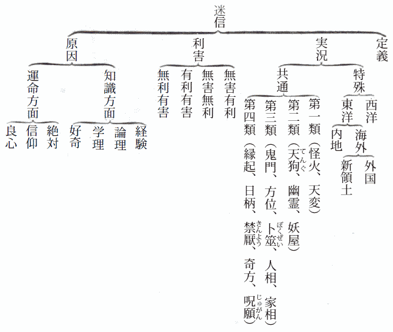
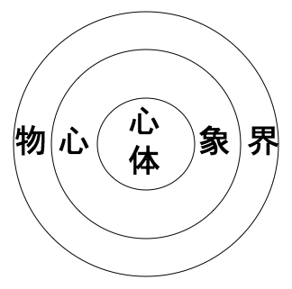
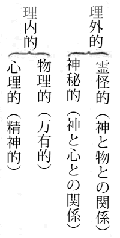
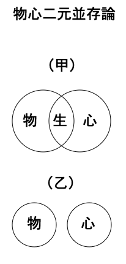
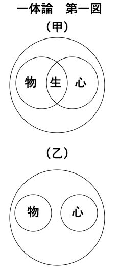
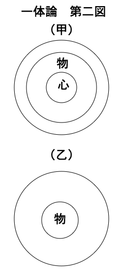
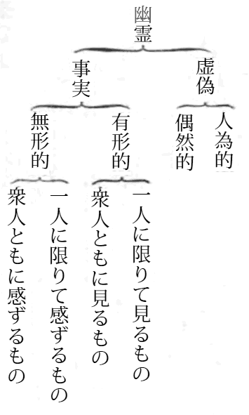
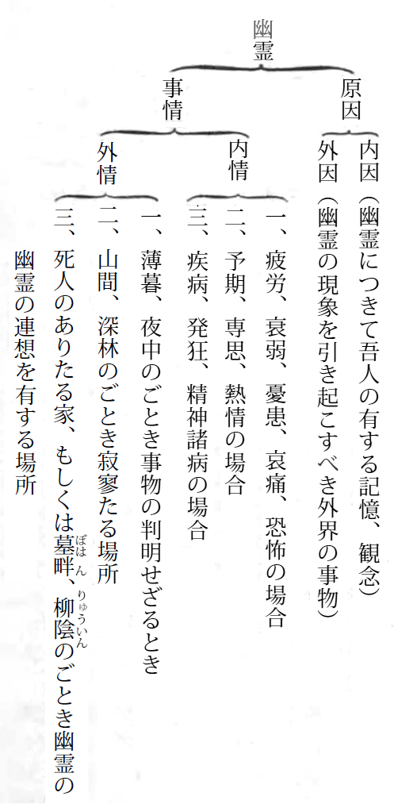

わが国は今日なお迷信盛んにして、宗教もその雲におおわれ、精神界はこれがために暗黒なるありさまなれば、余は人文のため、国家のために、迷信と宗教との別を明らかにし、有害なる迷信を除きて、正しき信仰の下に宗教の光明を発揮せしむるの必要を感じ、一片報国の微衷より本書を講述するに至れり。
本書の目的は、高等教育を受けたる人士を相手とするにあらず、中等以下の社会、あるいは小学卒業の程度の人にして、迷信の海に漂いつつある人に示さんとするにあれば、高尚の学説を加えず、煩雑の論理を避け、平易にして了解しやすきを主とせり。
本書は家庭教育の教訓材料、社会教育の講話材料に供給せんとの予想にて、できうるだけ例話、事実談を多く引用することとし、また、なるべく興味に富めるものを選抜することとなせり。しかして、その談話は古人の書より抄録するよりも、余が内外各国の実地を踏査して、直接に見聞せしものを多く掲記したり。ゆえに、教育家および宗教家はもちろん、いやしくも家庭の父兄たるものは、いかなる社会を問わず、本書を一読して、教訓、講話の資料に採用せられんことを望む。
大正五年二月
［＃改ページ］著者 しるす
ここに迷信と宗教との関係を述ぶるに当たり、まず、迷信とはなんぞやの定義を知らなければならぬ。しかるに、迷信はその範囲はなはだ広く、かつその種類すこぶる多くして、精確なる定義を与うることは困難である。ただ普通の見解によれば、道理なきことまたは道理に背きたることを、道理あるがごとく、または道理にかなうがごとくに誤って信ずることであろう。そのほかに、なし得べからざることをなし得べしと信じ、これによって己の私情を満たし、
先年、文部省にて
迷信は地方により種々雑多にて、四国地方の犬神 のごとき、出雲 地方の人狐 のごとき、信濃 地方のオサキのごときは、特にその著しきものなり。
とあり、またそのつぎに左の八項を掲げて、これを諭すべしと書いてある。
（一）狐狸 などの人をたぶらかし、または人につくということのなきこと。
（二）天狗 というもののなきこと。
（三）祟 ということのなきこと。
（四）怪しげなる加持祈祷 をなすものを信ぜぬこと。
（五）まじない、神水 等の効の信頼すべからざること。
（六）卜筮 、御鬮 、人相、家相、鬼門、方位、九星 、墨色 等を信ぜぬこと。
（七）縁起、日柄等にかかわることのあしきこと。
（八）その他、すべてこれらに類するものを信ぜぬこと。
つぎに、高等の方には本文中に、（二）
（三）
（四）怪しげなる
（五）まじない、
（六）
（七）縁起、日柄等にかかわることのあしきこと。
（八）その他、すべてこれらに類するものを信ぜぬこと。
世には種々の迷信あり。幽霊ありといい、天狗ありといい、狐狸の人をたぶらかし、または人につくことありしというがごとき、いずれも信ずるに足らず。また、怪しげなる加持祈祷をなし、卜筮、御鬮の判断をなすものあれども、たのむに足らず。およそ人は、知識をみがき道理を究め、これによりて加持祈祷、神水等に依頼するがごとき難儀の起こりしとき、道理をわきまえずして、みだりに卜筮、御鬮等によるがごときは、いずれも極めて愚なることというべし。
と説いてある。これらによりて、迷信のいかなるものかを知ることができる。迷信を述ぶるには、ぜひとも妖怪の話を交えざるを得ない。なぜなれば、この二者はほとんど同一の関係を有し、妖怪はすなわち迷信、迷信はすなわち妖怪といってよいほどである。世間多くの人は、妖怪ならざるものを妖怪と信じている。これすでに迷信である。また、その迷信にさらに種々の迷信を付会して、妖怪を解釈するありさまなれば、ここに迷信の題下に各種の妖怪をも併記することにする。
これより、まず西洋の迷信より説き起こし、わが内地の迷信に及ぼし、終わりに迷信の説明を結ぶに当たって、宗教と迷信との相違を述べたいと思う。
「心灯を
ひとり旧教国のみならず、新教国にも迷信がたくさんある。キリストが金曜日に十字架上で殺されたというより、一般に金曜日を不吉の日として、今でもその日に人を招くことを避け、旅立ちもなるべく見合わすようになっている。また、西洋では一般に十三の数をはなはだしく嫌う。これも、ヤソ教から起こった迷信であると聞いている。十三日、十三番地、十三番室などは大いに嫌われものである。なかんずく、十三人同時に食卓について食事するのを最も不吉としてある。余が先年、英国滞在中、避寒のために南海岸のボーンマスという地に移り、一カ月ばかり下宿していたことがある。その下宿屋の客が、ちょうど十三人であった。そこで、食事ごとにその家の娘が一人お客に加わりて、食室へ列席することに定めてある。もし、客中の一人が、あるいは病気、あるいは外出して食堂へ出席せぬ場合には、急に娘を食卓より退席させる騒ぎが起こる。しかも、その家は新教信者であった。
その他、ヤソ教には関係のないことで、しかも一般に避け嫌う迷信がある。例えば、食卓の上に塩をこぼすを不吉とし、ガラス窓の中より新月を望むを不吉とし、朝起きて上靴の右と左とを間違えてはくを不吉とするの類が多々ある。これと同時に、吉兆として喜ぶ迷信もすくなくない。例えば、路上にて落ちたる
かくのごとく西洋にも種々の迷信があり、また、その迷信が宗教中にも混じているけれど、これを東洋に比するに大なる相違がある。双方対照して見ると、西洋の方は迷信がないも同様であって、東洋にはすこぶる多く、宗教そのものがほとんど迷信によって成り立っているほどである。
西洋といえば、もとより露国もそのうちに含まれているわけだが、その実、露国は西洋と東洋とのあいの子のようなもので、よほど東洋に近いところがある。なかんずく、迷信の状態は東洋と格別違っておらぬ。余は先年、露国漫遊の際、人民の信仰の程度を見るに、過半は迷信であると思った。地獄極楽の図は、英国や米国にて見ることができぬけれども、露国にては数回これを見た。また、眼病を医し、歯痛を治するに、一心をこめて偶像を礼拝するなどもなかなか多い。近ごろ『東京朝日新聞』に露国の迷信を掲げてあったから、参考として左に転載しておく。
信仰と迷信とは正反対でなければならぬが、実は仲のよい隣人である。ロシアはお寺の多い国である。宗教上の祭日のばかばかしく多い国柄である。したがって、国民はそれだけ宗教心の強い人民である。宗教心が強いにもかかわらず、迷信に至ってはなおさらに強い。日露戦争後に革命の気運が一時にあがった時分なども、ガボンなどという坊主がなにか一つ怪しげなことを唱えると、民心がそれへ響応するといった風で、今度の戦争に際しても、フランスのマダム・テップの予言などというものがすぐに露訳されて、飛ぶがごとくに売れたものである。ロシアにはツイガンという一人種がいるが、この人種に限って、女性は卜者 で運勢見と定まっておる。ちょうど日本の巫女 という風で、ツイガン人特有の黒い髪を打ちさばいて、金銀貨や玉石の類で幾条となく首飾りを巻き付け、たいがいは赤の着物をまとって、街の辻に立ったり、または家の裏口から入ってきて売卜 を強うるのであるが、ロシアの無知な民衆の間には、なかなかにツイガンの占いが歓迎されるのである。また、私がこれまで実験したところによると、露人はなかなか盛んに御幣 をかつぐ連中である。しかもそれは、有識者と無識者を通じての習俗である。私は露国では一流の記者数人と露軍の戦線へ従軍中、ある日晩餐 の食卓で、隣席の『ノーウオエ・ウレーミヤ』のＫ君が、ちょっと手の届きかぬる所にある塩を取ろうとしておるのを見たから、なにげなく私はそれを取ってやろうとしたら、突然非常な剣幕で手を振って「いけない、いけない」と拒絶した。理由が全く分からずしてあきれていると、ほかの人が微笑しながら、「ロシアでは、食卓の上で塩の取りやりは非常に忌むことになっておる」と話されてはじめて合点がいったが、その忌むわけだけは一向に分からずにしまった。
また、露都に有名な日本好きの寡婦がいるが、私も平素非常に世話になっておったので、その年の復活祭になにか贈り物をしようと思って種々案じた末、デンマークの陶器を選んだ。これは北欧の一名物で、多くはいろいろな動物の置物であるが、その細工の精巧なると、薬のかけぐあいのおもしろいので有名である。さて、私はなにげなく象と駝鳥 の置物二つを買って、マダムのもとへ持って行ったところが、はじめは大喜びで嬉 しそうに早速その紙包みを解いたが、中から最初に駝鳥が出るやいなや、マダムは一目見たばかりで、これはとばかりにオッたまげた。私もなにごとかと驚いた。たまげながらマダムの語るところを聞くと、「わたしは寡婦である。駝鳥は子供を持ちきたすものである。これは大変だ、アー大変だ」というので、暫時は泣かんばかりだ。贈り物の主は呆然 自失せざるを得なかった。迷信はおおむねかかる程度にまで、有識者、無識者を通じて露人の頭へ染み込んでおる。日本でも鼬 の道切りを忌むように、ロシア人もまた、黒猫が道を横切れば、非常に悪い兆しであるといって大騒ぎをやる。この種類のもので、私の知っておるうちの興味のある若干を、左に書きつけてみよう。
また、露都に有名な日本好きの寡婦がいるが、私も平素非常に世話になっておったので、その年の復活祭になにか贈り物をしようと思って種々案じた末、デンマークの陶器を選んだ。これは北欧の一名物で、多くはいろいろな動物の置物であるが、その細工の精巧なると、薬のかけぐあいのおもしろいので有名である。さて、私はなにげなく象と
一、寝台から起きたときは右足をさきに床に下ろせ。
一、鳥が室に入ったのは死魂が来たしるし。
一、黒い油虫の夢を見たときは許嫁 ができる。
一、ろうそくは三本立ててはならぬ。必ず二本か四本立てよ。
一、熟した果実の夢を見れば恋文が来る。熟せぬ果実を夢みれば涙の種。
一、牛の群れが夕方家に帰るとき、赤牛がさきに立てば翌日は好天気。
一、旅立ちの前刻には、家人すべていったん椅子に着け。
一、新月を見たとき、すぐ財布を握れば金が手に入る。
一、えくぼは誕生の際、愛の女神がキスした跡ゆえ、えくぼのある人は永久に愛をうく。
一、右の目がかゆきときは泣くことあり、左の目がかゆければ嬉 しいことあり。
一、十三の数は不しあわせ。
一、鳥が室に入ったのは死魂が来たしるし。
一、黒い油虫の夢を見たときは
一、ろうそくは三本立ててはならぬ。必ず二本か四本立てよ。
一、熟した果実の夢を見れば恋文が来る。熟せぬ果実を夢みれば涙の種。
一、牛の群れが夕方家に帰るとき、赤牛がさきに立てば翌日は好天気。
一、旅立ちの前刻には、家人すべていったん椅子に着け。
一、新月を見たとき、すぐ財布を握れば金が手に入る。
一、えくぼは誕生の際、愛の女神がキスした跡ゆえ、えくぼのある人は永久に愛をうく。
一、右の目がかゆきときは泣くことあり、左の目がかゆければ
一、十三の数は不しあわせ。
かぞえ立てれば数限りがないが、これらはみな真剣に受け取られておるので、百も二百もあるこの種の迷信は、常にロシア人のために悲喜の種を作っておる。
露暦四月一日は、嘘 をつくことの公許された日としてある。楽天的で子供らしいところのあるロシア人のことであるから、二、三日前から趣向を凝らしておいて、当日になるとさかんにだまし合いをやる。親戚、知己 の間はもちろん、遠隔な土地にいる者をすら電報でかつぐことがある。まだ床の中にいる時分に、電話で「だれそれが急病で危篤だ」などとくると、ふと四月一日であることは忘れてしまって、自動車ぐらいで駆けつけてみると、危篤の病人が真っ先に出てきて握手をして、家族一同でお客を笑い倒すなどということは、この日、露人がよくやる悪戯 である。「大人 には赤子 の心あり」と唐人も言っておるから、ロシア人は大人または哲人であるに相違ない。
右の記事にて、露国の迷信がいかに東洋に似ているかを知ることができる。露暦四月一日は、
東洋の迷信としては、第一にインドを挙げなければならぬ。インドには種々の宗教あるも、バラモン教が八、九分どおりの多数を支配しておるから、おもにバラモンの迷信を述べておこうと思う。この教派にては、牛を神様の動物として貴んでおる。あたかも、わが国にて
余がインド漫遊中に実見したことだが、インド人は己の影が食中に入れば、その食をすてて決して食べぬ。これは彼らの迷信であるそうだ。また、インド人が己の
インドにてはバラモン教が最多数を占めているけれども、そのほかにマホメット教、火教等が並び行われておる。この異なりたる宗教の間は、ただに結婚を交えぬどころではない。全く受けず施さずであって、茶一杯、水一
バラモン教にては、だれも聞いて知っておることだが、四民の階級がわかれ、第一階級をバラモン種と申し、一般より非常に敬い貴ばれ、食物を献ずればかくかくの福徳
つぎに、シナの迷信はいかんというに、これまた驚くべきもので、決してインドに負けぬほどである。かの国にては罪人を死刑に処するに、市街の四つ辻のごとき、人の最も
わが国の
日本人にはずいぶんばかげた話だが、数日前、南山の裏山で銅子児 のやり取りに余念のない苦力 六名の傍らに、どこから来たか全身白毛の子狐が飛び出した。それ生けどれと追い回った末、狐はとある岩陰の穴に逃げ込んだ。即座の頓知に、苦力らは付近の枯れ松を折って穴の前でくすべると、子狐は煙にむせて四苦八苦の折柄、アアアラ不思議やいぶかしや、真上の岩上にスックと立った年経し白狐、恨めしき形相ものすごく苦力らをにらめた。元来、白狐を神と崇 めているシナ人の迷信が急におじけを呼び起こして、苦力らは雲を霞と老虎灘 に逃げ帰ったが、そのうちの一人は家に帰り着くや大熱を起こし、阿修羅のごとく荒れ狂って、「憎き者ども、わが子の仇 、七生 まで祟 りくれん」など囈言 を吐くより、五人は生きたる心地もなく再び南山にとって返し、狐の穴に叩頭百拝 の詫 び言よろしくあり。帰れば大熱の苦力はケロリとなおりおるに、一同申し合わせて村内にこれを伝え、十二日には狐の祠 を建てんと協議を凝らし、前祝いとして爆竹一万発を大連より買いきたり、狐明神社 の地鎮をなしたりとは、嘘 のようで真 の話なり。
その他、右はシナ人の迷信の一例を示したまでである。
余が先年朝鮮に漫遊したとき、京城市外およそ一里ばかり隔たりたる所に、開運寺と名づくる寺院があるが、これをたずねて意外の感を起こしたことがある。余がその寺の門に近づかんとするときに、朝鮮の一紳士が威儀堂々として門より出できたるを見た。そのときに案内者に、かの紳士はなんの用あってこの寺に来たりしやをたずねしに、彼は官吏にならんために
はじめて朝鮮に入るものの目に、第一に触るるものは墓地である。すべて山がかりたる小高い所は、一面に
日露戦争の後、日本人が続々渡韓するようになり、その翌年、梅雨の期節に雨天が平年よりも長く続いた。そうすると朝鮮人が申すには、「日本は雨の多い国であるから、日本人がその雨を持ち込んできたに相違ない」とて、大いに不平を訴えたことも聞いておる。これも迷信の一例である。
また、朝鮮にては売卜、予言の類が大いに行われておるが、ちょうどわが国の
台湾に居住するものには、内地人、本島人、
蕃人の宗教は祖先崇拝の方である。彼らは、人死するも霊は滅せぬものと信じ、祖先の霊は山林に集まりて今現に存しておると信じ、蕃地には神山神林があって、その樹木は一枝たりとも伐採することを禁じてある。また、大樹の老いたるものにも神霊が宿っておると申して崇拝しておる。また、彼らの
祖先の霊につき右のごとく信じておるはよけれども、これを祭るには必ず他人種の
蕃人は父母の死したるときにその死骸を床の下に埋め、目印に石を建てて去り、その家は自然にくずるるに任せ、他家に移住するとのことである。葬式には神詞のごときものあって読み上ぐるそうだ。あるいはまた、死者あれば家人相集まりて
彼らの平常生活における迷信の風俗について伝聞するところによると、夜中、犬の遠ぼえするを聞くときは、家族中に必ず死するものあるべしとの迷信より、
また、ある種族は出産のときに自宅にて子を産むを不吉とし、村外に産室を設けて産婦を入れ、家人一切これに近づかぬ風習もある由。また、ある種族には
台湾にて本島人と称するは、シナ系統の人種のことである。これに福建省系統と広東省系統との別があるが、ここには二者を合して論ずることにしよう。
本島人の宗教は、シナなかんずく
本島人の死後についての観念はやはり霊魂不滅説にして、その魂に三個ありと申しておる。その第一魂は幽界に入り、第二は墓下にとどまり、第三は家中に住するものと信じ、幽界の魂は僧侶をして慰めさせ、墓下と家中の魂は子孫がこれを慰むべきものと定めてある。しかし、彼らの神仏崇拝は、全く一身一家の
神仏に祈願するときには、
彼らの迷信を利用し、これによりて生活しておるものがまたたくさんおる。その名称に法師、道士、
その他、人の名に
今一つばかばかしい迷信話は、昨年台湾に暴徒の起こった原因である。そのときの主謀者が愚民を扇動するに最も力ありしは、某地に耳の長く垂れて肩に掛かれる子供生まれたるが、これぞ日本を駆逐して台湾の王たるべき人なりと、五百年以上存在すと称する予言者の語りしによれる由、台湾よりの通信中に見えた。まず、台湾人の迷信の程度はこれらの諸例によって、十分測り知ることができる。
台湾のつぎには
つぎに、祖先崇拝としては琉球ほど墓場に金を掛ける所はない。一つの墓場でも安くて二、三百円、高いのは五、六千円といわれている。しかして、その祭りが実に頻繁である。そのほか、各戸には必ず霊位と称して
以上の、天を祭り祖を拝するは決して迷信というわけではないが、これに付帯していろいろの迷信がある。まず、琉球名物のユタを述べておきたい。ユタは内地の
台湾にては金紙、銀紙を用うるが、琉球にては紙銭を用いている。紙銭は白紙に銭の形を印したものである。琉球人は、墓場において祖先の祭りをするときにはこの紙を焼く。そうすると、その銭が冥途へ届くと信じている。
死人の魂が火になって現るるということは、琉球にても伝えられている。毎年旧暦八月八日より十五日までの間に、タマガリを見ると称して幽霊火を見に出かける。これを見るために山上に台を造り、その上にて望む。もし、死人や災難のある家には、必ずこの火が見ゆると信じている。
人が水中に入りて
火事は付け火を除くのほかは、すべて天火と称して、天より罪を受けたるものと定めている。家が焼けかかって幸いに消しとめたる場合には、仮に小さき
つぎは伊豆七島の迷信談に移る。七島の宗教は御倉島を除くのほかは概して仏教なるも、信仰は皆無である。ただ、祖先崇拝は盛んに行われている。それゆえに、墓場を大切にする風がある。例えば、七島中の新島や神津島は墓場を清潔にすることはなはだしく、毎朝、嫁の仕事は墓場の掃除である。女子が嫁に行くとき持参する第一の要具は、墓掃除の
また、七島中に神社もあって島民はこれに参拝するが、
七島には
大島の神社の境内に、
七島には
大島の迷信談中に、日忌みのことを忘れてはならぬ。毎年一月二十四日より二十五日を日忌みと唱え、その夕は船幽霊が襲いきたると信じ、昼間より戸を閉じ、決して屋外へ出でぬ。また、牛を戸内におくことを忌み、必ずこれを海の見えざる山の陰へつなぎおく。その由来については、あるいは、むかし人民を虐待せし代官を殺して、海に流したることありとも、また、豊臣時代にヤソ教を信じたる婦人を殺して流せしことありとも、種々の俗説伝わりおるも、はっきりした原因は分からぬ。この風習はただいまにては、大島中の泉津だけに残っているそうだ。
また、新島にては海上に魔女が現るるとの迷信がある。伝説によると、ときどき海上に
伊豆七島は絶海の孤島にして、内地と交通すること少なく、古代未開の遺風を存しているから、これまた迷信の多いはやむをえない。しかし、日本内地は文化の程度も高く、知識もよく普及しているから、右ようの迷信はないと申したいが、残念ながら内地の迷信も孤島に負けぬ、あるいはかえってそれ以上のことがある。これより内地における迷信を述べる順序として、西南の離島たる
壱岐と対馬は朝鮮、シナに接近しているから、かの風俗が入りまじっている。同時に迷信も似ているようである。しかし、今ここには、なるべく特殊の迷信を掲げたいと思う。さて、この二州は風俗習慣とも大同小異にして、双方共通の迷信が多い。余は、もっぱら壱州において聞き込みたる迷信を述ぶるつもりである。
この両州の宗教は仏教なれども、その実、祖先教である。人が寺へ
壱州の民家には、必ず神棚と仏壇と
壱州には
五島には狐も
また五島にては、船幽霊の説が一般に信ぜられている。海上、船なき所に船の形を見、あるいは
また日州にては、河童をガクラと呼んでおる（四国、山陽などでは河童をエンコウといい猿猴と書く）。熊本辺りでも、狐は人を惑わし、河童は人につくもののごとくに申しておる所がある。また熊本県下の葦北郡辺りにては、河童と
河童のほかに
筑後の善導寺といえば、浄土宗の一本山として名高い寺である。その寺へ産婦が
佐賀県三養基郡綾部八幡社に、毎年風神の祭りを行う例がある。旧暦六月十五日に
大分県方面にては犬神の迷信が多いが、これは四国より伝来せしものなれば、後に述ぶることにしたい。また、
つぎに、四国の迷信として第一に犬神の話をせなければならぬ。実に四国は犬神の本家本元である。元来、四国には
犬神の濫觴 はいつのころであったか。ある残忍の人が一匹の犬を土中に埋め、首だけ出し、口の届かぬ所へ飯をうまそうに盛って置いたところが、飢えに飢えて腹の中にはもうなにものも残さなくなった。犬は舌をうち、よだれを流してそれに食いつこうとした。けれども情けないことには、美味は口さきを離るること尺あまり、見るには近く食うには遠い。もがいてももがいても、埋没の身ははかない食欲をみたすことができなかった。あくまで残忍な悪戯者 は、その身悶えするさまを快げに打ち眺めていたが、時分はよしと、やにわに抜く手も見せず、犬の頭を刎 ねてしまった。バッと立ち上がる血煙の下に、犬の首はコロリと落ちたかと思うと、さにあらず。恐るべきは犬の執念で、首はそのまま飛んで、くだんの飯に食いついた。周囲に見ていた人々は、あたら炊きたての飯を畜生ごときに食わせるは惜しいと、首を突きのけあさましくも、みなみな寄ってたかって飯を平らげてしまった。けれども、飯にこもって彼らの体内に収められたる犬の妄執は、ついにその人々に乗り移って、彼らはついに人間ながらの犬と化し去った、などと伝説に伝わっている。
伊予の犬神の由来については、いまだ伝説にも口碑 にもこれを聞かぬが、その発作する動機の多くは耳目の欲にひかさるるので、他人の衣服もしくは食物に一念動けば、たちまちその一念、われとも知らず先方に通ずるのである。これは南予のさる家の出来事であるが、ある日一人の来客があった。折から家内一同なんの祝いか、重箱に詰められた赤飯を茶碗 に移しつつ、しきりに舌鼓 を打ってる最中、不意の客来にみなみな慌てて食具を背後に隠した。座に招ぜられた客は、チラとこの体を見たが、さあらぬ体でよもやまの話をし始めたが、どうも重箱に気がかかると見えて、物言ううちにも、しきりに主人の背後へ卑しい視線を送るのであった。それを知るや知らずや、主人は別段重箱を取り出す気色もなく、ただお茶などくんで待遇していた。すると客はにわかに腹を抱えて「ア痛たたたた」と苦しみ出した。サァ大変というので、家内の者みな寄ってきて介抱したが、発熱さえして油断ならぬ重態、ウンウンうなって虚空をつかむという騒ぎ。ソレ、医者というので、小僧が尻まくりして飛んで行く。迎えられた医者は、しばらく脈を見たり胸をたたいたり、形のごとく診察したが、小首打ち傾けて不審の体、「あまりといえばとっさの病気、全体何病でおざりまする？」と主人が医者の顔をのぞきこんだ。「さっぱりわかりませぬ。愚老もこれまで種々の病気を診 ましたが、このような病気は、ついぞ診たこともおざらぬ」と、じっと病人をみつめながらしばらく考えていたが、ハタと膝を打って「どうも様子のおかしきところ……もしや、これが世にいう犬神ではおざるまいか」という言葉も終わらぬうち、病人はにわかに顔色を変え、慌てて拇指 の爪を隠した。早くもそれに目をつけた娘の一人はいちはやく「アレ爪を……拇指……」と大声をあげたので、みなみな気味悪げに顔と顔とを見合わせた。主人はすかさず枕頭ににじり寄り、「さては、お前は犬神だったのじゃな。ゼ、全体どこの犬神じゃ、どこに住んでけつかるのじゃ。サ、それからぬかせ……」と、ことのほかの立腹。「それから目的はなんじゃ、おおかた台所でも荒しに来たのじゃろう」と畳みかけて問い詰める。（以下これを略す）
右は伊予の犬神の由来については、いまだ伝説にも
わが阿波の国には従来犬神と称するものありて、一種の国産のごとく世人に伝えられしが、元来、犬神なるものは代々家に伝わり、血統相続するものとして、社交上擯斥 せらるることはなはだしく、往々結婚の妨害となることあり。ゆえに、その家に生まれたるものは、たといいまだ狂態を示さずといえども、人すでにこれを犬神と称し、ともに社交を結ぶを恥ず。あに不幸といわざるべけんや。思うに、犬神は一種の精神病にして、狐憑 き、狸 憑き等とさらに異なるところなきがごとし。ただここに注意すべきは、犬神となりて狂態を演ずるものは、たいてい女子にして、男子は千人中わずかに一、二人あるに過ぎず。ゆえに、犬神の血族中にても、妻子はみな犬神と呼ばれて擯斥せらるるにかかわらず、男子はおおむねこの称を受けざることと、犬神の人に忌まるるは主として食物に関せざるはなく、したがってみな貧困者にして、士族または富裕の家に犬神ありしを聞かざることとの二事なり、云云 。
阿波の池田町は四国中の犬神の本場と唱えられておるが、余は両度までこの町に遊び、犬神の実況についてくわしく聞いたことがある。昔は毎年犬神つきがたくさん生じたが、近年は次第に減じ、ことに小学校卒業者についた話を聞かぬと申している。四国には、犬神のほかに
高知県にては
その他の迷信としては、愛媛県道後近在を通過せしとき、田間に石地蔵が立っているが、これに通行の人が泥を打ちかける。それゆえに、全身泥をもって満たされている。その意味をたずぬれば、「この地蔵は
伊予にて、大人が子供をおどすときに「ガンゴウが来る」というそうだが、ガンゴウとは恐ろしい化け物のことらしい。また、地震のときに「カーカーカーカー」と呼ぶということも聞いている。「カーカー」は雷のときにおける「桑原」と同じく、地震よけのマジナイらしい。これに反して、岡山県にては地震のときに「トートートートー」と呼ぶそうだが、わずかに海を隔てて、その呼び声に父母の相違あるはすこぶるおもしろい。
また愛媛県にて聞いたが、人の死することを、温泉郡では「広島へ綿買いにゆく」といい、越智郡では「広島へ茶買いにゆく」といい、新居郡では「広島へタバコ買いにゆく」というそうだ。これは死ということを嫌って、遠方へ行くという意味であろうけれども、広島と限ったのはおかしい。しかるに、広島県の方面にて聞けば、人の死するを「長崎へ茶買いにゆく」というそうだ。
四国のつぎには、その対岸なる山陽の迷信を説くのが順序であるから、これより山陽における特有の迷信を探るに、まず山口県には犬神説大いに行われ、食物が腐敗したり、料理が出来損なうと、ただちにその原因を犬神に帰することになっている。これは四国より伝来したる迷信なること明らかである。つぎに
備前のチュウコとは空中に見る怪火にして、他地方の
つぎに、岡山県の名物はカンバラである。カンバラは他地方のいわゆる
神社に関しては、安芸の宮島の七不思議というものがある。
その他、
山陰の迷信としては、第一に
いずれの地方にても、結婚の際には双方互いにその血統をただすを通例とす。島根県地方には、他国にいまだかつて見聞せざる一種の家系ありて、結婚の妨害をなすことはなはだし。そは、すなわち人狐持ちと称するものにして、人狐を使役する家系なり。すなわち、この家系に属する人は、よくこれをして厭忌 するところの人に憑 かしむという。かくのごとき狐に憑かれたる人の言行は、すこぶる奇怪なるものあり。今その一例を示さば、人もし「汝 はいずこより来たりしか」と問わば、彼はまさに、「前日、某件にてわが主人を苦しめしゆえ、主命に従い、その讐 を報ぜんため来たりしなり」と答うるなるべし。また、もし「汝ここに来たるとも、なんの要もなかるべし。速やかに帰れ」といわば、彼は「君の意に従って帰る代わりに、君もまたわが意に従うことを肯 んずるか」と反問せん。よって、その欲するところを問わば、「願わくは、小豆飯、豆腐汁、および鯛 の味噌 漬けを得ん」というを通例とす。ゆえに、これを与うれば喜び食らう。その状全く狐に異ならず。暴食し終わりて、かついわん、「われ、いまだ満足せず、さらに当家所有の土地一カ所を与えよ。しからずんば、この人（被憑者）の命を奪わん」と。このとき、「われ、まず鍼灸 をもって汝を殺さん」といいて狐憑き者を捕らえ、その腹を按 じて塊あらば、そこに鍼灸せんに、彼は必ず「請 う、ゆるせ、今まさに去らんとす。ただし、しばし、君ここを去れ」といわん。よってその言のごとくせば、狐憑き者窓を開け、苦しき声を発して倒れ、はじめて平気に復するを得べし、云云 。
右の報告のごとく、さて、諸国のことを伝え聞くに、九州には
人狐の迷信は
伯州にては、西部は
つぎに神社については、出雲の松江市をさること一里半ばかりの所に八重垣神社がある。神代の「出雲八重垣
また寺院の方にては、伯州東伯郡の山間のある寺より金を借りて商法すれば、必ず大当たりであるとて、諸方よりこの寺に参詣して金を借り、一年の後にこれを二倍にして返納する所があると聞いている。ただし、一人に対して貸す金高は五十銭のきまりだそうである。
わが国の三都といえば、文明の程度最も高く、迷信などは少なかるべき道理なるに、実際はその反対で、けだし、三都ぐらい迷信の強い所はない。京都はわが国の宗教の中心であるにもかかわらず、神社仏閣の参詣者は、一身一家の目前の福利を授かりたいとの志望が多い。大阪ももとより同様である。
ここに京都の迷信の一例を挙げんに、余が明治三十九年の春、
また、大阪、神戸地方についてもいろいろ聞いたことがあるが、その一つを挙ぐれば、先年この地方に天然痘が流行しかかったことがある。ちょうどそのとき、余は
京阪の迷信とともに、
また、
また、大和国大峰山の麓に
東海道には三河の豊川稲荷、小田原の道了山をはじめ、三尺坊や半僧坊などの
つきものとしては東海道特殊のものはないが、まず
奇異の迷信としては、ここに二、三を挙げてみよう。
相州鎌倉の某寺に
今一つ鎌倉の迷信を申さば、
右のごとき話は各所にあるから、いちいち挙げることはできぬ。まず、東京以西の迷信談はこのくらいに切り上げて、以東に移ることにしよう。
東京以東に
その他の迷信については別段著しいものはないが、余が千葉県巡回中に出逢ったおもしろい出来事がある。時は明治四十二年の春であった。千葉県にて東京方面より伝わってきたと申しているが、今年は婦人の
これに類したる話は、余が近年埼玉県秩父郡内を巡講するとき、その地方の村々にて、熊谷方面より化け物が襲ってくるとの伝説が盛んに伝わっていた。これは後に聞くと、余は世間にて妖怪博士と呼ばれているから、妖怪博士が入り来るとの風説が誤伝したのであったそうだ。実に抱腹の至りである。
ついでに、今一つおもしろい迷信談を申しておこう。埼玉県大里郡内に妻沼という村がある。この村に
また松に至っては、むかし聖天様が松の葉によって目をつかれ、御悩みになったことがあるといい、あるいは聖天様は願を掛くれば、すぐに福を与えて下さるから、待つには及ばぬということより、松を嫌うようになったとも申している。とにかく、この村にては松の木は一本もなく、もし他より持ちきたったならば、早速これをすてて
東京以東の迷信談はこのくらいにとどめて、これより東京市中の迷信に話を移そうと思う。
東京の迷信はなかなか盛んなもので、縁起ということが最もやかましい。まずその一例を挙ぐれば、スルという語を嫌ってアタリという。例えば、
また、東京にては電話の番号までに縁起がやかましい。その中に一般に嫌われるのは四九八九、これは四苦八苦、三七八六、これはみな病む、三七四二、これはみな死に、四二七九、これは死に泣くというので、嫌われるそうだ。むかし哲学館で電話を願い出たときに、ほかの番号は他に取られた後で、ただ残っているのは四四四であった。この番号はだれも嫌って断るとのことで、哲学館は縁起を構わぬからその番号を取ることにした。
人相、家相、
先年、某新聞に見えたが、ある商店の小僧が主人の金を盗み、自ら発覚せんことを恐れ、深川の成田山に
さらに、東京下等社会の迷信を挙ぐると、本所業平橋の南蔵院という寺に石地蔵がある。心願あるものがここに来たり、縄をもってその地蔵を縛り、「もしわが願いをかなわせて下されば、この縄を解いてあげます」と申すそうである。また、
東山道の迷信は順序として
つぎに
つぎに、
つぎに、
栃木県にはワカを信ずるものが多いそうだ。ワカとは他府県の
北陸は概して真宗の盛んなるだけあって、迷信が比較的少ない。しかし、全くないではない。むかしは本願寺の
越前国池田地方は山間の
伊豆の
古来、不可解として伝えられたる越後の七不思議は、今日ではもはや不思議ではないと知られたが、ただ、今日なお妖怪の作用に帰せられているのは
余が越後の北魚沼地方に巡講せしときに、珍しい雷よけのマジナイを見たことがある。そのマジナイは、旅行者が
北陸道といえば
そのいわゆる特殊とは
佐渡は従来、
二岩団三郎は神社として祭られてあり、かつ、その所住と称せらるる
福島県にて聞くに、毎年二月
福島県にても
山形県米沢地方にては、人の旅立ちするときに、その
余が
つぎに秋田県の迷信としては、第一にタマシイの話を挙げなければならぬ。他県にて
同県にて、地震のときにむかしから「万歳万歳」と呼ぶそうだ。これは、雷のときは「桑原桑原」というと同じく、地震よけのマジナイらしい。
陸中の国でありながら秋田県に加わっている
本邦中のスイスと呼ばるる十和田湖畔の十和田神社に、
その他、先年、青森県、岩手県、宮城県を一巡せしとき、いろいろの迷信談を聞いたことがあるけれども、その多くは失念したからここに述べぬ。
北海道は全国各方面よりあらゆる階級の人が集まっているから、迷信もあらゆる種類が集まっているはずなるが、案外迷信が少ない。これは新開地にして、その土地に古来の伝説がない故であること明らかである。他府県では
内地にて一般に恐れらるる、天狗か狐のつくとか
内地にては諸方に化け物屋敷がある。東京などはことに多い方であるが、これまた北海道にない。ただ一度聞いたことがあるのは、日高の国、
しかるに、北海道に住するアイヌに至っては、ことに死を忌み嫌うこと最もはなはだしく、もし一家に死人があれば、その家を焼き去りて他に移住し、死人のことは決して人に話さず、人より問われても、決して答えぬと聞いている。そのように、死んだ人の話をせぬきまりであるから、アイヌには昔の出来事の歴史談が伝わっておらぬということだ。余が十勝にてアイヌの
以上は、およそ余が各府県巡講の際、直接に見聞せし談話中、多少その地方の特色とすべきものを掲げたが、なかなかこのくらいで尽きたわけではない。また、かかる特種のほかに全国共通の迷信がたくさんある。これより、共通の方を話すことにしよう。
東西ともに怪火の種類すこぶる多く、
鬼火については古来種々の迷信があって、それも日本のみに限らず、諸外国にわたっておる。例えば、英語のウィラザウィスプおよびドイツ語のイルリヒトなど、いずれもこれと同様の現象を意味し、少なからず迷信が付帯しておる。しかし、理科学的知識の普及に従い、かく迷信は次第に除去せられ、いやしくも不思議と考えらるることは、大部分、理科学的に研究せらるるようになった。左に、鬼火に関する従来の理科学者の研究結果の概要を記してみよう。ただし、確かに鬼火という中には、狐火、人魂 、不知火等、すべて夜間に光り、俗に不思議とみなさるる現象を含んでおる。
鬼火に関する理科学的研究結果が、はじめて世に発表されたのは、西暦一七二六年のことで、研究者はドイツの物理学者ムッシェンブレウグであった。この記事によると、ムッシェンブレウグは、鬼火が実際夜間に見ゆることについて、少しの疑いも置かない。しかして、自身これを捕らえて見たら、蛙 の卵に類似した粘着性の物質で、多分これは燐素であろうと述べている。一八〇〇年の初めに至っては、鬼火の原因は沼気 、燐化水素、あるいは双方の燃焼にありとの学説が起こったが、由来、鬼火を見たという人々の言がまちまちで、したがってその種類も非常に多く、中にはずいぶん荒唐無稽の語も付随しておるため、学者はその原因についてだいぶ疑いを抱くようになり、ドイツの雑誌『アナーレン・デル・フィジーク・ウント・ケミー』の主筆ポッゲンドルフのごときは、特に鬼火を見たという人々の談を募集し、各方面より来たあまたの報告を世間に発表したが、これが鬼火なるものは実際あることの証となり、かつその原因を理科学的に研究する好材料となった。これらの報告中にて最も信をおくに足るものは、有名の天文学者フリードリヒ・ウィルヘルム・ベッセルの報告である。この報告によるに、かつてベッセルは夜間エルベ河に舟を浮かべる際、一部分水が氾濫 した傍らの低地において、淡藍 色を帯ぶるあまた小形の炎を見た。しかして、その炎は絶えず消えたり現れたりし、位置を変ずるものもあり、変じないものもあった。前者は一群をなして横に動き、ベッセルの伴侶 はこれを見て鳥の群れが動くようだといい、舟子は同所において、その以前にも、かかる火をたびたび見たことがあるといった。
ポッゲンドルフの例にならい、ドイツ、ハノーバー市の学者シュタインフォルトは、学術および通俗雑誌を機関として、鬼火に関するあまたの報告を広くドイツ国内に募集し、各報告についていちいち論評を下し、なお鬼火に関する種々の学説を集め、これを一八九三年より一九〇一年にわたって世間に発表した。その中にはポッゲンドルフの鬼火に関する研究をも包含し、全部を合すれば大著述である。要するに、シュタインフォルトの意見は大体において疑惑的だが、決して鬼火の原因を神秘的不可思議のものとはしておらない。これにはもちろん物質的の原因があると信じている。しかしてたいがいの場合、蛍がその原因をなすとの意見のようだ。なお、ドイツ、リューベックのヘルマン・フォルナルシオンおよびエルツバリのミュラーなどいう学者も、鬼火の研究上大いに貢献しておる。
これまでに鬼火を見たという人々の話を総合して考うると、いわゆる鬼火なるものには非常に種類が多いようだ。したがって、その原因とみなすべきものも非常に多く、中にはいまだ明瞭に原因を説明し得ない現象もあるが、これにはもちろん観察者の錯感 （すなわちイルージョンあるいはハルシネーション）もしくは、なにかいまだ人に知れざる物質的のことが原因をなしているので、神秘的不可思議のことが原因であるなどいう説は、理科学者の全然非認するところだ。前記諸研究家の説に従えば、およそ左に掲ぐるようなものが、多くの場合鬼火の原因となるのである。
鬼火に関する理科学的研究結果が、はじめて世に発表されたのは、西暦一七二六年のことで、研究者はドイツの物理学者ムッシェンブレウグであった。この記事によると、ムッシェンブレウグは、鬼火が実際夜間に見ゆることについて、少しの疑いも置かない。しかして、自身これを捕らえて見たら、
ポッゲンドルフの例にならい、ドイツ、ハノーバー市の学者シュタインフォルトは、学術および通俗雑誌を機関として、鬼火に関するあまたの報告を広くドイツ国内に募集し、各報告についていちいち論評を下し、なお鬼火に関する種々の学説を集め、これを一八九三年より一九〇一年にわたって世間に発表した。その中にはポッゲンドルフの鬼火に関する研究をも包含し、全部を合すれば大著述である。要するに、シュタインフォルトの意見は大体において疑惑的だが、決して鬼火の原因を神秘的不可思議のものとはしておらない。これにはもちろん物質的の原因があると信じている。しかしてたいがいの場合、蛍がその原因をなすとの意見のようだ。なお、ドイツ、リューベックのヘルマン・フォルナルシオンおよびエルツバリのミュラーなどいう学者も、鬼火の研究上大いに貢献しておる。
これまでに鬼火を見たという人々の話を総合して考うると、いわゆる鬼火なるものには非常に種類が多いようだ。したがって、その原因とみなすべきものも非常に多く、中にはいまだ明瞭に原因を説明し得ない現象もあるが、これにはもちろん観察者の
（一）腐朽した木およびその他の植物が発光する原因は、これ発光性の菌が繁殖するがためで、直接、木およびその他の植物が発光するのではない。モリシウという学者の説に従えば、約四十五種の発光性菌がある。しかして、腐朽して湿った木の葉などには、往々この種の菌が付着しているから、夜間白き光を発することがある。
（二）蛍と土蛍（羽なき蛍の雌および幼虫）より発する光。
（三）鳥から光の発するは、鳥に発光性菌が付着しているのが原因であろう。
（四）隕石 あるいはガスの燃焼による球形の光。
（五）船舶の帆柱およびその他突出した物体（人体をも含む）より発する、エルモスファイアーと名づくるブラシようの電気放射。
（六）人に持ち運ばるる灯火、遠方にある人家中の灯火、およびその他人工的の火。
（七）沼、ため池、およびこれに類する場所より昇騰するガスには、沼気をはじめ種々燃焼しやすきガスがある。しかして、これに点火すれば、光を放って燃焼するが、その燃焼を自然に起こす原因とみなすべきことがたくさんある。
（八）揮発油泉の燃焼。
ポッゲンドルフ、シュタインフォルト、フォルナルシオン、ミュラーらの鬼火研究家が募集した報告中にある鬼火の原因は、たいがい前記のようなものであるが、なおこのほか夜間現るる光のうちで、最近まで原因不明であったものがある。しかして一部の鬼火研究家は、これこそリアル・ウィラザウィスプすなわち真の鬼火だといっておる。この、いわゆる真の鬼火を見たという人々の談によると、その大きさは拳固 あるいはろうそくの光ほどで、地面より二、三フィート上を徘徊 する。しかして、沼地、ため池等に限らず乾燥した地面の上にも現るる。静止することもあり、風に従って動くこともあり、全く風に関係せずに動くように見ゆることもある。しかし、物体に触れてもこれを焼くことなく、ほとんど感じ得るほどの熱をだにもたぬようだ。色は通常淡藍 だが、黄、紫、青等のものもあり、まれには純白のものもある。においはなく、なんの煙もこれに伴わず、少しも音響を発しない。従来この種の鬼火は、もっぱら墓地に現るるもののように考えられておったが、ドイツにおけるあまたの目撃者の言によれば、墓地に現るることはかえってまれのようだ。また、人がこの種の鬼火を追えば逃げ、人が逃ぐれば鬼火がその後を追うとの俗説も、一般に事実とはいえない。
前記のいわゆる真の鬼火の原因は、両三年前まで明瞭でなかったが、ついにベルギーの化学者レオンデュマは、人工的にこの種の鬼火をつくることを発明し、今や鬼火に関する不思議のことは、ほとんど全部解決せられた。レオンデュマは最初より他の多くの学者と同様、沼気すなわちメセインは空気中において速やかに散布し、かつ自然に燃焼を始めないから、いわゆる真の鬼火は沼気の燃焼ではないとの意見を持っておった。また、燐化水素（フォスフィン）は自然空気中において燃焼するが、その場合濃き煙を生じ、強き大蒜 のにおいを発する硫化水素は、自然夜間に光を発するガスの泡沫 をつくり得るが、卵の腐敗したような強きにおいを発するゆえに、いわゆる真の鬼火は、単にこれらのガスのいずれかの燃焼であるともいえない。これをもってか、レオンデュマは燐化水素と硫化水素が相互に働いて、いわゆる真の鬼火を生ずるのであろうとの考えを起こし、試みに自分の庭園において硫化鉄（フェラムサルファイド）に硫酸を注ぎ、これに燐化カルシウムの小片を少しずつ投じた。そうすると、これより発する燐化水素と硫化水素が相働き、自然に淡藍色の光を放って燃焼し、いわゆる真の鬼火と同様の現象を呈した。しかして、これにはにおいも煙も伴わず、また少しも音響を発しなかった。ゆえに、いわゆる真の鬼火は、動物身体が腐敗する際、脳、脊髄等にある燐と硫黄とが自然に分解して水に触れ、燐化水素と硫化水素とを生じ、それが相働いてできるのであろう、云云 。
右の説明に照らすに、すべての怪火は理化、博物に属する問題という点は疑いない。前記のいわゆる真の鬼火の原因は、両三年前まで明瞭でなかったが、ついにベルギーの化学者レオンデュマは、人工的にこの種の鬼火をつくることを発明し、今や鬼火に関する不思議のことは、ほとんど全部解決せられた。レオンデュマは最初より他の多くの学者と同様、沼気すなわちメセインは空気中において速やかに散布し、かつ自然に燃焼を始めないから、いわゆる真の鬼火は沼気の燃焼ではないとの意見を持っておった。また、燐化水素（フォスフィン）は自然空気中において燃焼するが、その場合濃き煙を生じ、強き
天変地異に関する迷信は日本のみならず、世界中いずれの国にも存するが、近年学術の進歩によって、ようやくその度を減ずるようになった。むかしは
最近の戦争に関しての西洋迷信を、左に『
戦争と迷信とは昔からの付き物であるともいえる。ことに迷信のうちで、天体に起こる怪異は最も人々の恐怖を誘うものである。今度の未曾有 の大戦乱の今までに、天体の不思議な怪異が各軍の迷信を誘った例も決して少なくない。このほど、パリの測候所の技師フランメリオン博士が、開戦このかた起こった天体の怪異を調べたところによると、最近のもので怪異といえば、五月十三日の夜に西南の空に現れた不思議な彗星である。この彗星の発見者は独軍であるが、怪しいことには、この彗星の尾は明らかに赤色、青色、白色の三色をなしている。この三色の怪しい彗星は西南から飛んで東北に向け、フランスの国をかすめて消えたように独軍から見えたのである。この彗星の尾の三色は仏国の三色旗の色である。この星を親しく見たのは独軍ばかりでない。独軍の占領している仏国の北部一帯の仏国人も見たことを、異口同音に証しているところをみると事実に違いないので、また単に一人が見たというのならば目の錯覚ともいえるが、多くの人が同じ三色を見たというのだから決して偽りとはいえない。この星を見た独軍はたちまち仏軍の勝利を迷信しだして、カイゼルの軍はもはや仏軍を敗ることができないといっている。
この種の例を古い戦争で求めると、その最も有名な例は、一四五六年にモハメッド二世と法王カリストゥス三世の両軍の戦いで、ハレー彗星が異常な長い尾を引いて法王軍の空に怪現したそうである。このとき、モハメッド軍はこの彗星の長い尾のうちに、ありありと十字架を見、法王軍はその尾のうちに、ありありとモハメッドの剣を見たそうである。
それから、この戦争が始まってから間もない、昨年の七月二十一日の太陽のうえに起こった不思議な幻である。この幻の色は赤く、ちょうど太陽はなにかこう、水のようなものに溶かされたごとく見えたのみならず、この光を受けた地のすべてのものは真っ赤に見えたそうである。怪しい現象を眺めた露国の全農民は、すべて戦争の起こることを信じていたが、果たして八月に入って大戦乱となった。
つぎに、独軍のパリ進撃を連合軍がマルヌ河に食い止め、一方、パリの危急を救うとともに独軍を敗走せしめた折のことで、すなわち昨年の九月上旬のことであるが、秋に近い澄み渡った晴夜に約七夜の間、なんともいえない美しい星が南の空、地平線に近く出現したが、この美しい星はパリでも見えたそうで、なにさま、珍しく美しく高く光る小さな星だった。人々がいつか、この星に「戦争星」と名をつけたそうである。しかし、ラ・プラタの天文台のデラビン博士の説によると、この戦争星は一昨年十二月十七日夜から、天空に現れて仏国の上を回っていたが、人々の肉眼で見えたのはその九月上旬であるといっている。つぎに、去年の十二月七日の白昼の二時に、太陽の面をかすめて飛んだ一つの怪しい星がある。これはよくパリから見えたが、この星が不思議にも英国に落ちたので、重さが三十五ポンドあったそうである。
つぎに、戦線での怪異は、この四月のラインの西北のベリオパック一帯に、黒色の雨が降ったのである。同時にアルゴンヌの方面で、五月に入っては赤色の雪が三十分ばかり降った。この不思議な雨と雪とはただちに消えて、今その原因を調査するよしもないが、親しくこの雨なり雪なりを見た各兵士の言によると、黒色の雨の場合は、空に降っている間は黒色だったが、地に落ちると普通の雨であったというので、おそらく天候か光線かなにかの結果であろうといっている。赤い雪は地に落ちても依然として赤かったそうであるが、原因は捕捉 するよしもない。あるいは砲煙中のなにものかが、天候の突然の厳寒のために、なにかの結果を雪の上に与えたのではあるまいかといわれている。
かかる迷信は、わが国よりも西洋の方がかえって多いかと思う。この種の例を古い戦争で求めると、その最も有名な例は、一四五六年にモハメッド二世と法王カリストゥス三世の両軍の戦いで、ハレー彗星が異常な長い尾を引いて法王軍の空に怪現したそうである。このとき、モハメッド軍はこの彗星の長い尾のうちに、ありありと十字架を見、法王軍はその尾のうちに、ありありとモハメッドの剣を見たそうである。
それから、この戦争が始まってから間もない、昨年の七月二十一日の太陽のうえに起こった不思議な幻である。この幻の色は赤く、ちょうど太陽はなにかこう、水のようなものに溶かされたごとく見えたのみならず、この光を受けた地のすべてのものは真っ赤に見えたそうである。怪しい現象を眺めた露国の全農民は、すべて戦争の起こることを信じていたが、果たして八月に入って大戦乱となった。
つぎに、独軍のパリ進撃を連合軍がマルヌ河に食い止め、一方、パリの危急を救うとともに独軍を敗走せしめた折のことで、すなわち昨年の九月上旬のことであるが、秋に近い澄み渡った晴夜に約七夜の間、なんともいえない美しい星が南の空、地平線に近く出現したが、この美しい星はパリでも見えたそうで、なにさま、珍しく美しく高く光る小さな星だった。人々がいつか、この星に「戦争星」と名をつけたそうである。しかし、ラ・プラタの天文台のデラビン博士の説によると、この戦争星は一昨年十二月十七日夜から、天空に現れて仏国の上を回っていたが、人々の肉眼で見えたのはその九月上旬であるといっている。つぎに、去年の十二月七日の白昼の二時に、太陽の面をかすめて飛んだ一つの怪しい星がある。これはよくパリから見えたが、この星が不思議にも英国に落ちたので、重さが三十五ポンドあったそうである。
つぎに、戦線での怪異は、この四月のラインの西北のベリオパック一帯に、黒色の雨が降ったのである。同時にアルゴンヌの方面で、五月に入っては赤色の雪が三十分ばかり降った。この不思議な雨と雪とはただちに消えて、今その原因を調査するよしもないが、親しくこの雨なり雪なりを見た各兵士の言によると、黒色の雨の場合は、空に降っている間は黒色だったが、地に落ちると普通の雨であったというので、おそらく天候か光線かなにかの結果であろうといっている。赤い雪は地に落ちても依然として赤かったそうであるが、原因は
怪火に次ぎて全国に共通せるものは
東海道米原駅機関庫の有志三十五名は、一日、御殿場口から富士に登り、その夜は山上に一泊して、翌二日、須走口に下山することとなって、午前十時ごろ太郎坊まで来て休憩中、強力 が、「この辺りは昔から天狗のすみかで、折々登山者を苦しめることがあったゆえ、地方の有志がいつのころか、ここに古御嶽 神社を建立して天狗を祭った。それ以来、あまり天狗も悪戯 をしないようになった」と、古御嶽神社の説明をして同所を発足すると間もなく、一行中の機関士高橋等なる者が突然歩みをとどめ、「われは富士浅間木花咲耶姫 に長く仕えおる大天狗である。汝 らのごとく心にもろもろの不浄ある者は、残らず食い殺してやる」と、ものすごきけんまくで金剛杖を振るって暴れ出したる騒ぎに、一同あれよあれよと呆然 としている間に、姿はかき消すごとくになくなってしまった。それっというので同人の跡を追ったが、どうしても見当たらぬ。仕方がないので須走駐在所に急訴し、警鐘を打って消防の出動を請い、裾野 一帯の森林を、あたかも往年の富士巻狩りのような騒ぎで大捜査を行った。その結果、夕刻になって天狗先生、数十丈の大木の頂上にチョコンと座っているのを発見し、一行中の頓知 のいい男が大声で、「天狗様は木登りも上手だが、木からおりるのも速かろう。一つ、われらにその妖術を見せてくれまいか」といえば、天狗は得意の鼻（ただし高からず）をうごめかしつつ、スルスルとおりて来たところを一同で取り押さえ、紐 をもって高手小手にいましめ、馬車の中に放り込んで御殿場まで運搬し、同夜帰米 したが、汽車中でも絶えず、「天狗に向かって無礼をするな」といばっていた。
右はただ天狗左に、『天狗論』の一節を再録しておく。
天狗は複雑なる妖怪現象にして、外界の事情と内界の事情と複合して成りたるものなれば、まず物理的説明によりて外界の事情を述ぶべし。第一に、外界の境遇いかんを考えざるべからず。世に天狗の住する所は深山に限るとするが、深山は風雨晴雨の状態大いに平地と異なり、奇異の現象を見るものなり。水の音や風の響きすらも、人をして恐怖の念を起こさしむることあり。雲の影、人の跡を見ても奇怪に感ずることあり。これに加うるに、動物、植物も平地とその類を異にし、奇鳥、異獣を見ることあり。かくのごとき事情は、大いに妖怪思想を起こさしむる誘因となる。第二に、外界の対象を考うるに、鳥獣および人その主因となるがごとし。山中にて、天狗の羽翼、長嘴 を有して飛行せるを見たりというは、鷲 、鷹 のごときものを見しならん。俗にいう木の葉天狗は、まさしくこれなり。また、怪獣の天狗に似たるものなしというべからず。東インド諸島に住する猿に、鼻の高く出でて、その色赤く、わが国の天狗と毫 も異ならざるものあり。昔時、かくのごとき猿の、わが国西南地方の山中に住せしことありたるも計り難し。すでに『唐土訓蒙図彙 』に示せる羽民 国の人のごとき、また『仏像図彙 』に見るところの迦楼羅王 の形のごときは、全くわが国の天狗に類するものなれば、これらの想像のよって起こるところなかるべからず。また古代にありては、深山中に一種の蛮民の住せしことあり。世に山男というものは、おそらくはこの類ならん。また蛮民の住するなきも、深山幽谷、人跡を見ざる所に樵夫 、行者のごときものに遭遇すれば、たちまち人間以外の一大怪物ならんと思うは、無理ならぬことなり。わが国にありては、古代より修験のごときは深山無人の境に入り、果実を食して生を送りしものあれば、たまたま山路に迷いたるものが、かかる行者に遇 うことあるべし。その人、家に帰りてこれを他人に語れば、相伝えて天狗談となるは、あえて怪しむに足らず。
余は、アメリカインディアンのトーテムポール（Totem Pole）なるものを見るに、わが国の天狗に類するもの多し。しかして、このインディアンは、アジア地方よりベーリング海峡を渡り、アラスカ地方に転住せしとのことなれば、その像の起源は、わが国の天狗に関係あるやも知り難し。そは別問題とするも、かかる想像をえがきたる由来を考うるに、古代にありては、日本あるいはその近海の諸島に、これに似たる獣類または異人の住せしことあらんか。
これを要するに、深山に住する鳥獣および人類が、天狗怪の対象となりたるは疑うべからず。もし高山にありて、夜中、天狗が樹木を倒し、大石を投ずる音を聞くというがごときは、風音、瀑声 、または走獣の音を誤り認めたるものなるべし。
わが国にひとり天狗の怪談ありて他邦になきは、しかるべき事情なかるべからず。その第一は、わが国に高山が比較的多き一事なり。シナ、インドのごときは平原広野多くして、旅人の深山を跋渉 すること少なきも、わが国は全国いたるところ山深く樹茂り、人のこれに入りて道を失うもの多し。その第二は、わが国の諸山には必ず神仏を祭り、祠堂 を建つることある一事なり。これまた他国に見ざるところなり。ゆえに、いかなる高山にても、信者の跋渉せざるはなし。その人、もし神仏の霊験を信じてかかる山に登らば、耳目に触るるもの、必ず奇怪の念を誘起するに至るべし。これ、わが国に天狗談の多きゆえんなり。その他は、よろしく前に述べきたれるものとあわせ考うべし。
つぎに心理的説明を述ぶるに、その第一は、恐怖、予期、想像等によりて妄覚を生ずることこれなり。なんぴとも深山無人の境に入れば、自然に恐怖の念を生じ、諺 にいわゆる「疑心暗鬼を生ずる」がごとく、風声を聞くも雲影を見るも、その心たちまち動き、種々の妄想を起こすは、我人の免れ難きところなり。これに加うるに、日本人は小児のときより、高山に天狗の住するを聞き、その奇異なる図画を見、その挙動その作用の不思議なるを知りおれば、深山に入ると同時に、たちまちかかる記憶を再現し、意をもって種々の奇怪を迎うるに至る。これ、すなわち予期作用なり。これに加うるに、連想上種々の想像を誘起し、その結果、ついに音なきに音を聞き、物なきに物を見るに至る。これを幻視、幻聴という。すなわち妄覚これなり。今日伝わるところの天狗の図は、画工の作意に出でて、古来の天狗談を総合して、さらにこれに潤色を加えたるものにほかならず。されど、ひとたびその図を見たるものが深山に入れば、たちまち妄覚を起こし、高鼻肉翅 の怪物を幻視することあるは、決して怪しむに足らず。その適例は『古今妖魅考 』に、「下総国 香取郡万歳の後山 へ、村の者ども五人連れ立って木こりに行きけるに、少しかたえなる山の端に、常のよりは汚気 に見ゆる鵄 一つ羽を休めいたり。それを見て中なる一人が、恐ろしげな山伏の立ちいたるという。しかるに、四人の者の目には鵄とのみ見ゆればいいあらそうに、彼一人のみ、まさしく山伏なる者をといいて、さらに四人の言を聞き入れず、云云 」とあり。これ、全くその一人が妄覚、幻視を起こせしなり。古来の天狗談の中には、かかる妄覚に出でたるもの必ず多からん。
第二には、精神作用の専制、すなわち一方に専注するによりて、妄覚よりさらに一歩を進め幻境に入ることあり。今日民間に見るところの、天狗憑 きのごときこれなり。例えば、ある寺の小僧が和尚の叱責 をこうむりて、夕刻家より追い出だされ、自ら行く所を知らず。野外に出でて彷徨 せる間に、忽然 天狗の来たるに会し、これとともに高山に遊び、諸所を跋渉 して家に帰れりという。これ、苦心の余り精神の異状を呼び起こし、自ら真に諸方を遊歴せるがごとく夢見したるなり。（下略）
余の天狗の起源説は大略かくのごとくである。しかるに、これを崇拝して余は、アメリカインディアンのトーテムポール（Totem Pole）なるものを見るに、わが国の天狗に類するもの多し。しかして、このインディアンは、アジア地方よりベーリング海峡を渡り、アラスカ地方に転住せしとのことなれば、その像の起源は、わが国の天狗に関係あるやも知り難し。そは別問題とするも、かかる想像をえがきたる由来を考うるに、古代にありては、日本あるいはその近海の諸島に、これに似たる獣類または異人の住せしことあらんか。
これを要するに、深山に住する鳥獣および人類が、天狗怪の対象となりたるは疑うべからず。もし高山にありて、夜中、天狗が樹木を倒し、大石を投ずる音を聞くというがごときは、風音、
わが国にひとり天狗の怪談ありて他邦になきは、しかるべき事情なかるべからず。その第一は、わが国に高山が比較的多き一事なり。シナ、インドのごときは平原広野多くして、旅人の深山を
つぎに心理的説明を述ぶるに、その第一は、恐怖、予期、想像等によりて妄覚を生ずることこれなり。なんぴとも深山無人の境に入れば、自然に恐怖の念を生じ、
第二には、精神作用の専制、すなわち一方に専注するによりて、妄覚よりさらに一歩を進め幻境に入ることあり。今日民間に見るところの、
つぎに、幽霊談はひとり日本国に共通せるのみならず、世界に共通せるものである。すでに日本の幽霊は珍しくないから、シナの幽霊について、『京都
日本の幽霊を研究する傍らに、お隣りのシナの幽霊について研究するもおもしろかろう。『春秋左氏伝 』「昭公七年」の条に、鄭子産 が「匹夫匹婦強死すれば、その魂魄 なおよく人に憑依 して、もって淫
をなす」といっているのは、シナには古くから幽霊を認めていた証拠で、鬼 のことは『春秋左氏伝』の諸所に出ているが、「成公十年」の条に、「晋侯 の夢に大 （鬼 ）被髪地 に及ぶ。胸を搏 って踊って曰く、『余が孫を殺す不義なり。余、天に請うことを得たり』と。大門および寝門をやぶって入る。公おそれて室に入る。また戸をやぶる。公、覚めて桑田 の巫 を召す、云云 」とあるも鬼の一例である。
しかしこれは現実でなく、夢に現れた鬼であるが、晋侯は間もなく疾 んで、二豎子 （疾病の神）を夢み、所もあろうに厠 におちて卒 したのを見ると、夢中の鬼が祟 をなしたと解するのほかはない。またシナで、数百年の古塚を人が犯せば、鬼魂あって祟をなすのは、人に三魂あって、一魂をとどめて墓を守るのであるといっている。仏教と似て非なるところがおもしろい。近世となっては、幽冥 に関しては青衣の者多く、死神なども青衣婦人のように書いてあるが、紅衣女子の幽霊、白衣婦人の幽霊なぞもある。そうかと思うと、神様の方面には幽霊と同様、青衣の神もあるが、上帝の使いに緋衣 の神あり。わが国の福の神、シナでいえば守蔵神が緋衣を着ている。天符を持ち来たれる神が同じく朱衣である。大体からいえば、天上の神は緋衣にして陽気に、幽冥の鬼は青衣にして陰気なものと区別することができる。
それからシナの幽霊には、反魂香 に現れ来たる李夫人の幽霊、環形燭 に照らさるる楊貴妃 の幽霊、『牡丹灯記 』の幽霊のごとき美麗なのもあるが、近世となっては残酷な幽霊多く、『夜譚随録 』にて見るも、「ただ見る。一無首婦人の裸身にして血を浴び、双手自らその頭を捧げ、口眼天に向かって頸血碧光 をなし、蛍火のごとく小鏡のごときを」とか、あるいは「ひそかに門隙 よりこれをうかがえば、すなわち灯下に座せる一無頭婦人、一手は首を膝の上に按 じ、一手は櫛 を持ってその髪を梳 る。二目炯々 としてただちに門隙を見る」といったように、首のない女の幽霊が、自分の首をもてあそんでいるのがたくさんある。少年の幽霊にも、自分の首を取って案 の上に置いているのがある。膝 の上に置いた自分の首の髪を梳 いている幽霊は、お岩の髪梳きよりも一層ものすごいであろう。シナの幽霊についてなお述べたいこともあるが、さらに稿を改めることとして、前記の『春秋左氏伝』にある「鬼の被髪地に及ぶ」は、日本の幽霊の髪振り乱せるとよく一致せることを付記しておく。
右はシナ古代の幽霊談であるが、今日も大同小異にして、幽霊の迷信すこぶる多い。また、西洋にも幽霊談はいたるところにたくさんある。さて、その正体いかんというに、もとより心理的妖怪にして、人の精神作用より産み出だせしには相違なく、またいくぶんかは物理的原因も加わっている。鬼鬼の一例である。しかしこれは現実でなく、夢に現れた
鬼であるが、晋侯は間もなく鬼がそれからシナの幽霊には、
鬼の被髪地に及ぶ」は、日本の幽霊の髪振り乱せるとよく一致せることを付記しておく。最近の『大阪新報』に、「幽霊の正体」と題して、西洋の説明を掲げてあったから、参考のために抄録しておく。
幽霊といえば、人類がすでに太古蛮族の時代から、今に人々の心にこびりついている事柄で、真個にあるという人もあれば、ばかな、そんな化け物があってたまるものかと鼻のさきで笑ってかかる人もあるが、いずれにしろ、実際これらの人が、真っ暗な、雨などのしぼしぼ降る墓場などにゆくと、ないとは思っていながら、あるような気がして、身の毛をよだつことは実際である。近ごろといっても昨年であるが、米国のボストン市で、この幽霊について大騒動が持ちあがった。それは毎夜更けて丑三 つごろになると、ボストンの市街の暗い空に、ほの白いこわげな姿をして、奇妙なものが無数に飛び回り、うようよと動き、日中でも雨のじめつくうっとうしい日などは、必ず怪しげな無数の変化 がありありと虚空に動くのが見える。同時に、ボストン市のいたるところに病人ができた。中には不意に死ぬ者さえ現れた。サァ大変、ボストン市民は恐ろしさと気味悪さに縮み上がった。それに市民中、たいてい夜は就眠中、階段に奇妙な音を聞いたり、青白い人の影を壁の一方に見たりする奇怪な事柄は、毎夜のように、あなたもか、私もそうですといったように、幽霊をひんぴんと見るという始末であるから、マサチューセッツ州庁では打ち捨てておけない。ついに衛生課主任のフランツ・シュナイダー氏を派遣して、その原因を種々調査したところがようやくわかって、この幽霊騒ぎの原因は、全く同市に充満している悪ガスの作用であることが判明した。その悪ガス発生の原因は、当時厳寒のころであったために、各家々にたく暖炉から発生する炭酸ガスが、大空に発散せずに密集した結果、このガスが一方、市民の健康を害し、ことに就眠中にその呼吸に混じってその神経を疲労させ、さらに一方、空中に奇妙な幻影を映出したのである。如上の実例のとおり、今日幽霊として奇怪な幻影を見たり、また奇怪な音響を耳にするというのは、全くその場合その場所に発生したある種の有毒ガスのために、その人が襲わるるからだという説は、一般科学者が幽霊の正体と認むるものである。
しかし、世間の幽霊問題は、ことごとく今日の学理をもって説明し得るとは断言することはできぬ。もとより、そのうちには不可思議の事実も加わっているだろうが、民間にて唱うるところの幽霊談は十中七八まで、迷信と断定して差し支えなかろうと思う。世にいわゆる妖怪屋敷は全国各地にある。これ、ただわが国に限るにあらず、世界各国にある話だ。余が豪州漫遊中、シドニー市にてその話を聞き、ひとたび実見に行くことを約したれど、時日なきために果たさなかった。ただ、その家の写真だけをおくってもらったことがある。また、南米ペルーにても同様の話を聞いたが、今はわが国の
およそ妖怪屋敷の出来事としてはいろいろあるが、最も普通の現象は、偶然室内に石が降り、
東京浅草区駒形町六番地に、船板塀に見越しの松という瀟洒 な二階家がある。間取りは下が二畳六畳に四畳半、上が六畳に三畳で、小ぢんまりした至極住み心地のよさそうな家であるが、どうしたものか永続きせず、半月もしくは一カ月で越して行ってしまう。ところが先々月の上旬、小林トメという未亡人が、娘ナミと女中二人を連れて引き移った。はじめの二、三日はなにごともなかったが、ちょうど四日目の夜十二時ごろ、トメが「覚えてろ、覚えてろ」という声に目を覚まして見ると、六畳の座敷の廊下に、後ろ手に縛された十七、八の女が、島田に結った髪を振り乱してもだえているので、一時はぎょっとしたが、元来気丈夫なトメが蚊帳 を抜け出して行って見ると、そこには影も形もない。その夜は気の迷いぐらいに眠ってしまった。ところがその翌晩もまたその翌晩も、十二時といえば「覚えてろ」の声を合図に姿を現し、ついには娘や女中の目にも止まるようになったので、十日あまりで匆々 越してしまった。その後はだれも住むものなく、固く戸は閉ざされたまま、近所近辺から「気味悪き家よ」と噂の中心となっている。
今一つ、『名古屋毎日新聞』の報道を転載しておく。
名古屋西区俵町一丁目、俵小学校の前に広々とした邸宅がある。豪壮な石門をくぐると表は泉栽で、昼なお暗いばかりに樹木が鬱蒼 と生い繁り、ただ見てさえなんとなくものすごい陰惨な気が漂って、見るからよほど年数の経っているような一構えである。これは西区塩町山田某という人の持ち家であるが、この屋敷に十数年以前から、だれいうとなく妖怪変化 が出没するとの噂が伝えられた。はじめその噂の立ったころは、騎兵連隊長の某少佐がここに住んでいたが、少佐は養鶏が好きで、屋敷にはいつも多数の鶏を飼っていたが、それがちょっと油断している間に、一羽二羽とだんだん減ってゆく。別に屋敷に犬や猫が入って来てさらって逃げるような形跡もないのに、知らぬ間にその羽数が減ってゆくので、早くも迷信高い近所の人々は、古い屋敷だからおおかた古狸 か狐 の類が住んでいて、夜間ばけて出て鶏をさらってゆくのだろうと言い出した。最初のほどは少佐も全然取り上げなかったが、考えれば考えるほど不思議なので、あるいはそうかと疑い出した。そこで隣人の勧めにより、裏の林の中に小さな祠 を建てて妖怪退散の祈祷 を行ったが、不思議にもそれ以来は、言い合わしたように鶏の数が減らぬようになった。さてこそ古狸の類の仕業に違いないとの評判は、ますます高く伝えらるるに至った。その後、少佐は他へ転任の命令に接して、自然この家を明け渡すこととなった。ところが、化け物屋敷の噂が高くなっているときなので、だれもその後を進んで借りようとする者がない。さァ、そうなると妖怪はますます跋扈 するわけで、ガランとした空き家に夜な夜な、さまざまな不可思議な現象が繰り返された。ところがこんなときにも、ものずき連は、「ばかな、今の世の中にそんな不思議があってたまるものか、おれが一つ探検に出かけてやろう」と、ことにさびしそうな夜を選んで、二人ぐらい申し合わせて実地探検に出かける。広い八畳の室にツクネンと待っていると、夜が更けるにつれて陰鬱 な気が室内を襲ってくる。どんな剛胆な者でもそぞろに気味悪さを感じていると、やがて風もないのに傍らの襖 がバタッと倒れる。すると、縁側の障子が音もせずにまた倒れる。天井でガタガタとものすごい音が聞こえるかと思うと、やがてなにかしら気味の悪いものが、ポタリポタリと天井から垂れる。見れば生々しい血潮がベッタリ、畳の上を彩っているというありさま。（以下これを略す）
妖怪屋敷の一例は右ようのものである。その原因は種々あって一言にて尽くし難きも、第一に家屋の構造が悪く、光線、空気の流通も悪く、あるいは湿地にて、衛生に害ある場所が原因の一つとなっている。また、その家にひとたび変死したものがあると、ただちに化け物が出る、幽霊があらわれるとの評判が起こり、疑心暗鬼を生ずるわけにて、いろいろの幻覚、妄想を浮かべるようになる。しかるに、これを余は地方巡講中、数回妖怪屋敷に宿泊したことがある。越中
わが国は全国東西を通じて、
ここに鬼門の起源をたずぬるに、シナの俗説より起こったことは明らかである。そのことは、かの国の古書の数カ所に見えているが、多分『
まず、これを地球上に考うるに、東北隅の方位の不吉なる理は決してないはずである。たとい地球上には東西南北があるにしても、これは仮に定めたるものに過ぎぬ。もし出でて地球外に至らば、宇宙そのものの上には東西もなければ南北もない。また、地球上にても北極の中心に至らば、方角を立つることができぬ。されば、どうして鬼門の方角を立つるか。むかしは海外に鬼の住んでいる島があるとの妄説もあったが、今日は地球上いずれの方位にも、鬼の住んでいる島もなければ国もないことが明らかになっている。すでに鬼がない以上は、その方角を犯しても、なにものが
東西の［＃「東西の」はママ］方角が鬼門に当たっているから、もしこれを犯して災害があるならば、日本ほどに鬼門を犯している国はない。むかし、神武天皇の当時は
鬼門のほかに方位の迷信はたくさんある。その一つは
古来、シナの五行説にもとづき、十干、十二支を方位、月日に配当することになり、人と年とによって、方位の吉凶を占う法が幾とおりもある。この迷信が民間には非常の勢力がある。余が東京地方を巡講せし際、某富豪が壮麗なる家屋を新築して、座敷の便所を造りかけたるに、ある方位家が来て、この方角に便所を設くるときは、方位の
東京の本郷区内に住する商業家にして、すこぶる迷信の強きものがあった。ある年、近傍に古土蔵の売り物あれば、これをわずかに数百金にて買い入れ、取り崩して見たれば、木材といい石材といい、いずれも今日にては得難きほどの品なれば、主人大いに喜び、早速これを運んで己の邸内に建てんとするに当たり、まずこれを方位専門の
従来の暦書の上には、方位についていろいろの名目が挙げてある。前に述べた金神もその一つだが、このほかに
仏教中に、なんぴとの作りしか知らざれども、古来伝うるところの
つぎに
人事の吉凶禍福を前知する法は東西ともに行わるるも、シナ、日本にことに多いように思わる。その中にて最も古く、より広く用いらるるは易 の筮法である。これを八卦 の占いという。そのほかにシナにては亀卜 の法があるも、わが国にては今日これを用うるものはない。銭 占い、歌占い、夢占い等をかぞえきたらば、その種類はすこぶる多きも、今まず易筮 を挙げてほかを略すつもりである。
易筮は陰陽二元の道理に基づき、『易経』の所説によるものなれば、その原理はずいぶん高尚のものに相違なきも、これをすべての吉凶禍福に当てはめ、未来を前知して百発百中となすに至りては、不道理のはなはだしきものである。なかんずく、人の寿命を判断し、何年何月何日に死することを確定するがごときは、実に驚き入りたる次第である。その一例を挙ぐるに、「ある迷信家が卜筮者 につきて自己の生命を予知せられんことを請いたれば、筮者判断して曰く、『今より幾年の後、某月某日に必ず死すべし』と。迷信家かたくこれを信じて、某年某月までに財産を消費し、当日に至りて一銭の余財なく、ただ自らその身を棺中におさめて絶命を待ちおれり。しかるに、その日の夜に至るもなお死せず、翌日に至るも依然として存命せり。ときに飲食を欲するも、これを購入するの余銭なく、ほとんど飢渇に迫らんとせり。ここにおいて、はじめて自ら卜筮家に欺かれたるを知り、にわかにその家に至り、『なにゆえにわれを欺きしや』と詰問しければ、筮者曰く、『決して欺きたることなし。足下 は某月某日に必ず死すべきはずなることは天運の定まりなり。しかるにその日に死せざりしは、けだしほかに原因あるべし。足下は人を救助せしことなきや』と。迷信家曰く、『すでに死の定まれるを聞きたれば、財産を残すの必要なきを悟り、これをことごとく人に施与して貧民の救助に用いたり』と。筮者曰く、『その一言にて疑いを解けり。足下は人を救助せし積善の余慶をもって、天はことにそのひとたび必定 せる寿命を延長したるなり』」との一話のごときは、なにものかの作説なるべきも、筮者の遁辞 にはこれに類すること往々聞くところである。
諺 に、「当たるも八卦 、当たらぬも八卦」と申しておるが、十中にて五分はあたり、五分は外れるのが当たり前である。しかし、筮者の経験と熟練とによりて、十中七八分くらいはあたることもあろうと思わる。ただし、そのあたるというも、ある制限内のことにて、何年何月何日に死するなどに至りては、千百中に一もあたることは難い。つまり、易筮にて吉凶を判ずるも、銅銭の表裏にて判ずるも、そのあたる理は同一なるべきも、簡単なる銅銭にては、信仰が薄くなる。これに反して、易筮のごとき複雑なるものならば、あらかじめあたるものと信仰をおくようになる。これに加うるに、易の文句は比喩 にわたり、多様の意義を含んでおるから、臨機応変の解釈を付けることができる。それゆえに、筮者の方が経験に富み、識見に長ずる人ならば、その判断のあたる割合が多くなるわけじゃ。よって、たとえよくあたりたりとも、これを全く易筮の力に帰するはずはない。つまり、その多くは筮者の判断力に帰せなければならぬ。ゆえに、易筮そのものにつきては、「当たるも八卦、当たらぬも八卦」と申すよりほかはない。
元来易筮の用は、その右をとるべきか左をとるべきか猶予して決せざる場合に、その判断を天に聴く心得にて、筮竹 の上に考うるにあるのじゃ。しかして、そのことも一国一家の大事に関する場合に行うべきことと思う。決して今日民間にて行うがごときものではない。病気、災難の予防に用い、物価相場を前知するの具となすなどは、卜筮の濫用もまたはなはだしといわねばならぬ。また、今日にありては国家の大事のごときは、これを国会にたずね、輿論 に問うて決する道あれば、易筮によりて天に聴くの必要のなきことは明らかである。その他のことは自己の力の及ぶ限りを尽くして、もしなお力の及ばざるところあれば、これを自然の運命に任ずるがよろしい。決して易筮などの力をかるに及ばぬ。諺に「陰陽師 身の上知らず」といい、また「陰陽家は鬼のためにねたまる」というが、八卦を業とするもの、およびこれを妄信するもの、多くは貧困にして、しかもその家に災害が比較的に多いように見ゆ。もし、八卦によりて吉凶禍福を前知するを得というならば、陰陽家の窮鬼に苦しめらるる理は解し難い。これ畢竟 、八卦の信ずるに足らざることを自ら証明すると同様である。ある書物に卜筮に関したる一話が出ておる。すなわち、「ある家の主人が、夢に足に毛の生じたるを見て、売卜者に占わしめたれば、『必ず増給の沙汰 あるべし』といい、その家僕も足に毛の生じたる夢を見て占わしめたるに、『長病なるべし』といえり。よって家僕大いに怒りて、『同一の夢に対し、主人へは増給といい、われには長病といいたるはいかん』となじりたれば、売卜者曰く、『臨機応変なり』と答えたり」とのことじゃが、すべて卜筮には臨機応変の判断が多いように考えらるる。されば、かかる判断を信ずるはむろん迷信といわなければならぬ。
わが国の神社仏閣に御鬮 を備え、人をしてこれを探りて吉凶を判知せしむることがある。その種類も幾とおりもあるが、帰するところは易筮 のごとく人の決心を定むるに過ぎぬ。その中にて最も多く行わるるは、元三大師 の百籤 である。余がかつてその鬮を入れたる箱を見しに、寸法に一定のきまりがありて、その中に百本のミクジ竹を入れ、その各本に大吉、吉、半吉、小吉、末小吉、凶の文字を記入してあり、これに対する判語は五言四句の詩をもって示してある。その他の御鬮は一層単純のものである。かくのごときは、つまり愚民の迷信を定むるまでのものなれば、愚民にとりては多少の効験なきにあらざるも、これと同時に弊害も決して少なくない。また今日にありては、かかる方法によりて疑いを決する必要はなかろうと思う。夢占いと称して、夢の情態につきて吉凶を判ずることがあるが、これらはもとより論ずるに足らぬ。また、辻占 のごときは一種の戯れにひとしきものである。よって、ここにいちいち説明するほどの必要はない。
世間にて卜筮のよく事実に適合したる話ありて、事実に適合せざりし話の比較的少なきは、大いに事情のあることと思う。その一例として、駱駝 の見せ物の話を引用せんに、「ある地方の夏時の祭礼に、駱駝の看板を掲げたる見せ物が出たことがある。これを見るもの真の駱駝と思い、争って木戸銭を払いてその内に入れば、獣類の駱駝にあらずして、一人の肥大の男が、炎天焼くがごとき気候なれば、高き所へ裸体となりて手に団扇 を握り、これをつかいながら、『ああラクダ（楽だ）、ああラクダ』といいつつ横臥 していた」と申すことじゃ。これを見物したるものは、あまりばかばかしくして、その実を人に告ぐるも不面目と思い、出でて人に語りて曰く、「これは実におもしろき見せ物である。一度これを見ざるものは大ばかである。けだし、世間にこの見せ物ほど奇怪なるものはなし」などと言い触らせるゆえ、われもわれもと争って木戸に入ったそうじゃ。その前、わが国にて豚を養えるものなきときに、「ブタ」の見せ物の看板を掲げておいた。これを見るもの、その内部に入れば、鍋蓋 一枚を置いてあったという話も同じことじゃ。今、筮者に請うて卜筮の判断をなさしむるに、あたらざりし方は、これを人に伝うるのかえって己の不面目と心得、秘して他言せず、これに反して適中したる方は、大いにそのことを吹聴 するようになる。これ、適中せる卜筮談の世に多きゆえんである。『視聴雑録 』と題する書中に、「昔、江戸浅草に住める商人某が黄金 を失い、筮者を招きて占わしめしに、筮者曰く、『この金は必ず外に求むべからず。おそらくは一家中にあらん。もし一家を探りて見当たらざるときは、家の外に求むべし』」との話があるが、これこそ百発百中に相違ない。卜筮のよく当たるというのは、この話の類であろうと思う。
かくして、卜筮は識者の目より見れば、もとより信ずるに足らぬものなるが、愚者にとりては狐疑 して決せざる場合にいくぶんの用ありとするも、余は古き『易経』などによるに及ばず、むしろ近世の学術上に考えて新法を作るがよいと考え、この主義より近世の論理学に基づき、『哲学うらない』と題する筮法を工夫した。されど、その法は未来の吉凶禍福を前知するにあらずして、一事を決するに当たり、天運にたずねて可否を知らんとするのみである。もし、吉凶を予定し得るというがごときは、愚民の意を引くまでにして、人を迷信の淵に導くものといわねばならぬ。
易筮は陰陽二元の道理に基づき、『易経』の所説によるものなれば、その原理はずいぶん高尚のものに相違なきも、これをすべての吉凶禍福に当てはめ、未来を前知して百発百中となすに至りては、不道理のはなはだしきものである。なかんずく、人の寿命を判断し、何年何月何日に死することを確定するがごときは、実に驚き入りたる次第である。その一例を挙ぐるに、「ある迷信家が
元来易筮の用は、その右をとるべきか左をとるべきか猶予して決せざる場合に、その判断を天に聴く心得にて、
わが国の神社仏閣に
世間にて卜筮のよく事実に適合したる話ありて、事実に適合せざりし話の比較的少なきは、大いに事情のあることと思う。その一例として、
かくして、卜筮は識者の目より見れば、もとより信ずるに足らぬものなるが、愚者にとりては
人相も全国共通の迷信にして、今日なお依然として存しておる。西洋においても、人相は一部分において信ぜられておる。しかし、西洋は頭部の骨相を鑑定する方が主である。米国には手相判断が流行しておる。余が先年、ニューヨークのコニーアイランドの遊覧場を一見せしとき、手相見が店を開き、しきりに効能を説き、客を引き入れんとするところを見た。そのありさまは、わが国の
人の面相と精神とは密接の関係を有し、いわゆる「思い内にあれば、色外にあらわる」の道理なれば、人相術はただ一概に迷信とはいわれぬ。余輩のごときも、初面接の人に対しては、その
余が浅草公園を散歩せしとき、人相見が往来の人に向かって、人相の効能を説きつつあるを聞いたことがある。「学者は働きさえすれば金がたまるというけれども、ただむやみに働くばかりで福の授かるものではない。その証拠は九段坂下の立ちン坊を見よ。昼夜をわかたず車の後押しをして働いておるけれども、生涯貧乏ではないか。これは、人には生まれながら備わっておる運というものがある。その運の吉凶を知って働かねば金もたまらぬ。しかして、これを知るには人相術について聞かねばならぬ」と、さももっともらしく述べていた。なるほど、人には天運があるに相違なきも、人相によって生涯の運命が鏡にかけて見るごとく分かる道理はない。
人相に付属せるものに
人相と同じく全国一般に行われておるものは家相である。余も、家相には一分の真理ありと思っておる。これまで妖怪屋敷と称せられ、病気、災難の多い家屋を検せしに、たいてい低地にして湿気多く、日光と空気との流通あしき邸宅である。これ、地相と家相とが悪いといわねばならぬ。
余の創立せる哲学館が火災にかかって全焼せしことがある。それに、哲学館の建築が鬼門に触れていたから火災にあったとの評判が伝わり、家相家はこれを好材料として家相の効能を述べ立てたかに聞いておる。この評判は事実と全く相違し、焼失せし哲学館は鬼門には触れておらぬ。余の昔の居宅（哲学館内の住宅）が、鬼門に触れていたのである。しかるに、鬼門に触れておる住宅は焼けずして、触れざる哲学館が焼けたのは、家相と火災とは、なんらの関係なきことを証明しておるわけである。しかし、家相家は必ずこれに対して、哲学館は余の所有なれば、住宅に起こるべき災害が哲学館に発したのであるというのであろう。それなれば、そのとき同時に
ある日、家相家が余の宅に来たり、家相の吉凶判断が百発百中するとの効能を述べたるに対し、余が詰問したことがある。「仏教には『
たとえ家相中にいくぶんの道理あるにせよ、今日民間にて家相を説き、またこれを信ずるものは、たいがい迷信と断言して不都合なかろうと思う。
縁起についての迷信は、さきに東京および他地方の迷信談に付帯して述べたが、そのほかにもたくさんある。古来、民間に
正月の御祝い物は、みな縁起の迷信が土台となっておる。例えば、
ある地方にて元日に
また、正月の飾りに松竹を用うるは、松も竹も四時不変の色を有し、松は千歳を契り、竹は万代をちぎるの縁起より起こっておる。
結婚のときは、ことさら縁起をやかましく申すものである。例えば結納の目録に、昆布を「懇婦」または「子生婦」と書し、
また、普通の食事に香の物は二切れか四切れかに付けることになっており、一切れと三切れとを嫌うのは、一切れは「人
すべて民間にては縁起を祝するために、人の実名や屋号にめでたき文字が多い。また、商人の値段の符丁までがめでたき語を用いておる。例えば、米穀商は一二三四……の代わりに「アキナイタカラブネ」の九字を用い、古着商は「フクハキタリメデタヤ」の十字を用いておる。その他、かくのごとき縁起はいちいち掲げ尽くすことはできぬ。
要するに、縁起は一種の迷信に相違なきも、人情自然の性として吉事を連想することを喜び、凶事を喚起するを嫌うものなれば、縁起のよきを好みあしきを嫌うは、勢いの免れ難きところである。
全国一般に、日の吉凶を信ずるものが今日なお非常に多い。暦日の上には七曜、九曜、六曜について吉凶を占うことになっておる。なかんずく、六曜は最も人の注意する日である。六曜とは、先勝、友引、先負、仏滅、大安、
近来、
民間にて、婚礼、葬式、引っ越し、新築等、日柄を選定すること、なかなかやかましい。ある人が一年中最上の吉日を選ばんと思い、諸方の日柄を見る人に相談したる結果、三百六十日の間で本当のよき日は一日もないようになったとの話を聞いておる。されば、日柄の
家を建つるに
余が、縁起、日柄などについて詠んだ歌がある。
方角や家相日柄のよしあしを
知らぬが仏知るは大馬鹿
その結局、はじめより全く知らぬ方が、なによりのしあわせとなるわけだ。知らぬが仏知るは大馬鹿
つぎに、
旅行せんとする人はその出発にさきだち、新草鞋 をうがちて一度わが家の便所へ行き、しかるのち旅程につくときは無難に帰宅すべし。
新下駄 をうがちしとき、まず便所の前まで行きて置くときは、後にその下駄の歯の破るる恐れなし。
家畜の猫逃走して帰らざるときに、細紙に「立ちわかれ稲葉の山の峰におふる、まつとし聞かば今かへりこむ」の歌を書して貼付しおくときは、必ず帰り来るべし。
足袋をうがちながら寝るときは、親の死に目を見ることあたわずして、これを脱して寝るをよしとす。
東方に枕して寝 ねし際、猿の夢を見るときは、その人死すべしとて東枕を忌む。
左方の耳かゆきを覚ゆれば、吉事あるの兆しとしてこれを喜ぶ。
喫茶の際、碗 中に茶柱（茶葉の茎）の直立することあれば、これを吉事の兆しとす。
僻地 の人は、写真をとれば寿命を短縮すという。
婦人の通行する際、もし砥石 をまたぎて過ぐるときは、その石破壊すべしとなす。
一家にて一、二旬中に二人の死亡者あるときは、棺中に藁 人形一個を入れて葬る。これは、二度あることは三度あるということより、第三回目を防ぐマジナイなり。
小児両脚を張り、体を前方に屈して股間 より後方を望むときは、該児の次子出生する前兆とす。
朝時早起きするのマジナイは、「ほのぼのと明石の浦」の歌を、一呼吸のうちに三回唱えて寝に就けばその効ありとす。
猛犬にあいたるとき、右手の拇指 より、子 、丑 、寅 、卯 と唱えつつ順次に指を屈し、小指を口にてかみ、「寅の尾を踏んだ」と言うときは、いかなる猛犬も尾を巻きて遁走 するという。
蛇を見しとき、「アビラウンケンソワカ」と唱うれば、ただちに逃れ去るという。
その中には縁起もマジナイも混同しているが、マジナイの新
家畜の猫逃走して帰らざるときに、細紙に「立ちわかれ稲葉の山の峰におふる、まつとし聞かば今かへりこむ」の歌を書して貼付しおくときは、必ず帰り来るべし。
足袋をうがちながら寝るときは、親の死に目を見ることあたわずして、これを脱して寝るをよしとす。
東方に枕して
左方の耳かゆきを覚ゆれば、吉事あるの兆しとしてこれを喜ぶ。
喫茶の際、
婦人の通行する際、もし
一家にて一、二旬中に二人の死亡者あるときは、棺中に
小児両脚を張り、体を前方に屈して
朝時早起きするのマジナイは、「ほのぼのと明石の浦」の歌を、一呼吸のうちに三回唱えて寝に就けばその効ありとす。
猛犬にあいたるとき、右手の
蛇を見しとき、「アビラウンケンソワカ」と唱うれば、ただちに逃れ去るという。
房州
人の家にては、盗賊を防ぐマジナイがあるが、盗賊の方にては、盗んで発覚されぬマジナイがある。つまり、マジナイとマジナイとの衝突が起こることになる。かの窃盗が、忍び入る前に
守り札は神仏の名を掲げたるものなれば、崇敬の意をもって保存すべきに、民間にては多くマジナイに用い、往々不潔不浄の所へ張りつけておくのを見る。これは注意すべきことと思う。
つぎに、
鳥取市よりの報知に、「瘧にかかるものは早朝未明に家を出でて、新草履をうがちて氏神を参詣 し、境内にその草履を捨て置き帰るなり。もし他人その社に詣し、草履の新しきを喜び、これをうがち帰れば、瘧疾 その人に移りて、前に病めるものは快復すべし」という。
前橋市よりの報知に、「瘧にかかりたるときは、他人の墓所へ行き、三体の石碑に一本ずつ線香を供すればよし」という。
肥前北高来郡の報知に、「笠をかぶりて水中に入り、身を潜めてくぐり抜け、笠の頭を離れたるや、後をも見ずして帰家すれば治す」という。
信州東筑摩郡の報知に、「病者に着物を逆さまに着せ、しかして一人は菅笠 をもって団扇 のごとくあおぎつつ追い行き、病者の転倒するまで追い行けば治す」という。
大阪府下よりの報知に、「大木に鎌を打ち立て、『汝 、余の瘧を落とさば鎌を去るべし、治せざれば切り倒すべし』と命令すれば治す」という。
古来、わが国にて瘧を治するに、大抵みな、かかるマジナイを用いたものである。昔日のみならず今日にても、なおこれを用うるものが多い。その他の病気に至っては、意外の療法が今なお行われている。昨年『大阪新報』に、動物園の象と前橋市よりの報知に、「瘧にかかりたるときは、他人の墓所へ行き、三体の石碑に一本ずつ線香を供すればよし」という。
肥前北高来郡の報知に、「笠をかぶりて水中に入り、身を潜めてくぐり抜け、笠の頭を離れたるや、後をも見ずして帰家すれば治す」という。
信州東筑摩郡の報知に、「病者に着物を逆さまに着せ、しかして一人は
大阪府下よりの報知に、「大木に鎌を打ち立て、『
天王寺公園の市立動物園へ象の糞 をもらいに行く男があれば、獅子の尿を四合壜 を提げて取りに行く女もある。ずいぶんときたない話。鼻をつまむ前に迷信の力を思わせらるるというのは、象の糞が淋病 の薬と信ぜられておればこそ、動物園へお百度踏む男もできる。それがシナ人の間に最も信ぜられていて、南京 町の住人たちは、くれぬなら買って行こうと現金主義をさらけ出して、係員をてこずらせる。それで、このごろでは別に手間のかかることでもないから、動物園でも園丁にその象の糞をためさせて、南京子のもとめに応じている。象については別に爪 をもらいに行く人もある。これは、解熱剤にもっぱら煎 じてのまるるそうだ。
獅子の小便がなににきくかは、動物園の人たちにもわかっていない。それに牝 獅子は子宮内膜炎を患っているから、一切くれてやらないが、おかしいのは狂犬病のはやったときなど、幾人となく獅子のたてがみの毛をもらいに来た。獅子は百獣の王、その毛を持っていれば、さすがの狂犬も慴伏 して寄りつかぬというのだ。掌 に虎の字を書く往昔 の落語を思い出される。その他、猩々 の鼻や豹 の爪、翡翠 の死体、鶴の抜け羽と種々のものをもらいに行くが、翡翠の死体を黒焼きにして飲むと肺病がなおるとか、動物園でも死にしだい塩漬けにしておくそうだ。豹の爪、猩々の鼻の望みばかりは全くわからぬが、これも迷信の一例として、飼養の狐 に夕暮れごろ、看守の男の目を盗んで赤飯、油揚げを供えに行く者もある。この始末がずいぶん厄介で、往々にしてお稲荷 様が胃腸病にかかられる。そして、おかしいことには、油揚げはあまり好かれぬそうな。この類の迷信として、飼養している白蛇にこんな話もあったと。あの白蛇は山口県の吉川藩のお米倉にできる本統の「巳 さん」で、名古屋辺りの人造白蛇でない、目の赤い純白のもの。同地方ではだれ一人、この蛇を捕らえるものもなければ、殺すものもないが、ただ一人、酒五升と金子十円の謝礼でこの「巳さん」を捕らえる男がある。広島市の藤岡某。この男に頼んで五匹だけとってもらい、地方を巡業して一家生計の資本としていた。それを動物園で買い取ったのだが、そのとき先方は、祀 ってくれるなら譲るといって、ずいぶんと動物園に手を焼かせたという。
大阪の大都会すらかくのごとしとすれば、他は推して知るべしである。獅子の小便がなににきくかは、動物園の人たちにもわかっていない。それに
マジナイ療法にはずいぶん
また民間にて、
今一つマジナイについておもしろい話があるから、つけ加えておく。近ごろ余が栃木県の旧奥羽街道を巡講せしに、その辺りでは御維新前、秋田佐竹侯の通行せらるる際は、近在より子供が多く集まり来たり、群れをなして随従したとのことだ。そのわけは、佐竹侯の御供をすれば、天然痘を免れらるるという風説が伝わっていたためだそうだ。その佐竹侯は非常のアバタ顔であって、愚民は天然痘の神様のごとくに思ったらしい。実に抱腹の至りである。
わが国の有名なる神社仏閣中、
東京浅草に
ただ、金もうけのみならず、言語道断の祈願がある。今より二十余年前の某新聞に掲げてあった。その話は左のとおりである。
このごろある人、用事ありて駿州 興津 に赴きけるに、線路の傍らに当たれる庵原郡倉沢村の天神社に、無数の燭火 ともりて石段に人影の見えたるより、この深更になにごとならんと、興津に下りて次第に同村の方に近寄り見るに、村内の若者がおよそ二、三十人も真っ裸になって、いずれも潮水に身体をきよめ、石段の両側に百余の提灯 をつるし、社前には皎々 たる篝火 をたき、石段の上より下に至るまで、右の若者まっすぐに連なり、最下段にあるもの、まず五百目ないし一貫目ばかりの丸石を取りて、これを上の段の者へ手渡しすれば、上の段のもの、またこれをつぎの段の者へ渡し、かく順々に送り上げたる後、最上段にある礼服を着せし一人の男、これをいただきて千個の石を社前にそなえ、さて一同合掌して祈願を凝らすなり。なにごとを祈願するにやと、よくよく近寄りてこれを聞くに、図らざりき、いずれも一心不乱に徴兵のがれの祈願をなすなりと。
こんな祈願もあるほどで、今もなお田畑の豊作、海上の大漁、一家の安全を祈るもの、全国いたるところ、みなしかりというありさまである。ことに病気、災難に関しては、神仏をマジナイの道具に使用しているものが多い。例えば、秋田県由利郡院内村、陽山寺山門の仁王尊は、全身泥土をもってけがされている。さきに話せし愛媛県の石地蔵が泥土を打ちつけられていると同様、迷信上のマジナイより起こったのである。また、岡山県都窪郡清音村の題目石は、浄土宗は比較的
上来、地方特殊の迷信と全国共通の迷信との二大段に分けて述べきたったが、日本は世界中、最も迷信に富んだ国であることが明らかである。インドやシナは迷信の多いに相違ないけれども、日本は決してこれにまさるとも劣りはせぬと思わる。まず、その迷信について利があるか害があるかを考えておきたい。もし、教育上より論断を下さば、利なくして害あるのみといいたきも、実際上、一分の利あることを許さねばならぬ。よって余は、迷信の利害を四段に分けて逐次論述してみたいと思う。
第一は害なくして利あるもの
第二は害なくして利なきもの
第三は利あって害あるもの
第四は利なくして害あるもの
迷信の種類を利害上、この四種に分かつことができる。しかし、その利害はもとより比較的にして、かつ、時と場合とによって異なることを断りおかなければならぬ。その上に知識の程度にもよる。知識なきものに利あっても、知識あるものには無効のことがある。第二は害なくして利なきもの
第三は利あって害あるもの
第四は利なくして害あるもの
今、第一項の害なくして利あるものとは、さきに縁起の下に掲げたる、正月や婚礼に連帯せる迷信のごときは、なんらの害もない。しかして、古風を保存し儀式を修飾する点において効がある。また、たといその起こりは迷信なりとも、すでに変形して別格の意味を具するようになっておれば、迷信ともいい難い。とにかく、儀式には多少の迷信が加わっていても、古風を維持する点において、自然と崇高尊厳の感想を起こさしむるに有効の場合が多い。
民間にては、神社仏閣へ百度参りすることがある。例えば、慢性胃病のものが神仏に百度参りすれば、その御力にて全癒すと信ずるは迷信なるべきも、毎日一心になって百度参りを継続すれば、自然に全治するに至るわけである。四国遍路や三十三番巡礼なども、これによって仏様より一家の息災延命を与えてもらうものと信ずるは迷信なるべきも、身体を健全にし、見聞を広くし、精神を修養する点において利益することすくなくない。これらはみな有利無害と申さねばならぬ。
いずれの地方にても、毎年盆には庭前に
夏時、晴天が続き
迷信中に、薬にもならず毒にもならざることがある。その一例は竜灯であろう。竜灯は海中より
信州上田町に山口の一つ火と称するものがある。毎夜十一時過ぎに、山口村の方角に当たって一つの火の玉が現れる。これを
岡山市中の妖怪にアズキアライと名づくるものがある。深夜にアズキを洗うがごとき響きを聞くのだが、これを妖怪の所為と申している。多分、川の水の流るる音であろうと思わる。紀州
つぎに、迷信中の利あり害あるものを挙ぐれば、
余は地方巡遊中、ときどき、卜筮はあたるものかあたらぬものかとの質問を受ける。そのときに「あたるも
すでにあたるとあたらぬと相半ばし、五分五分であるとすれば、あたる方には利があるが、あたらぬときには不利とみなければなるまい。すなわち、利害相半ばすと申してよろしい。その上に卜筮などを信じ始めると、一から十まで卜筮に照らさなければなにごとも決心がつかず、臆病神がとっつき、戦々恐々として世の中を渡るようになるから、利の方よりも害の方が多いと申してよかろう。
人相、家相、方位等についても、右同様の断案を下すことができる。さきに述べしがごとく、人相も家相もいくぶんの真理を含み、決して全部を否定すべきではない。そのうちには大いに採用すべき点もあるが、これと同時にシナ伝来の妄説が加わっておる。この点から眺めても、利害相半ばすと申してよろしい。その上に、これを信ずる人はみだりに妄信を起こし、案外の不利を招くことがある。余が先年、家相家に向かい、「西洋にては家相の吉凶を問うことはない。しかるにその家富み、その国盛んなるはいかん。東洋は家相の吉凶をたずね、吉相を見てこれに住するけれども、家も国も、ともに貧弱なるはいかん」と詰問したれば、家相家が申すには、「わが国内にても、家相に
さきに断りおけるがごとく、迷信の利害はもとより比較的にして、有害無利と称するものにも、時と場合と人とにより、多少の利の存することもあるが、その中にて普通、有害無利と断定してよろしきは、四国の犬神、
つぎに、害あって利なきものはマジナイ療法である。もっとも、その中には薬にもならず、毒にもならぬものもある。また、「
格別害にもならず、むしろ
たといつまらぬマジナイでも、多少人に安心させて慰安の効があるという人もあるけれども、一方に慰安を与うると同時に、他方に不安を与うることが起こる。一度マジナイを信じ始むれば、なにごとも疑心が起こり、いちいちマジナイせなければ安心ができぬことになるから、差し引き上、全く無益の手数ということになる。
守田宝丹という人は、なかなかマジナイ信仰家で、家を出ずるたびごとにマジナイをするほどの人であった。ある日の午前、余が同氏をたずね、座敷で話を交えておる間に、肥やし屋が大便をくみ取りに来て、臭気座に満つるありさまであった。そのとき奥より女中来たり、「香でもたきましょうか」とたずねたれば、宝丹翁曰く、「香よりもマジナイの方がよい」といいつつ、自ら立って湯のみ茶
民間にて
以上四段にわけて論ずるところを差し引き勘定すれば、有利有害五分五分のようなれども、実際上、利よりも害が多いということは争われぬ結論である。
世人が迷信を有するために、種々の悪影響を引き起こすことは大いに注意すべきである。その一例として、『
妖怪の家に出ずるというも、十に八九は虚言談なり。先年、近きあたりの寺にもこのことありし。よくよくたずぬれば、実は住持の妾 を置き、日暮れよりは人の来たらざらんために妖怪出ずるといいしとなり。また、白昼に妖怪出でしという家あり。これも、その家の乳母 が幼子を炉にてヤケドさせて言い訳なく、妖怪出でしゆえ、驚きてかく怪我しはべると、病に臥 したる年寄りの主人を欺きしとぞ。また、朝に妖怪出ずるといいし家あり。これは、その家の主人幼稚なるゆえ、奴僕 が塩、味噌 、薪炭等を盗み取るに、下女、婢 ども妨げになりしゆえ、早く起きざらんため、かくのごとくいいしとぞ。
先年発行の『神戸右のごとく、世人の迷信に付け込んで悪事を企つるものが起こってくる。その上に迷信が盛んになると、人が己の努力によって立身成功しようという気力を減ずる傾向がある。また、迷信が流行すると、倫理の鏡を曇らし、宗教の月を隠して、精神界を暗黒にすることは勢いの免れぬところである。その理由は後に述ぶることとし、結局、迷信は比較上、害あって益なしという断案を結ばざるを得ない。しかし、格別害なき点だけは、そのままに任せておいても差し支えなかろう。
すでに迷信を有害と断定したる以上は、これを除去する方法を講じなければならぬ。また、その方法を講ずるには、まず迷信の起こる原因を知ることが肝要である。
迷信の種類に多様あるがごとく、その原因にも多様あって、精細の説明は一朝一夕になし難いから、ただここには、大体について主要なる原因だけを挙示したいと思う。もし、これを一括していわば、
（一）道理に暗きより生ず。
（二）運命に迷うより生ず。
この二項目に帰するであろう。しかして、道理に暗き方は知識の乏しきためであって、知識の乏しきは教育の足らざるためと申してよろしい。よって、その方の受け持ちは教育である。つぎに、運命に迷う方は信仰の程度が低く、意志が薄弱なるに原因している。この意志を強くし、信仰を進める方は宗教の受け持ちである。しかるに、わが国には教育もあり宗教もありながら、なお迷信の依然たるは、教育、宗教に不十分の点がある故といわねばならぬ。（二）運命に迷うより生ず。
およそ迷信の人心中に生ずるは、決して学校で教え込むのではない。学校にては迷信に惑うなかれと教えている。しかるに、家庭においては迷信をもって教育している。いまだなんらの思想もできておらぬ純白の子供の心中へ、暗い所には化け物が出るぞ、墓場には幽霊が出るぞ、
右の次第であるから、今より後は学校教育のほかに、家庭教育と社会教育の改良を実行せねばならぬ。まず、家庭教育の改良としては、婦人会を起こし、婦人講話を開くを要し、社会教育の改良としては、青年会、大人会、老人会等を設け、あるいは通俗講話、通俗教育会を開くを要することになる。なにぶん、これまでの教育が学校だけに限られたのは、教育上の欠点といわなければならぬ。
つぎに、宗教方面にては、宗教の教理を説き、信仰の程度を高めるということなく、宗教家の仕事はほとんど葬式法事に限られているようなありさまで、たまたま説法して聞かしても、
知識の方面にては、なんぴとにも知識欲がある。目にみ、耳に聴くと、ただちにそのなにものたるを知りたいという欲を起こすものである。しかるに、知識の程度が低いために、その道理を究め尽くすことができぬ。ここにおいて迷信に陥ってしまう。これについて三とおりの原因がある。
（一）経験に乏しいために迷信に陥る。
（二）論理に暗いために迷信を起こす。
（三）学理に通ぜざるために迷信を作る。
例えば、墓所を通り過ぎて（二）論理に暗いために迷信を起こす。
（三）学理に通ぜざるために迷信を作る。
経験に乏しいために、格別不思議でないことを速断して不思議とし、種々の迷信を付会するようになる。その一例は先年、信州佐久郡相木村の森林中に、その地の氏神として祭れる社殿があるが、ある夜より奇怪の音が起こり、その響きはあたかも日蓮宗の太鼓のごとくであるということから、
また、ランプのホヤに人面が現れたとて、亡者の霊などといって騒ぎ立つることもときどきある。先年、信州松本近在にその怪事が起こり、そののち尾州葉栗郡宮本村にも起こり、またその後、
よく起こる出来事中に天井の怪物という一事がある。先年、水戸市上市小学校教場の天井の白壁に、手六本、足六本ある妖怪の姿が、黒々と現出しているのを児童らが認め、化け物
その他、庭内や野外に巨人の足跡があるのを見て、妖怪沙汰を起こしたことも諸方にある。また、
経験に乏しきものは、妖怪にあらざるものをただちに妖怪と断定し、これに自己の妄説を付会して、種々の迷信を構成するに至るが、それには必ず論理に暗いということが伴っている。人もし論理に暗ければ、因果の理を誤認するようになる。すなわち、真の因にあらざるものを因と断定することが起こる。すべて甲の出来事と乙の出来事と、実際上同時または前後して現出するときには、たといその内部はなんらの連絡関係なきものにても、ただちに甲は乙の原因なりとの断定を下すようになる。
よく民間にて、
先年、
一昨年、東京府下
経験に乏しく論理に暗きために、妖怪中に偽怪、誤怪がすこぶる多い。偽怪とは偽造したる妖怪の意味で、人が故意に作る妖怪のことだ。その実例としては、拙著『妖怪百談』および『おばけの正体』中にいろいろの例証を掲げておいたが、そのほかにもたくさんある。左に二、三例を挙げておこう。
数十年前、
先年、
これらは好奇心より出でたる悪戯に過ぎぬが、実際、利欲心よりつくる偽怪がたくさんある。幸いに経験に富み論理に長じたものは、その偽怪たるを看破するけれども、しからざるものは全く欺かれてしまう。ここに看破された一例を挙ぐれば、大和国永浜某氏の報道に、
某家の子息不快なりしが、その母たまたまこれを易者に問う。易者、筮竹 をひねりて鑑定して曰く、「この子息の病は地主荒神 の祟 なり。よろしく宅地を清浄にし、祠 を建てて祀 るべし」と。主人笑って曰く、「なんぞ、この宅地に地主荒神のあらんや。地主とは予のことなり。予はこの宅地の所有権を有す。しかして、いまだかつて法律に触れ、公権を剥奪せられしことなく、堂々たる一個の公人なり。地主荒神は宅地所有権を有せず、租税を納めず、なんぞ地主といわんや、ひとり予は公然たる宅地の地主なり。もし地主を祭るならば請う、予を祭れ」と。易者一言も発せず、そのままいずくへか逃れ去れりと。
また、愛知県にて聞きたる話に、あるつぎに、誤怪とは人為をもって偽造せるにあらずして、偶然、妖怪にあらざるものを誤って妖怪とみとめた場合をいうので、世間の妖怪中にはこの種類がことさら多い。その中に原因を発覚したのはいたって少なく、分からずに終わるのが非常に多い。その実例は『おばけの正体』の中にたくさん掲げておいたが、その書に漏らせるもの一、二を挙げることにしよう。
ある民家にて夜中
栃木県那須郡
今日でも誤怪すこぶる多いから、昔時の多いのは当然だ。むかしの誤怪としては古い随筆などにたくさん見えているが、ここに『妖怪百談』の巻初に掲げた『
寛保の末つかたのことなりしが、江戸橋茅場町に有徳なる商人 、手代、年季の者まで十二、三人も召し使い、なに暗からず暮らせしあり。子供三人まで持ちしが、二人は早世して、当時ひとり息子にて、利発の生まれつき、親たちの寵愛 おおかたならず。月よ花よと楽しみありしときに、この息子いったい器用にて諸芸通達し、中にも平生囲碁を好み、ただこれにのみ心をゆだねけるが、あまりに心を労しけるゆえにや、ふとわずらいつき、労
のごとく引きこもり、人に逢うことさえいといける。よって両親心遣いして、医療さまざまに尽くしけれども、さらに験 なし。しかるに親類のうちより、この病体に妙を得し医師を伴いきたり、この薬力にてしあわせにだんだんと平癒して、今は常体のとおり全快せしかば、両親のよろこび、とびたつばかり。連らなりし人々、召使等まで万歳を唱えけり。
この病体全く碁にこりかたまりてそれよりのことなれば、碁はまずやめにして、気を転ずることよしと、歌、三味線にかえしなり。息子の友達寄り集い申すよう、「われら二、三人申し合い、遊山がてら箱根へ湯治に赴く催しなり。貴所にも保養のため、連れはわれわれなれば、同道しかるべし」と勧めけり。なるほど、よろしかるべしと親たちへ達せしところ、行きたくば、ともかくも心任せにとあるゆえに、早速相談きまり、出立の用意とりどりにて、支度調い発足しけり。ほどなくかの地へ着せしところ、連れのうちに病人とてはなし。いずれも保養のことなれば、湯は付けたり、浄瑠璃 、三味線のみにて、毎日の楽しみいうばかりなし。連れのうちにて申し出だしけるは、「この土地に地獄という所ありと聞く、見たし」と言うより、しからばとて、おのおの連れ立ち行く。この節、かの息子をも勧めしが、なに思いけん、行くまじとのことなり。よって後へ残りける。地獄めぐりに行きし人々は、帰りてそのはなしなどして興じける。
それより一両日過ぎて、息子ふと思いけるは、みなみな地獄を見物せしが、なんとかしてその節は行かざりしが、ここへ来て見ざるも残り多ければと思い、友だちにもはなさず、供をも連れず、ただ一人地獄をさして赴きしが、人にも問わず、心拍子に五七町のことなるべしと思い出でしところ、道を取り違え行きしが、問うべき人にも逢わざれば、これまで来たりむなしく帰らんもいかが、行きつかんことはよもあるまじと行くほどに、日は夕陽 に及ぶ、空腹にはなる、こはいかにとはるかの岳 に上り見渡せば、かすかに五七軒の家居の見ゆるさまなれば、なににもせよあの人家まで行きつくべしと、方角は分かたねども、もしくは三島の辺りにてもあるらんと思い、まずその方を心がけ行くほどに、しあわせとその里と見し所もほど近く、二、三町にも見えければ、道を急ぎてようやくにかしこに来たり。ここかしこと五七軒を見れども、餅 、団子を売る体 の家も見えず、いかにすべしと立ちたりしが、とある家に五、六人集まりて碁を打ちておる内へはいり、「御免下され、火を一つ借用」と、空腹にてタバコ機嫌はなけれども、寄りつくしおに言いければ、安きこととて差し出だす。かたじけなしと火をかり、腰打ちかけておれども、いずくにもある習い、碁に打ちかかりし人はもちろん、見物までも碁に見とれ、かの男に挨拶する者も、とがむる者もなし。
しかるに、われも元来好きの道なれば、その盤面を見るに下手 どもにて、心の内に腹を抱えるほどのことにてありしが、じっと押しひかえておりしが、碁を打ち終わりければ、かの者申すよう、「あなた方にはよき御慰みなり」と申しければ、みなみな申すよう、「そのもとはいずくの人にて、なにとてここへは来たられしとぞ」と問う。答えていうよう、「拙者は江戸表の者、箱根へ湯治に来たりしが、地獄を見物せんと出でしが、道に踏み迷い、かくのしあわせなり」と答う。「それは気の毒なり。はや暮れも近ければ湯本までは帰られまじ。あなたも碁好きと見えたり、一ばん打ちたまえ」とあるを、「仰せのとおり好きには候 えども、下手にて候 」と例の卑下の言葉に、「下手とありても江戸衆のことなれば、さはあるまじ。われらお相手つかまつるべし」と申すに、一人進み出でて打ちかかりしが、まず客なればとて白石を渡し、打ちけるところ二目の勝ちなり。どれどれわれら替わるべしと入りかわり打ちしところ、またこのたびも二目の勝ちとなり。中に気の付く者申すは、「御客は知らぬ道を迷いあるき、さぞ空腹にもあるべし」と、あり合わせの膳 を出だす。こなたにも望むところなれば、辞儀に及ばず。所望してまず腹内も丈夫になり、さてみなみな申すよう、「まず今宵 はここに止宿ありて打ちたまえ」とて、新手 を入れかえ、七人を相手として打ちしところ、甲乙なしにみな二目の勝ちとなり。この者ども胆 を消し、「誠に希代の碁打ちかな。とてもわれらが相手にはならず、先生を招き打たすべし」とて、そのうちより一両人迎いに行く。
この先生というは、ここより十町ほど脇 に住み、業は医師を立て、近郷に続く方なき碁打ちと沙汰 して、この者ども、みなかれが門弟なり。よって五里十里脇よりも聞き伝え、好きなる人は打ちに来たるとなり。かの者どもの告げによりて、先生は取るものも取りあえず、ここへ入りきたる。その形相、年のころは六十有余とも見えて、白頭の総髪 、髯 も白く、眼中するどくして、衣類は絹太織、浅黄小紋の単物 、縮緬 の羽織を着し、朱鞘 の大小を横たえきたり、「珍客の御入来 とて、招きに応じ参りたり」と、座中へも挨拶あり、客人へも初対面のあいさつ終わりて、「さて囲碁をいたさるる由、お相手になり申すべし。承りしところ、ことのほか御能達のよし、まず初めてのことなれば、互い先 にて参るべし」と、口には言えど、心にはなんのへろへろ碁、ただ一番に打ちつぶしくれんずと思い、盤面に向かい始めしところ、さしたる好味 の手も見えねども、ややもすれば危うきことたびたびなり。負けてはすまずと一世の肺肝 を砕き打ち上げしところ、先生の方 一目の負けとなり。よって、先生も途方に暮れて言葉なし。
しかれども、碁の家筋というにもあらざれば、ぜひなく客の方へ白石を渡し、自身は黒石を取りて打ちけるが、また一目の負けとなり。それより、だんだん一目ずつ置き上げ打ちけるとかくして各一目ずつの負けとなり。ぜひなく聖目 置き、これにてはいかないかな負けることあらじと、一生懸命と日ごろ念ずる神々へ心願こめて打ちけるに、相かわらず一目の負けとなり。先生はじめ有り合う人々興をさまし、口を閉じ互いに顔を見合わせ、なににたとえん方 もなく茫然 たるありさまなり。かくするうち九つ過ぎにもなりければ、「まず休みたまえ、明日湯本へおくるべし」とて、その夜は止宿いたさせ、翌日になって右の者ども四、五人にて道を送り行くほどに、とある所にて、「あの見ゆる所湯本なれば、この道筋を直 に行けば出ずるなり」とよくよく教え、「御縁あらば重ねて」といとまごいして別れけり。
それより湯本へ帰りしところ、旅宿にては大騒ぎ。大切の預り息子、昨日より出でて帰らざれば、手分けしてたずぬるといえども、地理をも知らぬ他国のこと、いずれを何国 とわかつべし。連れの者どもはみな立ちかかりて、かの息子をしかるやらよろこぶやら、泣くやら笑うやら。生死のほども知らず、江戸へ飛脚を立つべしや、なんと言ってよかろうと、とやかくとみな打ち寄りて辛労せしこといくばくぞや。「かようなる迷惑なる目にあいしこと、これまで覚えず」などと口々に言い立てられ、あやまりいりていたりしなり。しかれども、まず別儀なく帰られしとよろこび、後は笑いになりて事すみぬ。その後の言い合わせに、帰府してもこの沙汰 は一向無言の申し合わせにて、湯治も相応していよいよ堅固にありしなり。
ときにその翌年に至り、その時節になりければ、右の友達訪 いきたり、「去年の入湯相応せしことなれば、今年もまた迎い湯に立ち越えんと思うなり。貴所にはおぼしめしこれなきや」と勧めければ、「それは望むところなり」と親たちへ申しければ、ともかくもとあるゆえに、去年のとおり出足せり。かの地に至り四、五日過ぎ、かのことを思い出だし、まかるべしとだれにも相談せず、ある日立ち出でしが、過ぎつるころは難儀せしことなれば、今度はよく覚悟して食物等を用意し、かの道に赴き、なるほどかようなる所もありしと心にうなずき、道の分かりのおぼつかなく思う所は枝折りし、または鼻紙取り出だし引き裂き結い付け、または矢立てをとりて石などへ書き記して行くほどに、去年の出でし刻限より早く出でて、ことに食事はたしかなり。道には見覚え等もあれば、前に三島にてもあるべしと見極めしところの岳 へは、昼時分に至りぬ。それより、かの所へ行きしは昼過ぎにて、その辺りの家居 をのぞきおれども、碁を打ちておる家も見えず。
そこかここかと見回るうち、一軒の家居ここらにてあるべしと思う家を見れば、まず取り付きに一間ありて、そのつぎに広き中庭の体にて土間あり。その所の真ん中に一間半四方ほどの茅 ぶきの東屋 を建て、この内に四、五尺四方、高さ三、四尺ばかりに土をもて築き上げ、その上へ碁盤をおき、盤の上に碁器を二つならべ、軒には七五三 飾り、賽銭箱 を置き、この家へはいり、「火を借用申したし」と言い入るうちに、六十ばかりの老人一人ありて、ほかに人も見えず。「心安きことなり、腰かけてゆるゆると休まるべし」と、茶など与えければ、言い寄るしおに時候の挨拶して、そのうえ申すよう、「昨今ながら承り申したきことの候 。向こうの方にかざり置かれしは碁盤、碁器と見えたり。自余と違い、神前のかざり付けのように見え候は、いかがのことなり」と不審しければ、あるじ答えて、「もっとものおたずねなり。これにこそ子細あり。この辺りに一人の碁打ちありて、名人の名を取り、近在近郷に並ぶ人なし。よってこの人、自賛に慢じて人を侮り、われならではと思う心絶えず。人々憎むほどなれども、だれあって足元へも寄り付くこともかなわねば、この道を好む者は門弟となりて指南をうけ、上見ぬ鷲 の所業なりしが、去年今時分にもあらん、ちょうどあなたのようなる人、何国 よりともなく忽然 と来たって、かれと碁の勝負あり。続けて十番まで負けられ、それより後はぐうの音も出ず、その節人々申すよう、『これは全くただごとならず。先生あまり高慢なるゆえに、かれが鼻をひしがんと、天狗 さまの人に化けて来られしものなるべし』との評判にてありし。それよりのち、所の者、ぜひとらねばならぬと思う無尽か、勝たねばならぬ相撲、なにによらず勝負の願いには、この碁盤へ向かい祈るに、勝たずということなし。はてさて、そのはずなり。目前、天狗さまの御手に触れられしことなれば、そのはずのことなり」と、勢いにかかって物語る。ゆえに、「その天狗はわれなり」とも言われず、口を閉じて帰りしとなり。
右ようの誤怪は最も世間に多いけれども、その原因の発覚せられざるために、真の妖怪となって後世に伝わるようになる。この病体全く碁にこりかたまりてそれよりのことなれば、碁はまずやめにして、気を転ずることよしと、歌、三味線にかえしなり。息子の友達寄り集い申すよう、「われら二、三人申し合い、遊山がてら箱根へ湯治に赴く催しなり。貴所にも保養のため、連れはわれわれなれば、同道しかるべし」と勧めけり。なるほど、よろしかるべしと親たちへ達せしところ、行きたくば、ともかくも心任せにとあるゆえに、早速相談きまり、出立の用意とりどりにて、支度調い発足しけり。ほどなくかの地へ着せしところ、連れのうちに病人とてはなし。いずれも保養のことなれば、湯は付けたり、
それより一両日過ぎて、息子ふと思いけるは、みなみな地獄を見物せしが、なんとかしてその節は行かざりしが、ここへ来て見ざるも残り多ければと思い、友だちにもはなさず、供をも連れず、ただ一人地獄をさして赴きしが、人にも問わず、心拍子に五七町のことなるべしと思い出でしところ、道を取り違え行きしが、問うべき人にも逢わざれば、これまで来たりむなしく帰らんもいかが、行きつかんことはよもあるまじと行くほどに、日は
しかるに、われも元来好きの道なれば、その盤面を見るに
この先生というは、ここより十町ほど
しかれども、碁の家筋というにもあらざれば、ぜひなく客の方へ白石を渡し、自身は黒石を取りて打ちけるが、また一目の負けとなり。それより、だんだん一目ずつ置き上げ打ちけるとかくして各一目ずつの負けとなり。ぜひなく
それより湯本へ帰りしところ、旅宿にては大騒ぎ。大切の預り息子、昨日より出でて帰らざれば、手分けしてたずぬるといえども、地理をも知らぬ他国のこと、いずれを
ときにその翌年に至り、その時節になりければ、右の友達
そこかここかと見回るうち、一軒の家居ここらにてあるべしと思う家を見れば、まず取り付きに一間ありて、そのつぎに広き中庭の体にて土間あり。その所の真ん中に一間半四方ほどの
世に偽怪、誤怪が非常に多いのは、経験が狭く論理が明らかでないによるというが、その実、学理に暗いということになる。人もし学理に暗ければ、必ず道理あることをただちに理外と思い、思議すべきことをすぐに不思議と信ずるようになりやすい。したがって誤怪が起こり、またこれにつけ込んで偽怪をつくるものも出てくるのである。ことに物理的妖怪、心理的妖怪に至っては、全く学理の不明なるより起こっている。ゆえに余は、この二者を
また民間にて、
余がかつて徳島県小松島町に至りしとき、その地に
心理的方面のみならず、物理的方面にもこれに類したる話が多々ある。その実例は前に再三掲げておいたけれども、さらに一例を挙ぐれば、水中にて
われわれ人間には生来、奇を好み不思議を喜ぶという性質があって、そのために自然に妖怪を多くするようになる。すべて妖怪談は、一人より二人、二人より三人と伝われば伝わるほど、はなしが大きくなり、針小なることが棒大をなすに至るものだが、これは全く人に好奇心があるからだ。前に偽怪のはなしをしたが、偽怪中に、己に利益ないことを偽造して人を驚かすなどは、むろん好奇心があるから起こるのである。また、他人が偽怪に迷わさるるのも好奇心がある故である。
昨年、岡山県巡講中に直接に聞いた妖怪事件がある。余はその当時のことを目撃せぬから、なんとも断言はできぬけれども、ただ余の想像にては、好奇より起こったものではないかと思う。その怪事の
明治二十一年五月十五日、岡山県美作国 真島郡下方村、妹尾与一郎氏方にて一の牝猫を産す。これを名づけて縞 という。同年十月二十四日、同県備前国 津高郡井原村、土井敬一これをもらい受け、常にこれを慈愛養育す。当三月下旬その大きさを計るに、頭より尾元に至るまで、長さ一尺二寸五分、高さ六寸、方言「ゴンボウ」と称し、尾の長さわずかに一寸三分、尾端 右方に曲がりてあたかも鉤 のごとし。重量五百八十目、毛色黒く、光沢ありて美なり。ただ、口の辺りより腹部を貫き、後足内方および四肢ともに白色にして、いわゆる白黒二毛の猫なり。月を経ること、ここに十一カ月、その外貌、性質に至りては常猫 に異なるところなきがごとく、遊戯、捕鼠 もまた常猫に異ならず。しかりしこうして、同人に一女あり登美という（この年十一歳九カ月）。愛撫 至らざることなし。縞また登美に馴従 してよくその号令をきき、登美の問いに答うるがごときに至りては、ひとり他猫に異なるところなり。しかして、縞はよく既往を察し、未来を知り、怜悧 にして、またよく教えを受く。字義を解し、数理をさとり、義を守り理を弁じ、また、よく人をして勧善懲悪の観念を起こさしむ。今、そのかくのごときに至りたる理由を、つまびらかにすることあたわずといえども、その履歴を序すること左のごとし。
さて、登美はこの縞を愛撫すること怠らず。たまたま二十一年十二月三十一日、登美、縞に向かって戯れいう、「明朝は家族一同、改陽の祝辞をのぶべし。縞もまたともに祝せよ」と、これに教うるもののごとし。一月一日、例の祝辞をのぶるの際、縞ニャアニャア数声を発し、もって祝意を表するに似たり。これによって、暗に前日の教えに符合せるをもって、一場これを嘆賞し、愛情前日に倍せるがごとし。「汝 はよく教えを受くることかくのごとし。汝の敏知感ずるに余りあり。汝は今年は幾歳になりしや」と、縞、ニャアニャアニ声を発し、二歳なることを示すに似たり。登美はますます感じ、かつ驚き、かつ喜ぶ。「しからば、去年は幾歳なりしや」と問えば、一声これに応ず。「しからば、汝は旧暦にては幾歳なりしや」と問えば、一声これに応 う。「旧暦の正月来たれば幾歳となるや」と問えば、二声これに答え、そのよく新旧両暦の異なるところを察す。ここにおいて、「新暦にては汝は幾歳なりや、旧暦にては幾歳なりや、去年は幾歳なりしや、汝は去年生まれしや今年生まれしや」など、種々さまざまの問いを発するに、ただ一声のもとにこれに応じ、一つも誤り答うることなし（登美の問うにあらざれば応答せず。以下みなしかり）。「しからば汝は数を知るべし。これは幾本の指ありや」と手指を示せば、発声その数に応ず。「あの皿は幾枚ありや、この書物は幾冊ありや、この筆は幾本ありや、この扇子は幾本ありや」と問えば、十数あるいは数十をもって数うる多数を示すも、必ずこれに注目を要せずして発声これに応ず。あるいは、「前夜、鼠 幾匹を捕らえしや」と問えば、声その数に応ず。たまたま紛失物あるときは、その物品所在の方位、遠近等を知り、あるいは病者ありてその病状を問うに、軽重を示し、幾日幾週を経ば全快すべし、または快癒の目的なし。あるいは、「某の実子、幾人ありて、某の年齢は幾歳なりや、だれには幾人の子あるや、なおこれよりのち出産ありや、その生まるる子は男なりや女なりや、今年あるや来年あるや、今年なれば二月か三月か何月なりや」と問うに、その恰当 せる月にて発声す。あるいは、稚児の泣きをなせと命ぜば、すなわちこれをなし、歌えと命ぜば長声吟朗これに応じ、「犬はいかにほゆるや」と問えば、声その犬に擬し、読書の声に模し、唱歌の音にまねぶ。あるいはまた一書を翻して、ある文字を指示してこれは何々、これは何々とその字音あるいは訓読に問うに、誤り読むときは決して声を発することなしといえども、その正読するごとに発声してその正読たることを示す。また、文久銭数個を示し、「これが幾厘ありや」と問えば、声その数に応じ、天保銭一個を示し、「これは幾厘に通用するや」と問えば、八声これに応ず。あるいは、五厘、銅一銭、二銭、五銭、十銭、二十銭等の通貨を混合して、「総計幾銭ありや」といえば、また声これに応ず。数種の貨幣を千変万化取捨混淆 し、これを手中にかくし、金員を問うに、あやまつことなし。われ、そのなんたるを知らざるなり。江湖の識者、請う、これを訂せよ、としかいう。（明治二十二年三月下旬、土井敬一識 ）
なんぴともこの記事を読みきたらば、真に霊猫と思うであろう。しかし、その猫は少女の膝の上に置かなければ答えを発せぬのである。もし、真に猫の心より応答するならば、膝を離しても応答しそうなものだ。よってこれは、少女の心にてかく答えさせたいと思うときに、膝の運動にてその思いが猫に伝わる。猫はなんらの心なく、ただその運動を感ずるごとに、声を発するように習慣が付いていると解釈せなければならぬ。ちょうど、むかし流行せしコックリ様と同様である。しかり、コックリ様は無意識的に運動が伝わることが多いが、この猫の場合は意識的であろうと思わる。されば、なんの目的あって少女が意識的に猫に運動を与うるかといえば、つまり好奇心より、人の驚きかつ不思議に思うのがおもしろいと感じたためであろう。しかし、確実なる論断は、実地につきて観察するにあらざれば下し難い。さて、登美はこの縞を愛撫すること怠らず。たまたま二十一年十二月三十一日、登美、縞に向かって戯れいう、「明朝は家族一同、改陽の祝辞をのぶべし。縞もまたともに祝せよ」と、これに教うるもののごとし。一月一日、例の祝辞をのぶるの際、縞ニャアニャア数声を発し、もって祝意を表するに似たり。これによって、暗に前日の教えに符合せるをもって、一場これを嘆賞し、愛情前日に倍せるがごとし。「
以上、すでに知識の方面より起こる原因を大略述べ終わりたれば、これより、運命に迷うより起こるという方を説きたいと思う。知識の方面は教育の受け持ちなれば、もし、その方面より迷信を減ぜんと思わば、学校教育を今一層普及して、理化、博物の知識を進め、かつ論理力を高むるようにせねばならぬ。そのほかに、前に一言せしがごとく、迷信の種子は家庭より授かり、肥料は社会より与えらるるから、教育の範囲を拡大して、家庭および社会に及ぼさねばならぬ。かくして、知識上より迷うところのないようにしても、決して迷信がなくなり尽くすものではない。なぜなれば、人には運命に迷うということがある。運命とはなんぞやというに、この世の中には己の利害に関して、意のごとくならざることが多い。なにほど知識が進み、学理が明らかになっても、己の思うとおりに人生の境遇を動かすわけにはゆかぬ。例えば、われわれは苦を避けて楽を得たい、
教育家は必ず、知識が進み、道理が明らかになれば、迷信はなくなるに相違ないといわんも、いくぶんか迷信が減ずることはできても、全くなくなることは難い。また、世の中の人をしてことごとく高等教育を修めしめ、迷信の起こらぬ程度まで知識を向上せしむることは、決してできるものではない。また、世の中には順境と逆境とのあることを忘れてはならぬ。もし逆境に向かい、不幸ばかりが続いて起こるときは、知識の進みたるものでも運命に迷うことを免れない。あるいはまた、死活問題に関する一大事に遭遇する場合には、学者といえども多少の迷いを起こすに至る。かつて余が上州
かかる運命に対して迷信の起こらぬようにするは、教育の受け持ちにあらずして宗教の受け持ちであるから、これより宗教について述ぶることにしよう。
迷信は運命に関係し、運命は宗教に関係すというときは、宗教と迷信との関係について一言せなければならぬ。世人、あるいは宗教そのものが迷信なりと主唱するものがあるが、余輩は今日の宗教中には迷信が混入することを知るも、宗教そのものをもって迷信となすことを許さぬ。まず、この二者の別を述べておこう。
迷信は道理に背き学理に反する性質を有するものにして、宗教は道理以上、学理以外に根拠を有するものである。例えば、鬼門を侵せば
民間にては
神仏に対し迷信が混入している例は多々あるが、勧業銀行の千円のくじにあたるように神仏に祈るがごとき、米田の害虫を駆除せんことを神仏に願うがごとき、神仏の力によって伝染病を防がんとするがごときは、迷信の大なるものである。その他、愚民の神仏を崇拝する本心は、大抵みな息災、延命、無病、福利の祈願にほかならぬありさまである。よって、わが国現今の宗教は迷信をもって満たされていると申して不可なきも、宗教そのものが迷信ということはできぬ。
果たしてしからば、宗教の根拠はいずれにあるかを説明せなければならぬ。迷信は道理に背きて非道理にもとづくものなれば、背理的性質を有すれども、宗教は道理以上に根拠を置くものなれば、超理的性質を有することになる。そのいわゆる超理的本体はすでに相対的現象を超絶せるものなれば、哲学上、これを絶対と申している。その本体すでに絶対なれば、われわれの経験も知識も論理も到底及ぶところではない。すなわち、真の不可思議である。かかる絶対の実在するやいなやを証明するは哲学にして、これを人界に応用して、人心を安逸ならしむるは宗教である。しかして、神仏そのものは宗教方面に現立せる絶対の本体に与うる名称であるから、もとより不可思議である、超理である。それゆえに、背理の迷信とは同日に論ずることはできぬ。
背理のものを道理あるがごとく誤って信ずるを迷信とするから、宗教のごとき超理的絶対を信ずる方は正信といわねばならぬ。ここにおいて、信仰に迷信、正信の二者あることが分かる。さて、この宗教上の信仰、すなわち正信と知識との関係も一言するの必要がある。およそわれわれ人類には、その中心に知識と信念との二者がそなわっている。知識はわが心が動的となって、相対より進んで絶対を知らんとする方の作用にして、信念はわが心が静的となって、絶対の消息を受けて感ずる方の心状である。よって、向上的知識は動的理性にして、論理上、絶対に接触する方にして、宗教的信念は静的理性にして、実行上、絶対と一致する方である。前者は理性の目にして、後者は理性の足と申してもよろしい。ゆえに、知識は動的にして、その結果はかえって静的である、信念は静的にして、その結果はかえって動的であると申さねばならぬ。しかして、学術は知識にもとづき、宗教は信念にもとづくの別がある。しかるに、迷信は知識の誤認にして、信念の誤用である。この点において、学術とも相違し宗教とも矛盾することになる。
今日の諸学中、絶対の実在を論究するものは哲学に限る。ゆえに、哲学と宗教とは兄弟同様の間柄なるも、哲学は論理の上に空漠たる絶対を認識するにとどまり、これを掌握することができぬ。しかるに、宗教はわが心と絶対の融合一致することを説く。したがって、宗教の絶対は空漠にあらずして、具体的のものとなる。なにゆえに同一の絶対がかく状態を異にするかというに、余はこれを理門と信門との相違と申している。哲学は論理の窓より絶対をうかがうによって理門認識の絶対というべく、宗教は信念の手にて絶対に触るるによって、信門建立の絶対というべく、したがって両者の相違が起こるに至るのである。
今日の倫理は科学の一つとなり、経験に重きをおくために、世界の本源、実体に訴えて絶対に接触することを説かざれども、人心中に経験を超絶せる至高至善の感想の起こることは許している。これを先天の命令と名づけておく。これ、たしかに宗教的絶対の端緒なるも、絶対の面目に接したるものではない。先天の命令は絶対の声に過ぎぬ。その声を聞いて、いまだその光を見ざるのが倫理の境遇である。これ、信門を開かず、心内の戸を隔てて絶対を感ずる故であろう。余はこれを盲目的絶対と名づけておく。しかるに、宗教は絶対の声を聞くのみならず、光を仰ぐことができる。すなわち、盲目にあらずして明眼を具したるものとなる。これ
以上述ぶるところにより、哲学と宗教の相違、および倫理と宗教の異同の一端をうかがうことができるであろう。そのくわしい説明は今ここに論ずべき問題でもないから、他日起草せんとする『宗教新案』に譲っておく。
さらに迷信と宗教との相異なる点は、迷信は背理なる上に利己的にして、かつ非倫理的である。なんとなれば、一身一家の貧苦、病患、災害を除いて、富貴、財宝、寿福を得んとする一念にほかならざるものである。一身の苦楽を捨てて社会の福利を求め、一家の利害を顧みずして一国の安寧を計るというがごとき道徳的観念は、
宗教が良心をもととする点については、倫理と同一に帰するようなれども、この二者の間にまた相違がある。倫理はわが心中にやどれる良心だけを説いて、そのほかに及ぼさぬ。しかるに宗教は、われわれの心中にのみ良心あるにあらず、世界にも良心がある、天地にも良心がある。われわれの有する良心は小なるものして、世界に備わる良心は大なるものである。人の良心は動きやすく変わりやすく、その力、微弱なるものにして、世界の良心は確固不抜、泰然不動、偉大なる勢力を有するものとし、吾人はわが微かつ小なる良心を、この偉大なる良心に一致結合せしむることを教うるのが宗教である。要するに、この点はまた倫理と宗教との異点にして、あわせて教育の修養法と宗教の修養法との異なるところである。
もしさらに一歩を進め、いかなる論拠によって宗教にては世界的良心を立つるかというに、宗教の信門に現るるところの絶対は世界の本体にして、その本体はわが感覚にて触知するごとき物質的のものにあらずして、精神的のものであるべきはずである。かく考えきたらば、世界に大精神あることを知り、われわれの心は小精神なることを自覚するようになる。しかして、われわれの小精神中に雑念と良心とがある。雑念は物質的欲によって誘起せられたる塵心にして、良心は本来純良なる真性である。これと同じく、世界の大精神にも、不純良なるものと純良なるものとがある。その純良なる方が世界の大良心である。これを名づけて、あるいは神とも、あるいは仏ともいうのである。
わが感覚に触るるところの世界は相対的なるも、その裏面には絶対を具有し、その絶対は死物にあらず活物であり、物質的にあらずして精神的であるとするは、宗教の所説にして、その大精神がわが良心の上に信門を通じて現出するものは、いわゆる世界の大良心である。この大良心と物質的世界との関係を説くに至っては、各宗教一ならざるも、神や仏はその大良心なりという点はたいてい一致することができる。しかして、かかる良心の実在は知識や論理にあるにあらずして、わが固有する良心の直覚、詳言すれば、良心が信門を開いてうかがい得たる光景ということになる。ゆえに、この点は百般の学術とは全く別途の法門にして、外界の経験を超絶せる境遇である。しかるに、今日の教育を受けたる人々は、学術上の道理をもって宗教問題を解決しようと思っている。これは全く方向違いであって、あたかも物差しをもって物の軽重を計り、目をもって物の味を知らんとするの類にして、実に笑うべきの至りである。
世人、往々宗教をもって迷信となすは、経験や道理をもって証明することのできざる神仏の実在を信ずるという理由にもとづいている。しかし、宗教は全く別途の法門なることを知らば、疑団も氷解するであろうと思う。
そもそも宗教の人間界に起こった根源をたずぬるに、もとより原始の人心に固有せるものが次第に開発したに相違なきも、その経路としては、余の考うるところによるに、二様の道程があると思う。その一は、吾人が外界に対し耳目の感覚をもって満足せずして、現象以上に超出せんとする理想的欲望である。これと同時に不思議の霊感を浮かぶることである。例えば、原人が天体を望んで目に映ずるほかに、一種霊妙なるものがその上に伏在している感を有せしのが、外界における宗教の起源であろう。つぎに、内界においては固有の良心の要求により、われより以上に諸善の根本にして、しかも偉大なる勢力を有する大良心があるということを自覚せしのが、また宗教の起源であろう。この点において、宗教は哲学と倫理との二者と起源を同じくすることになる。しかして、この外界の欲望と内界の要求とが相合して、信念の上に建立するに至ったのが現在の宗教である。それゆえに、迷信と宗教とは全く別物なることはいうまでもない。ただし、宗教は古来、人文とともに発達進化しきたれることは事実にして、最初は迷信の形を帯びて世に現れしに相違ない。しかるに、その発達とともに迷信の旧衣を脱して、宗教の真面目を開発するに至ったのである。ゆえに、今日なおその旧衣の迷信を固守する輩に至っては、愚の至りといわざるを得ない。
今日の宗教といえども、いまだ発達の最上に達せしにあらざるは、多少の迷信の付帯することは免れ難きも、これを信ずるものは、向上的精神をもって従来の宗教に迷信の付着せるを知らば、これを脱却することを努めなければならぬ。ただし、宗教上に用うる儀式、装飾のごときは、迷信に類することなきにあらざるも、正しき信仰を起こさしむる方法、手段なるにおいては、害なきのみならず多少の益あるものなれば、みだりに破壊すべきものではない。
世人は宗教の霊魂不滅を説き、地獄極楽を談ずるを見て、ただちにこれを迷信とみなすも、これに付帯せる
われわれの良心は、善事をなせば必ず善果あり、悪事をなせば必ず悪果あるべしということを、われわれに教えている。しかして、その要求より喚起せる世界の大精神は、もとよりこの善悪因果の規則を支配するものなることも、わが良心がわれわれに教えている。これを天の誠と名づけてもよろしい。古来、「天道は淫に
すでに宗教の真相を簡短に述べ終わったから、さらに立ち戻って、迷信の起こる原因とこれを防ぐ方法とを述べて、余の説を結びたいと思う。
およそ迷信の起こる原因は、知識に暗き方と運命に迷う方との二様あって、知識の方は学術教育の受け持ちなれば、なるべくその普及を計らねばならぬ。かつ、学校教育のみでは効力が少ないから、家庭教育、社会教育の改良を実行せねばならぬ。そのことは前すでに述べたるとおりである。
つぎに、運命の方は学術教育の力にていかんともすることのでき難いものなれば、宗教の力をかりて迷信を減退する方針を取らねばならぬ。人情自然の性として、苦をいとい楽を欲するも、目前の世界はわれわれをして、この望みを満たさしめず、人事意のごとくならざることが多い。また、善を行っても、わが社会はこれに相当する福利を与えてくれない。また、逆境に陥るときは、なんぴとに請うても順境に転じてくれない。ここにおいて、人心の薄弱なる悲しさには、種々の迷いが起こってくる。これと同時に、生存競争より生ずる困難がその迷いを助くるようになる。これすなわち、運命に迷うというものである。この迷いが集まって、種々の迷信を重ぬるに至ることになる。かかる運命より起こる迷信を除去するは、宗教の受け持ちである。もし、間接の受け持ちを挙ぐれば教育もいくぶんの助けとなるべきも、今は直接の受け持ちだけを申すのである。
最初より掲げたる妖怪迷信中には全く宗教に関係なきものあれども、世人が迷信の方に心を引かるるために、宗教の真面目を開現することができぬありさまである。また、世人が迷信をもって染められた心眼をもって宗教を眺むるから、迷信ならざる宗教が迷信の色を帯ぶるようになる。それゆえに、宗教の真相を開現するには、まず迷信を一掃せなければならぬ。余が、いわゆる迷信の妄雲を払わざれば、宗教の真月を仰ぐを得ずとは、このことをいうのである。
さて、迷信は運命に迷うより起こる。もし、その迷いを除くには宗教の力をかりるを要するというについて、さらに説明しておかねばなるまい。世人は神仏の力によって運命を転ずることができると思っているも、なにほど一心を凝らして神仏に祈願を掛けても、凶年が豊年となり、逆境が順境となり、病災が無病息災となるはずはない。そのわけは、この世界には物質的方面と精神的方面との二様がある。物質界の変化は物理の規則によって支配せられている。天災や病患はもとよりその方の所属である。よって、もし天災、病患を免れんと思わば、学術上研究して得たる規則によるよりほかに道がない。もし、かかる場合に安心の道を求むるには、学術とは全くその道を異にする世界の大精神、大良心と、わが心との一致融合する道によらなければならぬ。すなわち、われわれが運命に迷ったる場合に、わが微弱なる心を世界の大精神の地盤の上に樹立せしめて、一点の迷いの起こらぬようにするのが宗教である。よって、神仏も宗教も物質界の規則を支配するにあらずして、精神界の帰所を指導するものと見なければならぬ。もし、宗教の正信によってわが心と神仏の大良心とを合体するに至らば、いかなる病気、災難、生死の運命に際会すとも、泰然自若、悠々自適の境に安住することを得、多苦多患の世にありながら、歓天楽地の境涯を送ることを得るようになる。この点は到底教育の力の及ばざるところにして、宗教の専売特許である。
世間の迷信も、時と場合とによっては、多少の安心を得ることはできる。また、いくぶんか世界の運命をあきらめることができる。しかれども、これ、ただ一時の手段にして永久的のものではない。あたかも病原を探らずして、ただ風薬と
上来、段を重ねて述べきたれるところをここに一括して、その系統を表示すれば左のごとくになる。

右の順序にて論述しきたり、迷信に有害と無害とあり、有利と無利とあるけれども、差し引き上、有害が多いこと明らかなれば、なるべくこれを減退除去する方法を講じなければならぬ。その方法として、教育上より知識を進め、宗教上より信念を高むるの必要を論じた。
最後に一言を付加しておきたいと思うのは、迷信と妖怪との関係は前すでに述べたるが、妖怪の究極するところは宗教と一致する点である。余はかつて『妖怪学講義』において、妖怪に仮怪と真怪との二者あることを説いておいた。しかるに、世人は仮怪を見て真怪と思っている。これは迷信である。しかし、真怪は真の不可思議に名づけたるものにして、その実在を信ずるのは迷信ではない。しかして、宗教にて立つるところの神仏もやはり真怪である。ここにおいて、妖怪と宗教との一致を見る。ゆえに、迷信が向上して真怪を信ずるに至らば、すでに迷信を脱して正信となるわけである。
今一つ注意までに申しておきたきは、神仏に対する
かくのごとく、迷信について説きさり述べきたりたる余の本志は、他にあらず。迷信の雲深きために宗教の月暗きはわが国のありさまなれば、かの雲を払ってこの月をめぐらし、これによって文運と国運の発展を助けんとする微衷にほかならぬ。これ、余が明治、大正の昭代より受けたる皇恩と国恩との万一に報答せんとする素志である。
以上、すでに迷信と宗教との異同関係を述べ終わりたれば、その参考として、余が先年、妖怪学に関して起草せる短編小話を左に列記して、本論の余講とすることに定めた。
ヤソ教者は神をもって全知全能の体となすも、余は妖怪学をもって全知全能の学となさんとす。なんとなれば、妖怪学は万学に関係し、これを研究するには万学に通ずるを要すればなり。まず、天文、地質、気象に関する妖怪は、天文学、地質学、気象学に関係し、禽獣、草木、人身に関する妖怪は、動物学、植物学、生理学に関係し、精神の変態を論ずるときは、精神病学、心理学に関係し、鬼神、霊魂の有無を論ずるときは、宗教学、純正哲学に関係し、知力の変態に関しては、教育学、論理学に関係することあり、偽怪、誤怪に関しては、政治、法律に関係するところあり。ゆえに、余は妖怪学をもって全知全能の学となす。
ここに降石の怪あり。さきに長野市弁天町に起こり、のちに神奈川県川崎町に起こる。もし、これを人為に出ずるものとせんか。しかるときは精神の変態、すなわち一種の発狂より生ずるか、または復讐あるいは悪戯の故意に出ずるか、二者中の一におらざるべからず。これを一種の発狂とすれば、心理学および精神病学の問題となり、これを故意に出ずるとすれば、裁判上、警察上の一問題となるべし。もしまた、その原因を人力以外の神力に帰するときは、宗教学の問題となり、物理の作用に帰するときは、物理学の問題となるべし。一妖怪にして、諸学に関係することかくのごとし。他は推して知るべきなり。
諸学に、事物の常態を論ずる部分と、変態を論ずる部分あり。その変態を論ずる部分は、みな妖怪学の範囲なり。しかして、常態は事物の表面にして、変態は裏面なり。常態は皮相にして、変態は
未来の吉凶禍福をいちいち前知予定するは、人力のなしあたわざるところにして、古来、
従来の卜筮は、その原理その応用ともに非道理的のものなるも、もし、今日の学理にもとづきて別に道理的の方法を考定するに至らば、卜筮そのもの必ずしも排斥するを要せんや。今日は百般のこと、みな旧を脱して新につく際なれば、卜筮そのものもまた一段の改新を要する時機なり。しかれども、未来の吉凶禍福は到底人力の予知しあたわざるものなれば、いかに卜筮を改新すとも、これによって運命の前定を望むべからず。ただ余は、人力の微弱なるために、往々取捨選択に迷うことあり、猶予

人の恐るるもの死よりはなはだしきはなし。病を恐れ、雷を恐れ、地震を恐れ、水災を恐れ、戦争を恐るるは、みな死を恐るるより起こる。少壮の徒も富貴の士も、安心して日を送ることあたわざるは、みな生死の常ならざるによる。縁起、
死は人生の免るべからざるものたるは、宇宙万有の原則なり。この原則にして変ぜざる限りは、決して不死の道を求むべからず。しかるときは、死を免るる道を講ずるよりは、むしろ死を恐れざる法を講ずるにしかず。それ、人の死を恐るるは古今の通性なれば、仮にこれを名づけて恐死病といわんか。世に不死の薬なきも、恐死病を医する薬なきにあらず。余が家、幸いにこれを秘蔵するや久し。金満家は財を散じて貧民を救うべし、宗教家は法を説きて愚民を度すべし。前者、これを
人間の諸病中、最も重きものは恐死病にして、諸療法中、最も大切なるものはまた恐死病の療法なり。その療法は余が『妖怪学講義』中に詳述するところにして、その講義の全部ことごとく恐死病の療法と見てもよきほどなれば、ここに重説するを要せずといえども、もしその一端を挙げて示さば、左の点に帰着すべし。
今、これを理論の方面より論ずることは講義の方に譲り、実際上その治病の処方を約するに左の数条となる。
一、人を無意識化すること
二、来世を立つること
三、死の理を明らかにすること
この各条につきて略解を下すに、第一条の意は、人の感覚を鈍くし、思想を虚にし、無神経、無意識に近づかしむるをいい、精神をして枯木死灰のごとく無知不覚ならしむるの二、来世を立つること
三、死の理を明らかにすること
例えば、余が『妖怪学講義』のごときこれなり。その講義は「総論」「理学部門」「医学部門」等の八大部門に分かるるうち、「宗教学部門」はまさしく「死はなんぞや」の問題を説明したるものにして、他の諸部門も多少この問題に関連せざるはなし。もし人、第一条、第二条の方法をもって満足することあたわざるものは、よろしく第三条の妖怪学研究の方法によりて、恐死病を医せんことを求むべし。余が一家相伝の秘法といいしは、この方法のことなり。
およそ戦争に三種あり。曰く天争、曰く人争、曰く心争なり。天と相争う、これを天争といい、人と相争う、これを人争といい、心と相争う、これを心争という。その一敗一勝は実に死生の相分かるるところなれば、われわれの生存上、これより重かつ大なるものなしといいて可なり。まず天争につきていわば、われわれは己の生存を全うせんと欲せば、必ず風雨気候に向かって競争せざるを得ず。もし、その競争に敗を取らば、必ず己の健康を失い、疾病を起こし、ついに短折
以上三種の戦争の妨害物を考うるに、人の迷いを第一とす。まず、天争に対して勝利を占むることあたわざるは、種々の迷雲わが心天をとざして、天地の道理を明らかにするを得ざるにより、また、人争、心争に対して敗を取るは迷心の妨害あるによる。しかして、この迷いを退治するもの三種ありて、おのおのその方面を異にす。
一、前面より退治するものは教育なり。
一、背面より退治するものは宗教なり。
一、側面より退治するものは妖怪学の研究なり。
もし、仮に迷雲台と名づくる一砲台ありと定むれば、前面より攻撃するものは教育軍なり、背面よりするものは宗教軍なり、裏面よりするものは妖怪軍なり。今、東洋諸邦は、いずれの国も迷雲中に一、背面より退治するものは宗教なり。
一、側面より退治するものは妖怪学の研究なり。
王公貴人は百事意のごとくならざるなきも、ひとり意のごとくならざるものは、運命なり。運命の前には、権力も金力もさらにその用をなさず。
かくのごときは、人力、人知のいかんともすることあたわざるところにして、これを総称して運命という。これ、実に諸迷のよって起こる根拠なり、本城なり。この本城を一掃するにあらざれば、到底迷苦の世界を変じて至安最楽の世界となすことあたわざるべし。しかして、その脱苦与楽の道は実に妖怪学の目的とするところにして、また諸学の終極の目的なり。換言すれば、この問題にして解説し得れば、宇宙間のあらゆる疑問はみな氷解するを得べしと信ず。
今日、百科の学問が、いまだこの点につきてなんらの報告も説明も与えざれば、妖怪学が独力孤立にてこの最大至難の問題を解明すること難しといえども、諸学の研究より得たる結果を総合しきたりて、これを運命の上に応用すれば、いくぶんかその理を開示するを得べし。これ、余が『妖怪学講義』中、「純正哲学部門」において講述するところなり。
人の大いにおそれ、かつ最も意のごとくならざるものは天災なり。天災中、地震を第一とす。水災、風災、火災、疫病、
天災は人力の予知し難きものにして、また意のごとく左右すべからざるものなり。今後なにほど人知が進み理学が開くるも、今年にありて明年の天災を予知することあたわざるべし。しかるに、数百年間の歴史につきて考うるに、今後の天災はたいてい測定することを得る理なり。例えば、地震のごときは平均五十年ないし六十年に一回起こることあり、飢饉のごときも六十年一回の平均なり。大水災、大風災も五十年間一回の割合に当たる。ゆえに、もし、人間一生五十年ないし六十年を寿命とすれば、一生に地震一回、飢饅一回、大水災、大風災おのおの一回ずつ遭遇する割合なり。疫病、戦乱、火災等も、大略これに準じて予知するを得べし。もし、これを人間界の天税とし、先天の約束として人生の免るべからざるものと最初より覚悟しおらば、一切の苦心憂慮は全く無用なるを知るに足る。もし人、みなよくこの覚悟を有するにおいては、必ずやこの世すなわち極楽の境界を営むに至らん。
人のこの世にあるや、一日も安心なかるべからず。安心もし求め得ざるときは、生をすてて死に就かざるを得ず。故をもって、人の一生中、安心のために金財を投ずることすこぶる多し。これ、これを安心税という。いずれの国にても、宗教のために消費するところ莫大なるは、すなわち安心税なり。安心税はひとり宗教に限るにあらず。日々の生存上、その活計の多分はみな安心税ならざるはなし。あるいは縁起、あるいは
人、生まれて心身を養う道を講ぜざれば、永くその生を保つあたわず。しかして、その身を養うには衛生法あれども、その心を養うにはなんらの方法あるを聞かざるは余の怪しむところにして、爾来、養神術を研究してもって今日に至れり。古来、和漢の書中には往々養生を論じたるあり。その中には養神の方法をも混説せるのみならず、身を養うに心を養うの方法を用いき。これに反して、今日の衛生法は生理学の理にもとづき、養身の一方に偏する風あり。この両者ともにその正を得ず。ゆえに余は、養身的衛生法のほかに、養心的衛生法を講ぜんとす。これをここに養神論という。その一端は、余が「医学部門」心理的治療法、および別著『失念術講義』中に略述したれば、よろしく本編につきて見るべし。ただしここに、養神術の第一は、余が妖怪学のいわゆる真怪を達観するにあることを一言せんのみ。
それ、真怪は宇宙万有の内外を一貫して存するものなれば、これを外にしては宇宙の上にその相を現し、これを内にしては一心の上にその体を聞く。ゆえに、吾人もし活眼を放ちて宇宙を達観するの際、おのずから美妙の光景に接触することを得。これ、すなわち真怪の光輝なり。美術の美も風景の美も、みなこの光気の外に発散せるものにあらざるはなし。ゆえに、もし人、その心神を養わんと欲すれば、真怪を達観する方法を講ぜざるべからず。この達観法を分かちて、外観法および内観法の二種となす。外観法また分かれて人為的、自然的の二種となり、内観法また知力的、意志的の二種となる。今、そのいちいちを弁明するにいとまあらずといえども、外観法の第一は、天然の好風景を観じてその美妙を楽しむにあり。春花秋月、夏山の
妖怪の研究は、仮怪の迷雲を払い去りて、真怪の明月を開きあらわすにほかならず。しかして、真怪を開顕するは、人をして歓天楽地の境遇に遊ばしむるにほかならず。それ真怪は、これを外にしては天地の実体、これを内にしては精神の本性にして、天地の美、精神の妙はすなわち真怪より発するところの光気なり。この光気を実際に応用し、人をしてただちにその風光に接触せしむるものは美術なり。ゆえに、美術は大いに妖怪学と関係し、真怪を開顕するに欠くべからざる用具なり。
美術に種々あり。目に属するものあり、耳に属するものあり。音楽は聴覚上の美術にして、絵画は視覚上の美術なり。彫刻、彩色、
今やわが国、物質的の文明
わが国の国体は、国民の高尚優美なる気風の上に存立することは、余が弁解をまたず。しかるに、もし人みな物質的快楽のみに走るに至らば、自利私欲に恋々として、国体の基礎なる大義名分を忘るるに至るの恐れあり。その結果、国体の上に及ぼすは必然なり。ゆえに、わが国民に理想上の快楽を知らしめ、もって自利私欲に偏する弊を防ぐは、実に今日の急務なりとす。これ、余がここに妖怪学と美術との関係を論じたるゆえんなり。
妖怪学にて妖怪の道理を窮めていちいち説明するに至らば、今日世間に行わるるところの宗教は、ことごとく自滅の不幸を見るに至らんというものあれども、余がみるところにては、妖怪に仮怪と真怪との二種あるがごとく、宗教にも真仮の二種あり。仮怪の道理にもとづきて立つるところの宗教は、これを仮教と名づけ、真怪の道理にもとづきて立つるところの宗教は、これを真教と名づく。もし偽怪、誤怪のごとき、虚怪にもとづきて立つる宗教は妄教と名づくべし。このうち妄教および仮教は、妖怪学の解釈によりて自滅に帰するは勢いの免るべからざるところなるも、真教は全くこれに反して、ますます世に顕揚せらるるに至らん。
もし、宗教をもって真怪の範囲内に入るるときは、純正哲学と同一の理論に帰し、世のいわゆる宗教、すなわち神仏の
妖怪学と宗教との関係はすでに論明しおきたれば、ここにこれを略し、妖怪学にてはなにを本尊と立つるやにつきて一言せんと欲す。その本尊は、妖怪学の目的を明らかにすればおのずから知ることを得べし。しかして、その目的は仮怪の迷雲を開きて真怪の明月をあらわすにあれば、真怪そのものはまさしく妖怪学の本尊なり。これ、ひとり妖怪学の本尊たるのみならず、仏教にても、ヤソ教にても、儒教にても、神道にても、みなこれを本尊とするなり。かの哲学者スペンサー氏のいわゆる不可知的も、この真怪に与えし名称にほかならず。老子の無名も
この「真」の字は、妖怪学にありては真怪を意味し、仏教にありては
前項に妖怪学の本尊説を掲げて、妖怪の本尊は「真」の字にあることを示したるが、この「真」の字は宗教の何宗たるを問わず、学問の何学なるを論ぜず、一般に本尊として礼拝して差し支えなし。ゆえに余は、この文字を特に印刷して諸氏にわかち、もって哲学的守り札と定めんと欲す。およそ守り札は、その物もとより神にもあらず仏にもあらざれば、これを礼拝崇敬するも、別になんらの効験、霊能あるべき理なし。ただその用は、一つは安心慰安のためなり、一つは注意を呼び起こすためなり、一つは信仰を固むるためなり、一つは良心を想起せしむるためなり。例えば、子供に怪我よけの守り札を帯ばしむるは、一種の
先年、国家学会例会のとき、谷子爵は「幽霊と国家との関係」と題して講演を試みられたり。予は当日、やむをえざる故障ありしため出席することを得ざりしをもって、親しくその説を聴かざりしが、その後、新聞紙上においてその大意なりというものを読み、よっていささか考え付きしことあれば、ここにこれを記して、もって江湖にたださんと欲す。予が数年来研究せる妖怪事実のうちにも、幽霊の一項ありて、その説明は先般発行したる『妖怪学講義』第六門第一項に掲載したれば、今、これを詳論することをなさず。ただこれを研究するに当たり、注意すべき二、三の要件を掲示するにとどめん。
それ、幽霊の談は時の古今を問わず、洋の東西を論ぜず、あまねく世に伝われるところにして、真にこれありと信ずる者、現時にありてもなおすくなしとせず。しかも、実際これを見たりという人に至りては、はなはだまれなり。しからば、かの多数なる幽霊論者は、たいてい実際にこれを見し人にあらずして、古来の伝説、もしくは世人の風説に聞き、よってもって自己の信仰を固くしたる者なり。これをもって、真に幽霊ありと信ずる人に対しては、その論の真偽をたださんより、むしろ伝説、風説の果たして確実なるものなりやいなやをただすを要す。すなわち、幽霊有無の問題は事実真偽の問題に帰着するなり。今、幽霊ありと論ずる者の論拠とするところを考うるに、霊魂不滅の説にほかならず。すなわち、その説に曰く、「人の死するということは、ただその肉体が生活作用をやめしまでにして、霊魂そのものの滅せしにあらず。すでに霊魂にして滅せざる以上は、いったん肉体を離れし後といえども、いかにかして一種の形を現し、人にその存在をあらわすべき道理なり。ゆえに、死者が自家または社会のことにつき執念を残して、死後なお安んずることあたわざる場合には、幽霊となりてその形を生存せる人にあらわし、そのおもうところを告ぐることを得るは疑うべからず」と。
しかれども、少しく考うるときは、世にいわゆる幽霊と、霊魂不滅論者のいわゆる霊魂とは、全く性質の異なれるものなることを発見するに難からざらん。なんとなれば、いわゆる幽霊には形あり、色あり、声もあり、重量もあり、しかしていわゆる霊魂は人の精神を指すものにして、これらの性質をそなえざればなり。もし、幽霊にして果たして霊魂と同一物ならんには、これすなわち精神そのものの体にして、いったん肉体を離れし後、形色をそなえて人の前に現ずべきいわれなければ、世にその形体を見しという人の眼前に現れし物は、実は幽霊にあらず、また霊魂にもあらずして、これを他物と仮定して可なり。かつ、幽とは不可見の
試みにこれを左に列挙せんに、まず、これを主観的と客観的とに分かつを便とす。その客観的には、第一に、幽霊の現ずるは薄暮あるいは夜中のごとき、事物の判明ならざるときに多き事情あり。第二に、
これを要するに、以上列挙せしがごとき種々の事情ありて、はじめて幽霊現るるとせば、なにゆえにこれらの事情が幽霊の現出に必要なるかは、決して研究を怠るべからざる要点ならずや。さはいえ、予は決して幽霊なしと断言せんとするにあらず。また、決して幽霊ありと信ずる論者を攻撃せんと欲するにあらず。ただ、世の幽霊論者が
しかして、谷子爵の引証せられし二、三の実例は、予が上に掲げし種々の事情と異なり、その現るるや白昼においてし、一人に限りて見えしにあらずして、衆人に見えたりという。しかれども、かかることよりしては、なおいまだその存在を証明することあたわざるは、もとよりいうまでもなし。かつ、子爵もすでに幽霊に形体ありとせられたれば、予が第一の問題につきてはなお弁明を要するなり。また子爵は、生前に心純良にして事に熱心なる者、ある事業に対し、その一念を果たすことあたわずして死するときは、死後、幽霊となりて現るることを得べしと論決せられたり。しかれども古来、性質純良、事に熱心なること、子爵の引証せられし人々よりもはるかにまさり、しかも一念を残しし人にして、幽霊となりしことを聞かざるものすくなしとせず。かつ、古来、幽霊となりし人々につきての伝説を聞くに、必ずしも子爵のいわれしごとき性質をそなうる者に限らざるがごとし。果たしてしからば、子爵の説は事実に合したるものなるやは疑いなきあたわず。また、もし子爵のいわれしごとく、一念死後にとどまりて幽霊となり、よってその所思を果たすことを得とせば、宗教信者にして生前に極楽を信ずることあつき場合には、死後、その霊魂の上に極楽世界を開現しきたりて、自らそのうちに遊楽することを得べしと解して不可なきがごとし。
これを要するに、予は子爵の説を
以上は迷信の方に重きを置いて説いたから、ここに、余のかつて起草せる宗教方面の説明を、付録として参考に備うることと定めた。すなわち左のごとくである。（この論文は『妖怪学講義』中「宗教学部門」の一編を抄録したるもの。再出の点なきにあらねど、便宜のためそのまま録す）
これより宗教に入りて、幽霊、鬼神等のなにものなるやを説明すべし。そもそも幽霊、鬼神は、通俗の妖怪中の最大妖怪にして、実に怪物の
今より四十年以前のことなり。六郷の川上に毬子 の渡りあり。すなわち、まりこ村なり。ここより二十町余り行きて、郷地という所の染物屋の亭主は、かねて予に画 を学びて弟子なり。九月の末、われを伴いて郷地に至る。翌日は雨降りて四、五日も滞留す。そのとき五、六町かたわらに、江戸より来たりおりける者とて手習いの師匠あり。主人と二人連れして、かの師匠の方へ行きける。夜に入りて帰る。その道、盥山 洗足寺という寺あり。これはいにしえ、神祖源君公ここを御通行のとき、老婆の衣類を洗濯しけるを御覧じ、その寺号をおつけなされしとぞ、珍しき名の寺なり。その日の暮れ方、この寺に葬礼ありという。そのことも知らず夜半ごろ、染屋主人と二人通りかかりしに、その寺の門前とおぼしき所に、白き衣服を着たる者の、腰より下は地よりも離れ、あなたこなたと動くものあり。世にいうところの幽霊なり。われも若年にて、このようなるもの今まで見たることなし。はなはだ恐ろしく思いけるが、その近辺に酒屋あり。寝入りたるを戸をたたき起こしければ、酒屋、六尺棒を手に持ち、「イザござれ、世に化け物のあらんや」といいて、先に立ちて行く。あとよりオズオズしてつきてゆき見れば、葬礼のとき、紙にて造りたる幡 の、木の枝に掛かりたるなり。葬礼のとき、幡の木に引き掛けたるを、そのままにして置きける。昼もこの寺の前は、樹木茂り薄ぐらき所なり。ことさら夜分ゆえ、はなはだ怪しく見えしも道理 なり。
また、また、ある臆病なる武士あり。夜中ものすごき道を帰りければ、傍らの
ゆえに、ここに論ずる幽霊談は、幽霊のよって起こる本源にさかのぼり、宗教そのものの大原理より説明を下さんとす。これ、余が左に宗教全体について述明するゆえんなり。
およそ通俗の信者が、宗教を解釈するに二派あり。一つは感情的に解釈するものにして、一つは神秘的に解釈するものこれなり。そのいわゆる感情的に解釈するものは、さらに道理のいかんを問わず、単に自己の感情に訴えて、自ら信ずるところ、必ず確実にして誤らずとなすものにして、神のごときは感情上なんとなくあるがごとく感ぜられ、道理のいかんを問わず、単に信仰の力によりて実際
また、この感情派の宗教家は、すでに自ら妄見、幻覚せしところのものをもって、みな事実なりとなし、幽霊のごときも真に存在するものなりと唱うるをもって、幽霊には色あり、形あり、重量ありと信ずるなり。その幽霊の存在すというは、あるいは一理なきにあらざるも、色、形、重量ありというに至りては、ただ妄といわんのみ。かつて神原精二氏が、「幽霊とは見るべからざるものに名づけたる言葉にして、もし見るべくんば、これを幽霊にあらずして顕霊なり」といいしが、もって世の幽霊は見得べきもののごとく思う輩をして、その道理に反するゆえんを知らしむべし。しかるに、世に実際幽霊を現見したるものあるはいかんというに、こは種々の事情より妄見、幻覚するものにして、妄見、幻覚は精神作用より生ずるものなれば、外界に実在するものとはいうべからず。宗教を感情的に解するものは、往々かかる
第二に神秘的解釈を挙ぐれば、この派の人は曰く、「宗教は不可知的の関門を開きて、その内部の風光を天啓顕示するものなり。ゆえに宗教の本境は、みな不可思議の玄林森々たる所にありて存し、実に心慮、言語の外に超絶する妙区なりとす。けだし不可思議なるもの、深く考索すれば、吾人の生息せるこの世界の万象万事、四方上下を
その一派にはまた奇跡、怪談を信じて、これをもって宗教の真面目となし、これすなわち神の不可思議なるゆえんなりといい、あるいは神通、感通を説き、これ宗教の不可思議なりという。ヤソ教の経典のごときは、実にこの種類の材料をもって充満されたり。仏教中にても、その一部には神秘、怪談を交え、弘法、日蓮等の諸高僧の伝記を読まば、全部ほとんどこれをもってみたさるるを見るべし。しかしてみなおもえらく、もって宗教の不可思議を証明すべしと。かかる不思議は、もってただ道理のなんたるを知らざる下等人民には感服せしむるの方便とならん。しかれども、いやしくも今日、中等以上に位するものは、だれかまたかかる不合理、不思議を
以上に説きたるところの二論派は、これを局外より見るに、一は感情に偏し、他は神秘に
とにかくに、幽霊および未来世界と称するがごときものは、わが感覚上の肉眼にては見るべからざるものにして、精神の光すなわち心眼を用いざるべからず。しからば、幽霊は有形なりと信ずるの大迷誤たるはもちろんにして、もし強いて幽霊の人眼に現るるありといわば、これを解するに、そは霊魂そのものの現れたるにあらずして、霊魂が物質分子の上に作用を及ぼし、その物質分子をして人の感覚に触れしめたるなりと想像するか、あるいは霊魂そのものが人の心を動かして、その心に幻覚、妄象を生ぜしめ、もって幽霊の現象を起こさしめたるなりとの解釈を与うれば、いくぶんか幽霊有形説の道理ともなるべきなれども、それも到底一つの想像に過ぎずして、学術の許すところにあらざること言をまたず。また、この派の人の経典に対するや、もっぱらその文字のままを固執して、文字のほかに道理を求むることなきは、その妄説を笑わざるを得ず。ああ、彼らは文字の死物にして一種の器械に過ぎず、これを活動運転する精神の文外に存するを知らず。これ、いたずらに死物をとりて活物を認めず、器械に着して精神を忘るるものなり。かつそれ、吾人の用うるところの文字は、もとその人の思想に伴って発達しきたるものにして、思想単純なるときは、言語、文字もまたしたがって単純なりしが、世の進むに従い、思想とともに複雑なる意味をそなえ、ようやく今日の文章をなすに至る。また今後、人知の発達すべきこと疑いなし。
しからば今日の文字は、ただ今日の思想に相応したる現象のみ。今日の思想とは有限の思想にして、決してなにもかも知り尽くしうべき力あるものにあらず。ゆえに、今日の言語、文字は、もちろん有限性のものにして、いかなることをも言いあらわしうべき性質のものにあらず。しかるに宗教思想は、これに反して無限性のものなり、不可思議性のものなり。この無限、不可思議の思想を、有限なる今日の言語、文字にて十分に言いあらわさんとするときは、必ずその勢い、無限の精神よりきたるものも、種々の制限を受けて、ついに有限的の形をとるに至るは免るあたわざるところなるべし。されば、宗教の開祖と呼ばるる、いわゆる
さらに今、他の一例を挙げんか。ここに五官のうち一官を欠きたる生物ありと仮定せよ。試みに視官なしとせんか。この場合において、いかにして色なる観念をこの生類に与うべきか。あるいは綿をもって示さんか、あるいは雪をもって示さんか。盲者、手を出だして綿に触るるときは、白色とは軟らかなるものなりといわん、雪に触るるときは、白色とは冷ややかなるものなりと思わん。しかれども、冷も軟もともに白色なるにはあらず。されば、色の感覚も視官なきもののためには、やむをえず視官以外の聴、触等の諸官によりて、その観念を与うるよりほかなし。これと同一理にして、今日の人類は五官を有すれども、さらに五官以上の感覚ありて、これを有するものは神仏に限ると想像せんか。その五官以上の状態、六官、七官のありさまは、いかにして吾人に知らしむべきかというに、また五官によりてこれを示すのほか、方法あるべからず。吾人もまた、五官以内にてこれを
つぎに、神秘派の理外に偏する不合理の次第を述べんに、神秘論者は全く人知を排して、宗教は不可思議関内のものなれば、人知をもって是非すべからずというも、およそこの世界のこと、一つも人知を中心とし起点として、これより万事万類を測定するのほか、他に知るべき方法あるものにあらず。しかして、人知のうちには第一に感覚、第二に論理の存するありて、地獄極楽の状態のごときは、吾人の五官上より推測するものなれば感覚に属し、この感覚を基礎として苦楽を想像するものなり。感覚以外のことに至りては、すべて論理によりて推量するよりほかなし。しかして、論理は思想に基づくものにして、いやしくも人の論議するところ、一つも思想を根拠としてこれより推理するにあらずということなし。ゆえに近世の初め、デカルトの哲学を唱うるや、第一に思想をもって哲学の起点とすべきことを主張してより以来、哲学界にありては思想をもって哲学の第一原理とし、諸論を統治する無比の大権を掌握せる帝王とするに至る。けだし、帝王は法律以外に独立し、法律の力よくその行為を抑制すべからざるがごとく、思想も諸論のほかに独立し、定義も解釈もそのものに与うることあたわず。ゆえに、思想そのものは疑うべからず、しりぞくべからず、はじめより真理として許さざるべからず。しかるに神秘派の人々は、神と人との関係は神秘なりとし、理外なり、不可思議なりと論ずるも、
余は情感論、神秘論を拒否すといえども、しかも唯物論もしくは懐疑論に賛同するものにあらず。唯物論者は感覚上の物理実験をもととして、その以外に属するものはすべて空想に過ぎずとなし、神仏はもちろん、地獄極楽等、一切これを排斥していれず。その論たるや、感覚は完全なるものなり、物質は確実なるものなり、事実経験は決して疑うべからざるものなりと仮定せり。ゆえにこの論者は、まずこれらの仮定を土台として、その説を組織したるものにして、さらに進んで物質、経験、感覚そのものはなんぞと問わば、よく答うることあたわざるは必然なり。この説、その極端にはしりて懐疑論となる。この論者にありては、ひとり感覚以外、経験以外を排して取らざるのみにあらず、感覚、経験そのものもまた疑って信ずることなし。古代にありてはピュロン氏の懐疑論、近世にありてはヒューム氏の懐疑論のごとき、みな真理そのものを否定せり。畢竟、宇宙間一つとして確固信をおくに足るものなしというに至れるものなれば、地獄極楽の説を取らざるのみにあらず、今日自身のここに存在すること、国家社会の成立も、ことごとくこれを疑わずということなし。しかれども、懐疑学者もついに論理を疑うことあたわざるをいかんせん。もしその論者にして、少しも論ずるところなくんば可なり。いやしくも論ずることある以上は、論理の力によるや明らかなり。ゆえに曰く、「懐疑論もまた一種の偽論なるのみ」
しかるに、ここに唯物、懐疑のほかに、唯理論と称するものあり。この説に従うときは、天地間のこと、一つも道理によりて探り得られざるものなく、もし道理に訴えて知るべからざるものあるときは、一切これを排拒せんとす。天堂、

余の意見は以上の諸論に異にして、人心中の三大作用すなわち知、情、意の三者相待ちて、はじめて事物の真相を知り得べしというにあり。けだしこの知、情、意は、表面一方においては有限性のものなりといえども、裏面には無限の性質を帯びたるものにして、すなわち精神には有限、無限の表裏の二面を有するものなり。なんとなれば、人の心には心象と心体との別あり。心象は物界に関係して成立するものにて、その物界は有限性のものなれば、心象はこれと関係してまた有限性のものなりといえども、心体は本来無限性のものなるがゆえに、心象の心体に連接せる点よりいえば、すなわち無限性のものといわざるべからず。例えば、有限性の物界の風によりて心体の海面に起こしたる波は、すなわち心象なるがゆえに、心象は有限、無限の両面あることとなるなり。しかして、この吾人が外界に対して有するところの有限性の心象を変じて無限性を開き、すなわち無限性に同化すること、これ宗教の目的とするところなり。さらにこれをいえば、吾人相対性の心をして絶対世界に入らしむるの道を教うるもの、これを宗教となすなり。仏教に
これを要するに、知、情、意の諸作用において、有限性より無限性に入るをもって宗教の目的と立つるものは、余が説なり。
宗教上の説は、これを物理的、心理的の上に考うるに、もとよりそのいずれにも属すべきものにあらず。なんとなれば、宗教は相対を離れたる絶対を説くものなればなり。しかして、相対および絶対の関係は、道理および天啓によりて知ることを得。相対より絶対を知るは道理の力により、絶対より相対に及ぼすは天啓の力なり。ここにおいて、宗教に天啓教と道理教との二種を分かつに至る。あるいはまた、直覚教、自然教の二種に分かつことあり。そのうち天啓教とは、わが心の上に神あるいは無限性の体より啓示、感応あることを唱うる宗旨にして、あるいは一定の教祖あり、あるいは一定の経文ありて、その上に神の自ら啓示したることを信じて、その教祖の言または経典の文によりて宗教の理を示すものなり。これに反して、一定の教祖も経文もなく、人間自然の発達に応じて天地宇宙を観じて、自ら宗教思想を起こして、ついに宗教を成すに至りしもの、これを自然教という。ヤソ教のごときは天啓教にして、儒教はいわゆる自然教なり。また直覚教とは、天啓教の部類をいうものにして、わが知力にて推理するにあらずして、直接にその心に感知するものについて、宗教の啓示を信ずるものなり。道理教はこれに反して、わが知力にて推理するものをいう。
道理教と自然教とは、ともに学術上の道理をもととして研究することを得れども、天啓教、直覚教は、理外の理、絶対の体をもととして説くものなれば、学術上より説明を与うることあたわず。しかれども、その神の作用あるいは宗教の効用の物心万有の上に及ぼせる点を論ずるときは、むろん物理的あるいは心理的の説明によりて考えざるべからず。今、宗教上のいわゆる奇跡、霊怪のごときものは、物心万有の上に発するところの現象上よりいうものなれば、これを説明せんがためには、物理的、心理的の上に解釈を求めざるべからず。およそ外界にありて神が万有の上に顕示するところの不思議は、これを名づけて霊怪といい、また内界にありて吾人の精神の上に神を感見するを神秘という。この二者はともに理外とす。
左に表示するところを見るべし。

しかして理外は、通常これを解して、万有の大法たる因果の規則に反するものとなす。すなわちおもえらく、因果自然の規律に反せざるものは、呼んで霊怪となすに足らず。ヤソの父なくして生まれ、あるいはひとたび死して再び蘇生せりというがごとき、その他、ヤソ一代あまたの奇跡こそ真に霊怪というべけれ。これ、神の不思議を人に示すゆえんなりと。かくのごとくんば、霊怪とは因果律に反するものの
これによりて考うるに、霊怪は決して因果に反したるものにあらず。因果に反したるものは、奇怪と呼ぶも霊怪と称すべからず。果たしてしからば、なにをか霊怪というべきや。万有の間に因果律の一貫して時と所とに関せず、
これを要するに、宗教の本体は無限絶対、不可思議の上にありとするも、その現象作用の物心有限の範囲内に発顕するときは、これすでに理内の理にして、物理的および心理的説明によりて考究し得べきものとす。もし、その本体に至りては理外の理なりとするも、我人の無限性の心力によるときは、また多少知了するを得べし。ゆえに余は、宇宙の問題たる、可知的なるがごとくにして不可知町なり、不可知的なるがごとくにして可知的なりといわんとす。かくして物心万有のほかに、絶対不可思議の体あることを証明するは、実に余が妖怪学の目的にして、「緒言」に、仮怪を払って真怪を開くとはこれ、これをいうなり。
霊魂そのものにつきて説明せんとするにさきだち、古来宗教上の一大問題たる、霊魂生滅論に関して述ぶるところなかるべからず。世人あるいは曰く、「霊魂は全く消滅すべし。なんとなれば、ひとたび死したるものの、再びかえりきたりしものあるを聞かず。だれありて、いまだ死後の霊魂の存在を実験したるものあらず。これ、霊魂の肉体とともに滅するによる」と。しかれども、かくのごときは浅見の最もはなはだしきものにして、熟睡せるものを見て、彼はすでに死せり、なんとなれば、その名を呼べども応ぜざればなりと論断する輩となんぞ選ばん。しかるに、霊魂の不滅を主張せんとするものは、またこれに対して説をなしていう、「たれがしは死後幽霊となりてその形を現したり、なんのなにがしは死後再生したることあり。みなもって霊魂の不滅を証するに足る」と。これもまた霊魂のなんたるを知らざるの妄説なれば、両者ともに信を置くに足らず。まず、霊魂消滅論者のいうところを見るに、ただ死後に霊魂なしというのみにして、さらに生時に霊魂あるやいなやを究むることなし。けだし、霊魂とは吾人の心性なれば、死後の消滅はしばらくおき、生時の存在はたれびとも必ず許すところならん。しかるに、生時すでに存在したるこの霊魂が、死に至りて
しかるに、通俗の霊魂消滅論者は、死後霊魂なしというのみにして、生前いずこよりきたりしかをたずぬることなきは、これまた見ることの狭きものといわざるべからず。しかれども、これに対して不滅論者の再生、幽霊等の説明のごときもまた、取るに足らざるは明らかなり。果たして再生、幽霊の証ありとするも、千万億万の死人中、わずかに一、二人にかかることあるのみ。そは一般の例とはならず。まず、なにゆえにこの多数の死人が、死後さらに通信も交通もなきものにやとの疑問を説明せざるべからず。
もし、霊魂そのものの性質を明らかにして推考するときは、死後の霊魂よりは、むしろ、まず生時の霊魂を究めざるべからず。悲喜哀楽うたた相生じ、ときとしては
今、学術上の道理に照らして、霊魂の不滅なる理由を述べんに、第一には、物質不滅、勢力恒存の理法に基づくものにして、およそ一物として偶然に生じ、一事として
第二には、潜勢力、顕勢力の関係によるものにして、生時に現にその作用を呈して、死後にはその作用をとどむといわば、生時にありしものの、死後には全く滅したるがごとく思うめれど、そはただ作用を現したるといなとの差別あるのみにして、いわゆる顕と潜との差異あるに過ぎず。例えば手を動かすがごとし。手を動かすときに発する力は、そのとき偶然生じたるにあらず。また、これをとどむるときには、その力たちまち滅して無に帰したるにはあらず。一つは顕勢力となりて外に発し、一つは潜勢力となりて内に存するのみ。また、内包外発ということあり。草木の種子、これを地にううれば芽を出だして草木の形を成し、これを
以上の二条の理由によりて、精神の不滅なるゆえんを証すべし。しからば現在の霊魂と未来の霊魂とは、いかに異なるものなるか。そはまた別に論ぜざるべからず。
霊魂果たして不滅とせば、死後の霊魂の状態はいかん。これまた一大問題なり。これを生時の霊魂に比較するに、生時には肉身のうちに包容され、肉体には五官あり。外物この五官の窓より心面に映じきたるといえども、死後の精神はすでに肉体を離れたる以上は、五官の窓より外界を見るがごときものにあらず。ゆえに、生時と死後との霊魂の差別は、第一に、生時には感覚性のものなれども、死後はしからざるの異点あり。つぎに、生時の精神作用は、意識に覚知して起こるところなれども、死後は不覚識の境遇に入る。例えば、昼間
およそ人の身心の関係は、一にして一ならず、二にして二ならず、いわゆる不一不二の関係を有するものなれば、その一生の間、日夜になすところの一挙一動は肉体上および感覚上に関するも、みなその精神に
それ宇宙万有の本体、精神思想の本源は、儒教これを太極といい、仏教これを
換言すれば、真如そのものは消極と積極との二種の性質ありと知るべし。しからば、たとい霊魂の状態が、今日にては昼夜覚眠の別ありといえども、もしこれを積極的に考えきたらば、他日その内包の全分の知識を開発し、生死今昔一切のこと、みな一心の鏡面に映現しきたり、道徳光明の新天地に遊ぶことあるべき理なり。しかれども、現在世界にありては、この肉体の感覚にその心を奪われ、ために明々白々の心も迷雲妄霧のために覆われて、だれもその真相を見ることあたわず。この雲霧を宗教上にては、あるいは呼んで煩悩といい、あるいは名づけて罪悪という。今もしわが身に善因を養い、道徳を修め、もって愚昧の雲霧を一掃しきたらば、このときはじめて、無始以来内包せる光明の
以上述ぶるところは、全く霊魂不滅論なり。これより幽霊論そのものを結ばんとするに、まず
わが国にては、霊魂に
また、『
また、大塩中斎の『
新井白石は、死後の境遇の一層神霊なることを示して曰く、「それ、水はいたりて清けれども、氷を結ぶときは明らかならず。神いたりて明らかなれども、形を結ぶときは明らかならず。氷解けては清にかえり、形散じては明にかえる。ゆえに、覚むるは霊ならずして、夢は霊に、生霊ならずして死せるは霊なり」と。これおもしろき言なり。この魂魄の説明は、新井氏『鬼神論』および平田氏『鬼神新論』を参見すべし。
つぎに、仏教はもとより霊魂不滅論なれども、神儒二道とはやや異なるところあり。そのいわゆる霊魂は、これを識心と名づく。この識心は、因果の事情に従って生滅変遷して、しかしてよく相続するものとなす。『
これを要するに、神、儒、仏三道、おのおの霊魂不滅説を異にするも、人の死後に魂魄の作用をとどめうるを説くに至っては、互いに一致すといわざるべからず。また、その霊魂の状態を論ずるや、物質を離れて独立せるものとなし、生時にありても、人の心が他人に
そもそも古来の霊魂談は、もとより一より十に至るまで、ことごとく取るべからずといえども、また一口に排斥すべからず。徂徠の『論語徴』に、「剖レ樹以求二花於其中一、烏ゾ能見レ之、謂二之無一レ花可乎哉。」（樹をさいて、もって花をそのうちに求むるも、いずくんぞよくこれを見ん。これを花なしという可ならんや）とあるは名言なり。平田篤胤は怪談を主唱する人なれども、その言に、「

物心二元並存論
もしまた一体論によれば、左図のごとく、物心二元は、ともに一大元のうちに存立するなり。しかしてその一大元を、理想、真如もしくは太極と名づく。この図の（甲）と（乙）との別は、生と死とを示したるにあらずして、物心と理想との関係の、異説を示したるのみ。西洋近世の哲学者にして、スピノザのごとき、フィヒテのごとき、ヘーゲルのごとき、みな物心一体論によりて、霊魂不滅を唱うるなり。ゆえに、今日はこの一体論によらざるべからず。しかしてまた、一体論において物心の関係を論ずるに、左のごとき説明を用うるは、論理上はなはだ難しとす。

物心二元一体論
これに反して、左の図式によらざるべからず。（甲）は生時にして、物質の内部より心性の一部分をその中心に開発し、（乙）は死したるときにして、心性はふたたび物質の内部に潜伏し、外面には物質のみを示すに至るなり。第一図は一体論中の物心並存論にして、第二図は心性内包論なり。この内包の心性は理想そのものと体を同じくするをもって、ひとり不滅なるのみならず、実に無限絶対なり。しかれどもその作用は、物質によるにあらざれば示すことあたわず。あたかも太陽の光線が、物に触るるにあらざれば、その色を示さざるがごとし。ゆえに余は、この内包論によりて霊魂不滅を唱えんとす。方今、哲学上種々の論派ありて互いに相争うも、ひとりこの論に至りては唯物論も、ともに一致せざるをえず。唯心論のこの説に合するはもちろんにして、唯物論も心性をもって物質固有の勢力に帰するときは、一種の内包論となるは明らかなり。この内包論によりて、霊魂に本来、覚知性を具有することを証すべし。なんとなれば、吾人の心はすでに覚知性を有する以上は、これを推して物質内包の心性の本源にも、覚知性の潜伏して存するを知るべきをもってなり。これ、余が霊魂論の帰結なり。

一体論 第一図

一体論 第二図
すでに霊魂論を講述し終われば、これよりまさしく幽霊の問題に移りて、いささか説明を試みんと欲す。『
唐山にて鬼といい、女の幽霊を女鬼という。『万葉集』（巻十六）「怕レ物歌」（ものをおそるる歌）
と詠みたれば、和訓には、ひとだまのさをなるきみとぞいうべき、覆溺 して死せる者の鬼を、覆舟鬼 ということ、『海外怪妖記』に見えたりと、櫟窓 先生申されき。京師の画工丸山主水 （応挙）、女鬼をえがくに名あり。予が蔵する物すぐれて妙なり。なにより思いを構えてえがきはじめたりしや、見る人、毛髪竦然 としてたち、実に神画と称すべし。
その他、俗にいわゆる幽霊はもと霊魂不滅論にもとづき、純正哲学の問題にして、物理、心理の関係するところにあらざるも、世間のいわゆる幽霊は、物心の間にその形象作用を現示したるものをいうことなれば、その説明もまた物理、心理によらざるべからず。わが国従来の説明にては、多く儒教によりて前節に述ぶるがごとく、死したる者の魂魄いまだ消散せずして、その形を現ずるものとなす。先年、国家学会における谷子爵の幽霊談は、全く儒教の説にもとづくものなり。また、十返舎一九は『
無情にして有情に化するものは、腐草化して蛍となるの類、離形にして有形をなすものは、折れ枝を地にさすにおのずから根づくがごとし。いわんや、人の魂気存して異形をあらわし、霊をなすこと、おのおの物に着するの情、逼 するが故なり。けだし山谷幽陰の猿精狐怪、古家荒房の死鬼愁魂、ともに奇とすべく、また奇とすべからざるものや、云云 。
これみな想像説にして、決して学術説明とみなすべからず。余、このことにつき、かつて世人の注意を促したることあれば、左にその文を掲ぐべし。
それ幽霊の談は、時の古今を問わず、洋の東西を論ぜず、あまねく世に伝われるところにして、真にこれありと信ずる者、現時にありてもなおすくなしとせず。しかも、実際これを見たりという人に至りては、はなはだまれなり。しからば、かの多数なる幽霊論者は、たいてい実際にこれを見し人にあらずして、古来の伝説、もしくは世人の風説に聞き、よってもって自己の信仰を固くしたる者なり。これをもって、真に幽霊ありと信ずる人に対しては、その論の真偽をたださんより、むしろ伝説、風説の果たして確実なるものなりやいなやをただすを要す。すなわち、幽霊有無の問題は、事実真偽の問題に帰着するなり。今、幽霊ありと論ずる者の論拠とするところを考うるに、霊魂不滅の説にほかならず。すなわちその説に曰く、「人の死するということは、ただその肉体が生活作用をやめしまでにして、霊魂そのものの滅せしにあらず。すでに霊魂にして滅せざる以上は、いったん肉体を離れし後といえども、いかにかして一種の形を現し、人にその存在をあらわすべき道理なり。ゆえに、死者が自家または社会のことにつき執念を残して、死後なお安んずることあたわざる場合には、幽霊となりてその形を生存せる人に現し、その思うところを告ぐることを得るは疑うべからず」と。
しかれども、少しく考うるときは、世にいわゆる幽霊と、霊魂不滅論者のいわゆる霊魂とは、全く性質の異なれるものなることを発見するに難からざらん。なんとならば、いわゆる幽霊には形あり、色あり、声もあり、重量もあり、しかしていわゆる霊魂は人の精神を指すものにして、これらの性質をそなえざればなり。もし、幽霊にして果たして霊魂と同一物ならんには、これすなわち精神そのものの体にして、いったん肉体を離れし後、形色をそなえて人の前に現ずべきいわれなければ、世にその形体を見しという人の眼前に現れしものは、実に幽霊にあらず、また霊魂にもあらずして、これを他物と仮定して可なり。かつ、幽とは不可見の謂 ならずや。しかもこれに形体ありとせば、論理上撞着 のはなはだしきものといわざるべからず。されば、かの幽霊論者の説くところは、道理上すでに霊魂不滅説と全く関係なきものと知るべし。かつ、実際上においても全く自家の経験を根拠とせるものなれば、これを事実として、その論を承認することあたわざるなり。たとい一歩を仮して、その事実を確実とし、その道理を精確なりと仮定するも、なお二、三の考究を要する問題ありて、決して軽々に論断を下すべからず。
すなわち、その問題の第一は、いったん肉体を去りたる無形質の精神すなわち霊魂が、いかにして再び形質をそなうるに至りしかということこれなり。また第二は、幽霊の現れし場合ならびに人のこれを見し場合を考うるに、種々の事情存せざるはなきことなるが、なにゆえに幽霊の現るるには、かかる事情を要せるかの点これなり。その事情とはなんぞや。試みにこれを左に列挙せんに、まずこれを主観的と客観的とに分かつを便とす。その客観的には、第一に、幽霊の現ずるは薄暮あるいは夜中のごとき、事物の判明ならざるときに多き事情あり。第二に、寂々 寥々 たる場所に多き事情あり。第三に、死人ありたる家、久しく人の住まざりし家、神社仏閣、墓畔 、柳陰 のごとき場所に多き事情あり。その主観的には、第一に、幽霊はある一人に限りてその形を見ること多く、衆人同時にこれを見ることはなはだ少なき事情あり。第二に、疾病あるいは心痛その他の事情によりて、身心上に衰弱変動を生じたるか、もしくは発狂したる場合かにおいて多く現るる事情あり。第三に、幽霊を見るは、その性質感動しやすく、恐怖しやすく、概して知に乏しくして情に強き人に多き事情あり。第四に、自ら一事を専念沈思する場合に多き事情あり。例えば、寡婦がもっぱらその亡夫を追慕してやまざる場合において、その幽霊を見るがごとし。
これを要するに、以上列挙せしがごとき種々の事情ありてはじめて幽霊現るとせば、なにゆえにこれらの事情が幽霊の現出に必要なるかは、決して研究を怠るべからざる要点ならずや。さはいえ、予は決して幽霊なしと断言せんとするにあらず、また、決して幽霊ありと信ずる論者を攻撃せんと欲するにもあらず。ただ、世の幽霊論者が僅々 二、三の事実によりて、ただちにこれありとの断定を下さんとする傾向なきにあらざれば、かくのごとき論者に向かいて注意を請わんと欲するに過ぎず。ゆえに予は、幽霊ありと信ずる論者に向かいて、その断定に到達するにさきだち、余が上に列挙せし一、二の問題に対し、十分なる解釈を与えられんことを希望してやまざるなり。
王充の『論衡』に述ぶるところ、実に一理あり。その言に曰く、「朽則消亡、荒忽不レ見、故謂二之鬼神一、人見二鬼神之形一、故非二死人之精一也、何則鬼神荒忽不レ見之名也。」（朽つればすなわち消亡し、しかれども、少しく考うるときは、世にいわゆる幽霊と、霊魂不滅論者のいわゆる霊魂とは、全く性質の異なれるものなることを発見するに難からざらん。なんとならば、いわゆる幽霊には形あり、色あり、声もあり、重量もあり、しかしていわゆる霊魂は人の精神を指すものにして、これらの性質をそなえざればなり。もし、幽霊にして果たして霊魂と同一物ならんには、これすなわち精神そのものの体にして、いったん肉体を離れし後、形色をそなえて人の前に現ずべきいわれなければ、世にその形体を見しという人の眼前に現れしものは、実に幽霊にあらず、また霊魂にもあらずして、これを他物と仮定して可なり。かつ、幽とは不可見の
すなわち、その問題の第一は、いったん肉体を去りたる無形質の精神すなわち霊魂が、いかにして再び形質をそなうるに至りしかということこれなり。また第二は、幽霊の現れし場合ならびに人のこれを見し場合を考うるに、種々の事情存せざるはなきことなるが、なにゆえに幽霊の現るるには、かかる事情を要せるかの点これなり。その事情とはなんぞや。試みにこれを左に列挙せんに、まずこれを主観的と客観的とに分かつを便とす。その客観的には、第一に、幽霊の現ずるは薄暮あるいは夜中のごとき、事物の判明ならざるときに多き事情あり。第二に、
これを要するに、以上列挙せしがごとき種々の事情ありてはじめて幽霊現るとせば、なにゆえにこれらの事情が幽霊の現出に必要なるかは、決して研究を怠るべからざる要点ならずや。さはいえ、予は決して幽霊なしと断言せんとするにあらず、また、決して幽霊ありと信ずる論者を攻撃せんと欲するにもあらず。ただ、世の幽霊論者が
要するに物理上にては、到底幽霊の実にありとの論には同意することあたわず。しかれども、心理上より考うるときは、幻覚、妄想、注意、信仰、予期、感情等によりて説明することを得べし。しかれどもこれらは、後にいちいち例を挙げて説明するところあるべし。
民間の幽霊には種々あること疑いなければ、左にその表を示すべし。

人為的とは、虚言、
わが長野県北佐久郡御影新田村、若林時次郎の妾 某、同村内に一家を借りて別居せしが、明治十九年九月某夜、便所にゆき、かえりて室に入らんとせしに、今まで明らかなりしランプの、なんとなく朦朧 として薄暗きをあやしみ、ふとそのホヤを見れば、ホヤは人面と化して、某をにらむもののごとし。某これを見て驚き叫び、出でて隣人に告ぐ。隣人、妄となし、一人もこれを信ずるものなし。ここにおいて、某やむをえず、再び室に入りてそのホヤを検せしに、ホヤの裏面に付着したる油煙、明らかに人面を現せり。その容貌、男女の区別明らかならざれども、眉、目、口、鼻みな備わりて、頭髪の生え際まで判然印現し、画工といえども及ばざるほど巧みに見ゆ。これ偶然、油煙の付きし所が人面のごとくに現れしに相違なかるべきも、かくのごとく巧みに現れしは奇といわざるべからず。ある人、これを御嶽講 の先達 に占わしめしに、時次郎の亡妻祟 をなすなりといいし由。もっとも、そのホヤはそのまま同家に保存しある由なれば、なにびとにても、なお見ることを得べし。
これ、偶然の出来事なることは問わずして明らかなり。また、反響が人を驚かすことあり。深山などにはことにはなはだしとす。要するに、光線と音響とは妖怪を作り出だす力を有するをもって、今後、幽霊の形を見、もしくは声を聞きたるときには、よほど注意に注意を重ねて、その原因を探究せざるべからず。また、虚偽にあらずして、一般に幽霊の事実として世人の伝うるものに、有形、無形の別ありて、有形の方には陰火の燃え上がり、あるいは怪火の空中に飛行するを幽霊となすものあれども、今ここに論ずるものは、人の形体を示すものをいう。その形体に手足五官を具備して、言語、挙動さらに生時に異ならざるものと、半身のみありて空中にかかり、あるいは頭のみを現し、あるいは運動のみありて言語を有せず、あるいは言語、運動ともに有せざるものとあり。これに反して無形の幽霊とは、目に形体を見ざるも、耳に語声をきき、あるいは足音を聞き、あるいは触覚上、亡者の体重を感ずるがごときをいう。世間の俗説には、幽霊が寺に参り、戸を開き、鐘をたたくなど種々の音を聞くも、その形を示さざることありと信ずるなり。また、これらの幽霊の、一人の感覚のみに現ずるものと、衆人の耳目に現ずるものとの二種あり。左に二、三の例を挙げて示すべし。まず有形的幽霊の、一人に限りて見たる例を挙ぐれば、
『新著聞集 』巻五に曰く、「江戸柳原の酒屋市兵衛という者の妻、天和三年の夏みまかりしに、そのころのある夕暮れに幽霊現れて下女が袖 を引きしかば、あなかなしやと伏し倒れ呼びしに驚き、人寄りて見れば絶死せり。顔に水をそそぎ呼びけるに、辛うじてよみがえりし。しかるに、かれが片袖切れてなかりしかば、不審して翌の朝、亡妻の塚に詣 で見れば、かの袖、石塔の上にかかりてありしとなり」
群馬県、福地載五郎氏の報に曰く、「予が産地は上州前橋なるが、同地の縁家に予と同齢の男子某あり。予は父の四十二歳のとき生まれしより、仮に捨て子とせられ（俗に四十二の二つ子と称して、四十二歳の人の子はわざわいありというによる）、某の父を拾い親と定めしことあり。加うるに予が母、乳に乏しかりしため、某の母に乳養せられ、十二、三歳のころまでは常に相往来し、予と某とはあたかも真の兄弟のごとくに交われり。しかるに予、十三歳のとき入京し、某と相見ざること数年の後、一度帰郷せしことありしも、当時、某はある県立学校に入学してありたれば、ついに面会するを得ず。交情ようやく疎にして、今は他人と異なることなきほどまでになりたれば、某を思うことかつてなかりしが、明治十六年の暑中に、一日のひまを得て郊外を散歩せしに、途中にて図らずも某に邂逅 し、種々笑談の後、某の著しく衰弱せるをあやしみ、その所由 を問いしに、某は過般来、脚気症の気味ありしが、夏期に至り病勢増進して、一時は歩行することあたわざるまでに至りしゆえ、湯治を兼ねて某所へ転地せり。その後ようやく軽快に向かい、一昨夜帰宅せしくらいなれば、病余の疾憊 なお全く癒えざるなりと語りしによりて、はじめて某の病気にてありしを知り、なお大切にすべしといいて別れ、午時家に帰りしに、某の家より信書至る。すなわち開きて見れば書中、『某、永々病気のところ、療養ついにその効なく、昨夜死去、云云 』の語あり。この訃音 にしてまことならば、今朝、途中にて某にあうべきはずなければ、かつ驚きかつ怪しみ、一時呆然 としてありしが、とにかく打ち捨ておくべきことにあらねば、ただちに某の家に至りたずねしに、久しく病床にありて一時転地せしことなどは、予が某にあいしとき聞きしところと毫 もたがわず、しかして、その死せしは実に昨夜のことなりし由を聞き、さては、今朝あいしは某の幽魂なりしかと思わず膚 に粟 を生じたり。よって思うに、予と某との交情、今日まで幼稚のときのごとく親密なりしならんには、かくのごときことなきにも限らざるべしといえども、当時は久しく相見しこともなく、ほとんど絶交のありさまにて、かつて脳中に浮かびしことすらなきに、しかもかく亡霊にあいしはいかなるゆえにやと、疑団凝りて解けず。しばらく記して後日の研究をまつ」
また、衆人ともに見たる例を挙ぐれば、谷子爵の国家学会にて演述せられし幽霊談の中に、白昼出でたる幽霊の事実あり。今、『国民新聞』の雑報中よりその一節を転載すれば、群馬県、福地載五郎氏の報に曰く、「予が産地は上州前橋なるが、同地の縁家に予と同齢の男子某あり。予は父の四十二歳のとき生まれしより、仮に捨て子とせられ（俗に四十二の二つ子と称して、四十二歳の人の子はわざわいありというによる）、某の父を拾い親と定めしことあり。加うるに予が母、乳に乏しかりしため、某の母に乳養せられ、十二、三歳のころまでは常に相往来し、予と某とはあたかも真の兄弟のごとくに交われり。しかるに予、十三歳のとき入京し、某と相見ざること数年の後、一度帰郷せしことありしも、当時、某はある県立学校に入学してありたれば、ついに面会するを得ず。交情ようやく疎にして、今は他人と異なることなきほどまでになりたれば、某を思うことかつてなかりしが、明治十六年の暑中に、一日のひまを得て郊外を散歩せしに、途中にて図らずも某に
ころは延宝二年のことなり。土佐の国においては浦々に浦奉行なるものありて、九十九浦よりあがる税はまず浦奉行に納めたり。この浦奉行に岡野源兵衛なる者あり。源兵衛の配下に浜田六之丞という者ありしが、この六之丞はおびただしく金を取り扱うゆえに、ついに不良の心を起こし、ただいまならば、監守盗ともいうべき罪を犯せり。そのころの刑罰は極めて重く、浜田六之丞これがため死刑の宣告を受けたるのみならず、一家三族ことごとく落首 となって相果てたり。六之丞の弟に吉兵衛という者あり。紀州へ行きて剣道を学びおりしが、性得 はなはだ誠実にして学業の進みも早く、師家にては彼に皆伝を許さんと思いおるうち、吉兵衛は国元の便りを聞き、大いに驚き、それとなしに師家を辞して土佐に帰り、城下より一里ばかり離れたる洲崎という所へ上陸して、村役人の所へ至り、「自らは、さきほど監守盗の罪を犯して刑せられたる六之丞の弟でござる。なにぶんのお仕置きを願い奉る」と届け出でたり。通常のものならば、一家の刑せられしを聞かば、逃げ去るこそ人情なるに、吉兵衛は他国より帰りきたりてお仕置きを願うにより、村役人も感心して、縄をもかけず、添書をつけて目付役の所に至らしめ、当時の目付役源兵衛はその旨を上申に及びたるところ、土佐の政府においても、その殊勝なる心に感じて種々の議論ありしが、ついに切腹を申し付け、吉兵衛は、「通常ならば打ち首にも処せらるべきところ、武士の面目を立ててくだされ切腹を仰せ付けられたるは、この上なきありがたきことなり」とお受けして、潔く割腹して相果てたり。その翌日の昼ごろなりき。源兵衛の家に案内を請う者あり。源兵衛立ち出でて見れば、昨日割腹したる浜田吉兵衛なり。「実は生前に申し残したることあり、よってご依頼のため推参いたしたり。そは余の儀にあらず、師家より伝書を贈りきたるはずなるが、拙者かくなり果てし上は、つまらぬ者の手に渡るは必定 なり。さありては師家に対して信義の相立たざる次第なれば、なにとぞ足下 においてお焼きすて相なりたきものなり」と。源兵衛はこれを承知したる旨を告げ、浜田吉兵衛は喜んで立ち去れり。この幽霊は白日出できたりしのみならず、立派に足もありて、かつ水漬け二杯の馳走を受けて立ち去れり。その座に源兵衛のしもべ、平尾弥五郎、市田与平次の二人居合わせ、不思議に思いあと追いかけたれど、ついに影を見失えり。
また、近江国 、大菅吉太郎氏の報に曰く、「維新の前、彦根藩士に寺沢友雄（今なお生存せる人）といえる人ありしが、一夜同藩士某の邸辺りを通行せしとき、同邸の牆 の辺りに人あり。胴より上をあらわし、しきりに頭を左右に振りて眄顧 するもののごとし。よって月の光に照らしその面を熟視すれば、その邸の主人某なり。当時、某は江戸詰めにしてここにあるべきはずなければ、これをあやしみ、翌日その家に至り、つぶさに見しところを告げしに、某の夫人もまた、その時刻に良人の影、紙障に映ぜしを見たりとて、ともに一驚せしが、その翌日江戸より急報あり、『某、熱病にかかり急に死す』と。しかしてその時日は、あたかも寺沢ならびに某の夫人が幻像を見し時日に合せり。これによりてこれをみれば、幽霊は形体あるものにや」
また、保田守太郎氏の報に曰く、「余、本年四月、下総国 香取郡香取村に遊びし折、佐原小学校の教員数名と懇意になりしが、その人々より、同地近傍に隠れなき怪談なりとて、おもしろき一話を聞き得たり。今その要領を記さんに、香取郡小見川町に皆花楼とて、旅店と割烹 店とを兼ねたる一楼あり。今より七年ほど前の四月中旬のことなりとか、一日客あり（当時郡書記をつとめたる者なるが姓名ははばかりて言わず）、この楼に宿せしが、その夜十一時ごろまでも眠りに就くことあたわず。衾 を打ちかずきながら書籍、雑誌など読みいたりしに、ようやく睡気 づきて、やや華胥 に遊ばんとする折しも、枕辺の方に物音して、人の気配するままに驚きて目を開き見れば、こはいかに、今までかすかなりし燭火の光、煌々 とあたりまばゆきばかり照り輝きて、あなたの壁際に年ごろ二十あまりともおぼしき女の、鮮血にまみれておどろの黒髪振り乱し、いとものうらめしげににらまえたる眼光のすさまじさ。見るより客の驚きはたとえんに物なく、たちまち五体打ちすくみて、覚えずひと声絶叫せしかば、楼下に臥 したる宿の主人、この物音に驚きて、いそぎくだんの客の間に走り行き見れば、客はすでに面色土のごとくなりて声もえ立てず、冷汗身を浸して打ち伏しいたりという。しかるに、このことありてより三年後、またたまたま一客あり、この楼に宿せしが、この人（これも当時郡書記をつとめいたる人）は、かつて前の怪事を耳にしたることなかりしなり。さてその夜、床に入りていまだ眠りに就かず、ほのぐらき灯火の光に、あたりの屏風、襖 の絵など打ち眺めいたる折しも、立て切りある襖の間より、白く細長き女子の腕現れ出でたり。宿の下婢 などの戯れならんと思いければ、ただ黙して注視しいたるに少時して隠れたり。しかるに、これと同時に隣室に泊まり合わせたる客人（県会議員某）、たちまちひと声高ぐ叫びて急に人を呼ぶもののごとし。前なる客は驚きて声を掛け、ゆきてその故を問うに、隣客の答うるよう、『われ今、夢に墓場を過ぎしに、墓石の間より白く細長き女子の腕現れて、わがたもとを引くに驚きて振り放たまくすれども、五体すくみて動くことかなわねば、思わず声をあげて人の救いを求めたるなり』と。よって、前に実見したるありさまを語りて、互いにその奇におどろきたりという。
さてその後、この二人のうちいずれにかありけん、たまたま、かの三年前に怪事に出あいたる人と相会したる折、ふと右の話を打ち出でたるに、前なる人、聞きて太 く打ちおどろき、われもかつてかの楼にて怪異を見たることありしが、今思い出でて肌に粟 する心地すとて、前の話をつぶさに語り出でて、なお互いにその月日を問い試みたるに、奇なるかな、前後の怪事あたかも同月同日に当たりたりければ、いずれも再びその奇におどろきたりという。かくて後、だんだんかの旅店の来歴をせんさくしたるに、その前代の主人、性すこぶる苛酷にして、かつて一婢を虐待し、ついに死にいたしたることありきとぞ」
つぎに、無形的幽霊の、一人のみにて感ずるものを挙ぐれば、また、
また、保田守太郎氏の報に曰く、「余、本年四月、
さてその後、この二人のうちいずれにかありけん、たまたま、かの三年前に怪事に出あいたる人と相会したる折、ふと右の話を打ち出でたるに、前なる人、聞きて
『新著聞』に曰く、「下野国 那須の下蛭田村に助八という者あり。父は死し、継母ばかりなるを、常につらくあたりしかば、母うらみかこち、『なんじ、今かくのごとくからき目にあわするとも、ものにはむくいあり、やがて思い知らせんものを』とにらみし眼、いと恐ろしかりき。その後、母わずらいつきて死しけるが、その夜より怨霊 来たりて助八を悩ましければ、恐ろしさやるかたなく、身の毛よだちて覚えけるゆえ、妻子をすて、かみをそり、湯殿山行人にさまをかえ、諸国修行せしより後、怨霊またも見えずなりしとかや」
また、某氏の報知に、「近江国 愛知郡北蚊野村に宇野うめといえる者あり。その母春野すでに死して今は独り身なるに、ある夜のこと、隣人宇野茂兵衛といえる人、うめの家の門前を通行せし際、家の中にて春野とうめとがしきりに談話する声を聞き、立ちとどまりてなおよくこれを聞けば、母の春野がうめの将来につき案じわずらう物語りなりしより、ますます不審に思い戸隙 より内をうかがうに、ただ、うめのひとり臥 したるを見しのみ。しかれども、なお談話はやまざりし由」
また、衆人ともに見たる無形的幽霊、あるいは衆人の夢中に現じたる幽霊を挙ぐれば、また、某氏の報知に、「
『古事談』巻六に曰く、「むかし、比叡の山、千手院に広清という僧ありけり。常に法華経を読み奉りて極楽にもうでたるよし、人の夢に見えたる。没後に、かの墓所に夜ごとに経一部よむ声怠らざりけり。改葬してその墓所をよそに渡したりけるときも、なお経の声怠らざりけり。在生のときより執し奉れるゆえに、没後にもその行怠らぬなり。善悪につけて執心あることは、生を隔つれどもかかるにこそ」
また、越中国、玄巣慶祥氏の報ずるところによるに、「予が村は僻陬 にて、日用品すら急にあがなうことあたわざるくらいの土地なるが、明治十七年十月某夜、村内の某老爺 来たり、予にいいて曰く、『われ、砂糖をなめんと欲すれども、たまたま蓄うるところ尽きたり。貴家もし蓄うるところあらば、願わくは少量を貸せ』と。予、もとより某爺の砂糖を好むを知る。かつ、その家貧しというにあらざれども、僻地のことなれば何心なくこれを与えしに、爺の喜ぶこと一方ならず、大声歓呼せしを聞くや、たちまちその影を失う。ここにおいてその夢なりしを知り、再び眠りしに、翌朝、人あり。某老爺、一昨夜来急病にかかり、昨夜ついに死せりと告ぐ。予、かつおどろきかつあやしみ、他事に託して臨終の状を問う。よって、死者まさに瞑せんとするに臨み、『わが年すでに七十に近し、またなにをか望まん。ただ一塊の砂糖をなむることあたわざるを遺憾となすのみ』と語りしを聞き、ひそかに夢の妄ならざりしに驚きしが、葬送終わりて後、老爺の子某来たり、話緒亡父のことに及ぶ。某すなわち曰く、『予、頃日 商用のため越後国 高田に赴き、父の病を知らず。一夕、家父の砂糖をもとむる夢を見たりしが、その翌日、家父死亡の電報に接し、急に帰りきたりてこれをたずぬれば、家父終焉 の際、実 に砂糖をもとめたりという』と。この二夢はともに事実に合するものにして、すこぶる奇怪ならずや」
その他、幽霊の種類に、ウブメの幽霊、船幽霊等あれども、これ「雑部門」において論ずるはずなれば、ここに掲げず。また、越中国、玄巣慶祥氏の報ずるところによるに、「予が村は
以上の諸例は事実として掲げたるも、そのうちに寸分も虚偽なきを保すべからず。余が今日までの経験によるに、十中七八までは虚偽、虚構に出ずるを知る。果たしてしからば、真に事実として取るべきものは、わずかに二、三のみ。そのうち一人に限りて現ずるものは、幻覚、妄見、予期、専制等の種々の精神作用によること疑うべからず。また、無形的幽霊も同じく精神作用に帰せざるべからず。ひとり衆人共同して見るところの有形的幽霊に至りては、精神のみによりて説明し難しといえども、もし人の想像、予期するところ同じきときは、同一の幻象を感見することあれば、衆人ともに見るものも、精神作用に関係なしというべからず。しかして、精神作用の説明は心理学に属することなれば、「総論」説明編および「心理学」心象編に譲る。また、両人にて同一の夢を結び、あるいは同一のことを感じ、ことに同月同日に起こり、二者真に符合せりと伝うるがごときも、決して信許すべからず。だれも明らかに時日を記憶する者なきをもって、その一時の想像によりて時日を定むるを常とす。ゆえに、余が今日まで時日符合のことにつき取り調べたるうちに、いまだ一つとして確実なるものに接せず、大抵みな仮定、憶断によるものなれば、確実らしきものも決して確実にあらず。また、妖怪の原因のごときも、人々の予想によりて定むるものなれば、これまた真偽を知るべからず。例えば、ある家に一怪事あるときは、このことは必ず前に死したる人のうちに、
以上の事情を参考するときは、世の幽霊実験談は、いかに確実なるものにもせよ、絶対的にその実を得たるものと称するを得ざるなり。
上来論述するところ、これを要するに、余は幽霊有無論は霊魂不滅論にもとづくものにして、霊魂は不滅なりと断言して可なるをもって、幽霊も実在せりと許してしかるべきがごとしといえども、通俗のいわゆる幽霊は、霊魂論と大いにその性質を異にするをもって、余は幽霊現存説を信ずるあたわず。しかれども、余は世間の排斥論者のごとく、一言の下に排斥するにあらず。およそ今日民間に伝わる幽霊は、十中七八まで人為的および偶然的にして、残余の二、三は精神作用によるものとなす。ただ余は、従来世間にいい伝うる幽霊談について、事実と虚偽とを判別することあたわざるをもって、いちいち説明を与えざるのみ。ゆえに余が目的は、今後の幽霊につきて注意を与うるにあり。まず、世人の幽霊に遭遇したるときは、必ず種々の原因および事情あることを記せざるべからず。

ゆえに、もし今後幽霊に際会したるときは、必ず虚心平気をもって、右の原因、事情のほかに、真に幽霊と認めざるものあるかいなかを審定すべし。しかるに、もし幽霊がこれらの原因、事情によりてのみ成立するならば、余はこれを名づけて仮怪といわんとす。しかして真怪と名づくべきものは、余はひとり霊魂そのものの本性、実体あるのみと信ずるなり。これ、余がさきに霊魂不滅論を述べたるゆえんなり。しかして、この霊魂は玄々たる絶対関門のうちにありて存し、吾人の精神の上にその光輝を放つのみ。決して物質的形体を有するものにあらず。これを名づけて霊妙不可思議という。あに、世の物質的、奇怪的幽霊と同日に論ずべけんや。ただ余は、世人に哲学的知眼を開ききたりて、奇怪的幽霊を破り、霊妙的幽霊をあらわされんことを望んでやまざるなり。
かく幽霊論を結びきたれば、また霊魂論を結ばざるべからず。霊魂は吾人の生死の関するところにして、その生滅は生死の迷路の分かるるところなり。かの唯物論者のごとく本来心霊なしとするも、なお生死の道に迷いなきあたわず。未来の天堂も地獄もすべてなしと信ずるもの、なお死を恐れざるあたわず。シナにありても
余、かつて世の金満家に一言をすすめたることあり。その有するところの金はもと死物なるも、一種の力を有す。その力、実に強くしてかつ大なり。山も動かすべく、川もとどめしむべく、腕力もこれによりて生じ、知力もこれによりて進み、権力もこれによりて張り、威力もこれによりて高く、その力よく法律の権門を破り、禍福の
しかりしこうして、神力、魔力を兼備せる金力の動かすべからざるもの一つあり。金満家はなにほど最大幸福の地位にあるも、この一点に対しては最大不幸の人たるを免れず。これに反して、無資無産の貧民窮生も、この点に考えきたらば最大幸福の人たり。その点はなんぞや。曰く、「人の精神上の境遇なり。金満家は肉体上にありては快楽をほしいままにし、幸福をもっぱらにし、百事百物、意のごとくならざるなきも、精神上にありては、またすこぶる安楽の余地に乏しきを見る。しかして、よく精神界中に楽地を開くものは、学問と宗教なり。この二者は精神世界を照らす灯台にして、また精神境裏をうかがう眼鏡なり。金満家はたいてい学問に乏しく、また宗教に暗し。ゆえに、大事に当たりて迷い、病患にかかりて恐れ、老い去り、衰えきたりて、目よくみるべからず、耳よく聴くべからず、舌よく味わうべからざるに至れば、あたかも渓山深き所に、
これ、余がかつて金満家に呈したる一言なり。しかるに、古来聖人君子と称せらるる者は、その心常に明らかにして生死の道に迷うことなく、精神界裏に日月を浮かべ、方寸城中に極楽を開き、安楽の別天地に遊ぶものなり。